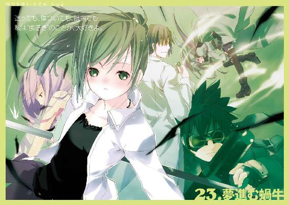
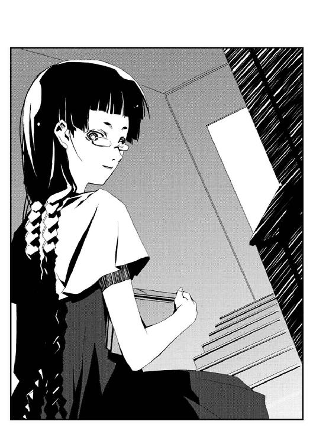
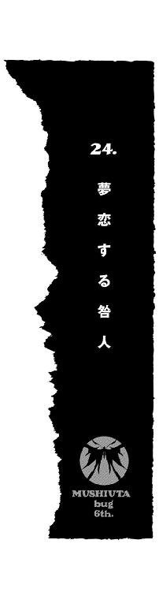

| ムシウタ ｂｕｇ ６ｔｈ．夢恋する咎人 (角川スニーカー文庫) | |
| 岩井 恭平 | |
| (2014) | |

ムシウタｂｕｇ
６ｔｈ．夢恋する咎人
岩井恭平

角川スニーカー文庫
本作品の全部または一部を無断で複製、転載、配信、送信したり、ホームページ上に転載することを禁止します。また、本作品の内容を無断で改変、改ざん等を行うことも禁止します。
本作品購入時にご承諾いただいた規約により、有償・無償にかかわらず本作品を第三者に譲渡することはできません。
本作品を示すサムネイルなどのイメージ画像は、再ダウンロード時に予告なく変更される場合があります。
本作品は縦書きでレイアウトされています。
また、ご覧になるリーディングシステムにより、表示の差が認められることがあります。
「それでは──」
暗闇に灯された蠟燭の明かりによって、三人の少女の顔が浮かび上がった。
「これより、第一回亜梨子会議を始めます」
宣言したのは、一之黒亜梨子だった。
真剣な表情はもちろんのこと、声も蠟燭の灯を揺らしたら死ぬとばかりに小さい。いつもは激しく跳ねまわっているポニィテールも微動だにしていない上に、見た目よりも運動性を重視したハーフパンツを穿いているのも他人には珍しく見えるかもしれない。
パチパチ──否、擬音にするならぺちぺちという乾いた拍手の音が生まれた。
「......」
眠そうな顔で、出された饅頭を口にくわえているのは、夜森寧子だ。中学三年生になった亜梨子よりも年上のはずだが、外見以外に説得力はない。派手なロゴつきのＴシャツとボンデージパンツというパンクスタイルをしている。
また真剣でも冷静でもない、招いたことに今でも若干不安をおぼえる金髪女もいた。
「朝っぱらからなんで蠟燭？ 照明つけろよ。使えよ、文明の利器。しゃあねえ、オレ様が直々につけてやる。うおっ、見えね。──痛えっ、誰だこんなとこに日本人形置いたやつ、怖いし痛え！ よく見るとストラップついてる、ってゲーセンの景品かよ！ 他の何を措いてもこんなんキャッチしねぇだろ普通！」
一人で騒いでいるのは、御嶽アンネリーゼ。誰もが彼女を本名で呼ばずに〝霞王〟と呼んでいるのは、外見と名前が無駄に上品であることに対する抗議なのだと思う。
「議題は──」
「......」
「何が信じられねぇって、ちょっとコレが可愛く見えてきたオレ様自身が何よりもびっくりだ！ ある種の呪いか？ 怖ぇ！」
口をもぐもぐさせながら延々と拍手を続ける寧子と、人形と見つめ合う〝霞王〟。
両者が亜梨子の話を聞いている様子はない。
「第一回亜梨子会議の議題は──」
亜梨子は口元を引きつらせながらも、再度繰り返そうとした。
だが不意に、周囲が明るくなった。
部屋を閉め切っていた襖が、パジャマ姿の少年によって開け放たれたのだ。
「亜梨子！ お前か、愛理衣を家に連れ込んだのは──ってなんだ、この部屋、暗っ！ あ！ なんで〝霞王〟と〝ねね〟まで......」
そこまで言って激しく咳き込んだのは、亜梨子と同居している薬屋大助だった。顔が赤く、声が掠れている。
「〝かっこう〟さん、はろー......」
「おー、最強の虫憑き様が風邪で寝込んでるってホントだったのか。馬鹿は風邪ひかねぇっていう日本のことわざはウソなんだなって、そりゃ風邪ひいたことがねぇオレ様にケンカ売ってんのかコラァ！」
「明らかにわざと饅頭に向かって挨拶してるよな、〝ねね〟！ 〝霞王〟も何も言ってねーのに摑みかかってくんな......！」
大助と〝霞王〟がとっくみあいを始める前までは整然としていた、亜梨子の部屋。
朝日が差し込むはずの窓は雨戸が閉ざされ、蠟燭も消えてしまった。
さらに同居人である薬屋大助は、鬼の霍乱ともいうべき風邪による高熱でダウン。
そして数人の来客。
たったそれだけしか普段と変わらない、ありふれた一之黒邸の風景だった。
だが──いや、だからこそ亜梨子はこのままではいけないと思い始めていた。
一人、正座をしたまま、亜梨子は口を開く。
「議題は──」
しかしまた一人、小柄な少女が姿を現した。
可愛らしい顔を支える首は、小学生という年齢を考慮しても細い。体育の授業はデフォルトで見学しますといった風情の少女は、堀内愛理衣。キャミソールや髪留めに、ハートマークが描かれている。
「〝かっこう〟さん、熱あるのに、そんなに駆け回っちゃダメですよ。たくさん人が来てはしゃいじゃうなんて子供ですね」
「はしゃぐか！ 熱がある時くらい、俺だって普通に寝たいんだ！」
堀内愛理衣もまた、亜梨子が声をかけた一人だった。だが大助が寝込んでいると聞き、彼の看病をしたいと言い出したのだ。お世辞にも友好的な出会い方をしたとは言えないのだが、なぜか彼になついているようだ。
「〝Ｃ〟ちゃん......キャミのヒモ、かたっぽ外れてる......」
「ああ、これですか。服を脱ごうと思って」
「平然と言うな！ 〝霞王〟も『とうとうやっちまったか』みたいな顔で俺を見るな！ ただの看病のどこに脱ぐ必要があるんだよ！」
「〝かなかな〟さんという人が、〝かっこう〟さんは服を脱ぐと喜ぶって......」
「顔をなめようとするし！」
「〝ころろ〟さんがぺろぺろすると喜ぶって」
「自分でしておきながら、『や、やめてください、〝かっこう〟さん......』とか──」
「そこにいる〝ねね〟さんが、嫌がることを無理矢理にされると〝かっこう〟さんが大いに喜ぶって」
「もういい、やめてくれ、死にたくなってくる......俺が悪いわけじゃないのに、なんでこんな思いしなきゃならないんだ。そもそもお前らが──ぐふっ」
〝霞王〟が無言で繰り出した拳が、大助の腹に突き刺さった。だらりと脱力した少年の身体を、金髪の少女が肩に担ぎ上げる。
「うるせぇので、どこかに捨ててきマス」
上品な笑顔で言う〝霞王〟のもとに、寧子と愛理衣が群がった。「その前に落書きを......」とか「今のうちに着替えを」などと楽しげだ。
そんな和やかな空気を、部屋に響き渡った大きな音がかき消した。
亜梨子が畳を両手で叩いたのだ。
ようやく三人の少女が、亜梨子に注目する。
「良い？ 今日、みんなに集まってもらったのは話し合いたいことがあったからなの」
〝霞王〟、寧子──気絶した大助は無視して愛理衣と、呼び集めた面々を見つめる。
静まり返る室内に、蝶々が舞い込んだ。
銀色に輝くモルフォチョウだ。
ただの昆虫ではない。思春期の少年少女に取り憑き、宿主の夢や希望といったものを喰らう超常の存在──それらは〝虫〟と称され、また〝虫〟を宿す者たちは虫憑きと呼ばれている。
だが〝虫〟の存在は一般的には噂として囁かれつつも、政府の公式見解では存在しないものとされている。
一方で国による〝虫〟の捕獲、隠蔽、研究などの任務を負っている特別環境保全事務局という組織がある。同機関は捕獲した虫憑きを訓練し、統制することで未知の虫憑きを捕らえているのである。
この部屋にいる者たちは亜梨子を除いて、全員が特別環境保全事務局──特環の局員なのだった。
「話し合う内容は──」
立ち上がり、亜梨子は言い放った。
「虫憑きを生む〝始まりの三匹〟......その一つ、〝三匹目〟を探し出すための方法よ」
１
赤牧市の中心は、オフィスビル街である。
国の主要機関が密集していることに加え、交通と通貨の流通経路としても国家規模で中心的役割を果たしていると言っても過言ではない。もちろん市内には娯楽施設や住宅街もあるが、中心街からは離れているし、ベッドタウンとしての機能を持つとなりの黒菱市や氷飽市ほどではない。
駅から離れてしまうと、中高生が利用するような店の存在率はガクンと減る。良くてファーストフード店くらいだろう。
そういった事情をふまえた上で、大きな国道に面した高級イタリア料理店にいる自分たちは第三者にどう映っているのか、亜梨子は少しだけ気になった。
資産家の子息が多いホルス聖城学園の同級生と似たような店に行くことはあるが、わざわざ官庁が見えるだけの殺風景なレストランに入ったりはしない。店内を避けてオープンテラスの席についたために、必要以上に目立ってはいないようだが。
「つーかよ」
自宅では大助がいるため落ち着いて話せないということで、街に出て昼食をとりながらの会議となった。店の選択は、高いものを食わせろというリクエストがあったためだ。
リクエストの主、〝霞王〟が三皿目のパスタを平らげたところで愛理衣を指さした。
その先には「ごちそうさまでした」と礼儀正しく頭を下げる愛理衣がいた。
「このガキ、誰？」
「遅っ！」
金髪の少女を除く三人の声が重なる。
「最初に紹介したじゃない。堀内愛理衣ちゃん、十歳。新しく仲間になってくれた子よ」
「いや、その説明で納得できた〝ねね〟のほうがすげぇだろ......てっきり親戚の子かと思っちゃったぜ。まあ虫憑きなのは匂いで分かるが」
「それも能力の一つですか、戦闘狂すぎていまだに無指定で干され気味の〝霞王〟さん」
「いきなりケンカ売られちゃったし。よし、グーとパー好きなほう選べクソガキ」
「やめたげて......きっと悪意はないの......」
「かばってくれてありがとうございます。任務中もいつもぼんやり頭をフラフラさせているだけで歌うカカシ呼ばわりされて同じく無指定の〝ねね〟さん」
「......グーとパー、どっちが好き......？」
「私は〝Ｃ〟というコードネームが与えられました。訓練を終えたばかりの若輩者ですが、よろしくご教授ください。ちなみに所属は情報班で、号指定は五号です」
ペコリと頭を下げる愛理衣。
〝霞王〟が「いきなり五号指定かよ......」と複雑そうな表情を浮かべる。
「偉いわねー、愛理衣。ちゃんと挨拶できたわね。言葉遣いもずいぶん丁寧になったし」
「ちゃんとしてねぇし。思いっきり見下してただろ。お前もだいぶおかしいぞ......」
亜梨子がニコニコと愛理衣の頭を撫でると、愛理衣がビクリと肩を震わせた。亜梨子を見上げる視線が淀んでいく。
「はい、素敵な教官に優しく教えていただきました。生意気を言うと、ホッケースティックで泣くまでぶたれるんです」
「......え？」
「泣いてもやめてくれません。でも教官は最高です。教官ツヨイ。教官ステキ。教官プリティ」
「愛理衣？ しっかりして、愛理衣！」
「ああ、あいつが教官についたのか......あのカッパ女のせいでレインコート恐怖症が中央本部で流行ってるよな」
「カッパ怖い......カッパ怖い......」
なぜか寧子まで頭を抱えて震え出す。
特別環境保全事務局の事情は分からないが、とにかく恐ろしい指導員がいるようだ。
怯える愛理衣と寧子を我に返らせるためにも、亜梨子は強引に話を戻すことにした。
「み、皆、食べ終わったわね？ さあ、議題について話し合いましょう」
言い、亜梨子は頭上を舞うモルフォチョウを見上げる。
「摩理のことを知るには、彼女のことを知っていたはずの〝三匹目〟に会う必要があるわ。皆には、そのための協力をしてほしいの」
花城摩理。
虫憑きだったその少女こそ、亜梨子が〝虫〟や虫憑き、ひいては特別環境保全事務局と関わる原因となった人物だった。
銀色のモルフォチョウはかつて、摩理に宿っていた〝虫〟だった。しかし摩理が病で他界すると、親友だった亜梨子につきまとうようになったのである。
〝虫〟は宿主の死とともに消滅する──その大前提に真っ向から矛盾するイレギュラーな存在、それがモルフォチョウ、さらにはその能力を扱う一之黒亜梨子だった。
ある事件をきっかけに特環に見つかった亜梨子は、捕獲をされることこそなかったものの、薬屋大助という監視者をそばに置くことを義務づけられたのだ。
「つーか、なんでこのタイミングなんだ？ 〝始まりの三匹〟ったって、一号指定の〝かっこう〟以上にオレ様たちが知ってることなんて何もねーぞ」
〝霞王〟が言った〝かっこう〟というのは薬屋大助のコードネームだ。
「それはもちろん、ついに情報収集が得意そうな愛理衣が仲間になってくれたからよ。それにこんなものも手に入れたしね」
笑み、亜梨子は銀色のロッドをテーブルに置いた。
見た目は折り畳み式の傘くらいの長さの棒だが、大助の話では亜梨子のためだけに製作された武器らしい。細やかな模様がびっしりと表面に刻まれているのだが、見た目ではほとんど分からない。
「すごいのよ。なんだか分からないけど、とにかくパワーアップ？ モルフォチョウの新しい能力みたいのも使えるようになったのよ。いまいち私自身、よく分からない力だったけど......これで何が起きても万全よ」
「んなこと訊いてねぇよ。オレ様が訊いてるのは、なんで〝かっこう〟がいない時を選んでオレ様たちを集めたのかってことだ」
亜梨子は、言葉に詰まる。
噓をついたつもりはない。
愛理衣が仲間になり、強力な武器も手に入ったこのタイミングで、大助が風邪をひいたのは単なる偶然だった。
だが彼の体調が治るのを待たずに、〝霞王〟たちを呼び集めたのも確かだ。
その理由は、自分でもよく分からない。
でも一つだけ根拠があるとしたら──。
亜梨子は唇を尖らせ、視線をそらす。
「だって......大助、〝三匹目〟の話になると、何かを隠してるみたいなんだもの」
「はっ！ どんだけ仲良しなんだよ。あいつはてめぇのダチか？ 恋人か？ ただの監視者だろうが。ちょっとくらい隠し事されたからってスネてんのかよ」
「子供ですね。過去の任務達成率からすると、〝かっこう〟さん抜きではどんな任務であれ成功率は激減します。そのうえ〝霞王〟さんや〝ねね〟さんが作戦に加わるなんて、目的を達成する気がないとしか思えません」
「......そうそう、私たちがいたらむしろマイナス......ってコラ......」
「と、とにかく！ 大助がいない間に少しでも調査を進めておくのは、無駄じゃないと思うのよ！ 大助でさえ分からなかったことを調査できれば、みんなだって当分の間はあいつに大きな顔ができるでしょう？」
苦し紛れに言った言葉だったが、意外と効果があった。三人の特環局員の表情がピクリと反応する。
真っ先にやる気を見せたのは、愛理衣だった。椅子にかけたバッグから何かを取り出す。
「そういうことなら、私から話をさせていただいたほうが良さそうですね。情報班で五号指定の私が一番、多くの情報を入手しているでしょうし」
「なに、それ？ ゲーム機？」
「......を、改造したものです。有線でハッキングにも使えますが、今は無線状態なので単なる記憶装置ですね。あ、もちろんゲームもできます。処理能力や解像度が特に高くて、どれくらいすごいかっていうと......あ、今、〝霞王〟がオタクって言った！ オタクじゃないもん！」
「大人げない人は放っておいて、続けてちょうだい、愛理衣......」
金髪の少女を睨みつつ、愛理衣が続ける。
「結論から言うと、〝始まりの三匹〟については一般的な情報しか入手できませんでした。特環や、リナという虫憑きが率いていると思われる集団、ハルキヨとその仲間たちなど、何らかのコミュニティに所属しているならば知っている程度のものです」
つまり、と愛理衣は一区切りした。
「分離型の虫憑きを生む〝大喰い〟は人間の女と同種の外見を持ち、ある問いかけに答えた者を虫憑きにするということ。また特殊型の虫憑きを生む〝浸父〟はローブを羽織った老人の外見をしており、現実世界から隔離された空間、〝教会〟内で力を欲した者を虫憑きにするということ。......〝浸父〟に関しては我々が身をもって知っていますね」
亜梨子を除く他の三人は皆、特殊型の虫憑きだ。金髪の少女が腕組みをして鼻を鳴らし、年長者の少女は微動だにしない。
「私は情報班ということで、もっと詳細なデータを得られました。でもせいぜい出没場所、時間などの記録くらいです。どれもランダムで、規則性がないことは計算済みです」
「〝三匹目〟については、どうなの？」
亜梨子が本題について訊ねると、愛理衣が幼い少女らしからぬ渋い顔つきをした。
「同化型の虫憑きを生むとされる、〝三匹目〟......まったくの謎としか言いようがありません。外見、能力、どのようにして虫憑きにされるのか......一切なにも分かっていません。〝かっこう〟さんから聞いていると思いますが、虫憑きにされた本人がいつ、誰に虫憑きにされたのかも分かっていないんです」
亜梨子は唇を嚙みしめた。
やはりというか、当然というべきか。愛理衣の説明は、大助が語っていた内容とまったく同じことの繰り返しに過ぎなかった。
「五号指定の私では、知ることができたのはここまでが限界でした。もちろん機密もありますし、信じてもらうしかありませんが......ただ──」
愛理衣が語調を上げた。俯きそうになっていた亜梨子は、顔を上げる。
「私自身が特環の局員になったことで、ほんのちょびっとだけデータベースの深いところに内部から侵入できました。一号指定の〝かっこう〟さんでも調べられない......支部長補佐以上にのみ閲覧が許される情報です」
「......？」
「特環は過去に〝三匹目〟と接触しています」
亜梨子は息を吞んだ。寧子もめずらしく目を見開いているものの、なぜか〝霞王〟だけが神妙な顔をしたままだ。
「経緯や結果は分かりませんが、とにかく殲滅を優先したことが窺えます。なぜなら通常兵器──つまり国家規模の兵器を投入された模様だからです。もちろん特環からも少数の局員が作戦に参加したために、データベースに参加した局員のリストと赴いた場所らしきキーワードが残っていました」
愛理衣が〝霞王〟を睨んだ。
「〝霞王〟さん──あなたも参加していますね？ 〝青播磨島〟における〝三匹目〟の殲滅任務に」
「......！」
意外な名前が飛び出した。亜梨子は金髪の少女を振り向く。
「......オレ様の出番なんて、なかったよ。戦闘力優先のチームを組んでワケも分からず投入されたはいいが、戦場はとっくに火の海。〝三匹目〟を拝顔するどころか、ムカつく光景を見せつけられただけだ」
「どうして黙ってたのよ、〝霞王〟！」
「アホかてめぇ！ 勝手にポコポコ極秘事項喋れるわけねぇだろ！」
「命令を守るなんて、あなたらしくないじゃない！」
「どんだけやんちゃだと思われてんだオレ様は！ ああでも、もう喋っちゃおうかな！ 命令守るなんてオレ様らしくねぇもんな！ ワケが分からなかったのは確かだけどな──たぶん、あいつも戦場にいたぜ！」
「アイツ？」
「ハルキヨ」
目を見開く亜梨子に向かって、〝霞王〟がつまらなそうな顔で言う。
「ヤツの炎が見えたのは、おぼえてる。ありゃあたぶん──戦ってたな。特環を含めて、あの場所にいた連中全員を相手にして」
「どういうこと......？」
「さあな。炎だけで、本人を見たわけじゃねぇし。ノリで戦ってただけじゃねぇ？」
そんなバカな。──そう言い切れないあたり、ハルキヨとは色々な意味で想像を超えた人間ではある。
「でも、そういうことなら──」
亜梨子は無意識に拳を握りしめた。
「やっぱりハルキヨは、〝三匹目〟のことを知ってるってことね！ それなら、ハルキヨから話を聞けば......！」
意気込み、愛理衣を見る。情報収集に長けた人材を仲間にしようと思いついたのも、〝三匹目〟が不可能ならばハルキヨとコンタクトをとろうと考えてのことだった。
亜梨子の期待に、愛理衣が微笑で応えた。
「ええ、〝始まりの三匹〟とは違って、ハルキヨは何かと目立ちます。彼の居所を知る手がかりは手に入れました」
「エライ！ さすがね！ どこかのチンピラ虫憑きとは違うわ！」
「オレ様のことかてめぇぶっ殺すぞコラァ！」
「ただ、その前に──私としては花城摩理に関する事件に関わったことがないので、あらためて同人物について調べたのですが......ある疑問を抱かざるを得ませんでした」
愛理衣が手元のゲーム機を操作しながら、急に神妙な顔をした。亜梨子は首を傾げる。
「花城摩理は......本当に虫憑きだったのですか？」
「......え？」
思わず間の抜けた声を発してしまった。
そのような根本的なことを、今になって訊ねられるとは思わなかった。
「そ、そうよ。摩理は私に夢を託すって言って、それでいなくなった後に私にモルフォチョウが......」
「それだけで虫憑きと思うなんて、大胆としか言いようがありませんね。普通なら、親友が亡くなった後に亜梨子さんが虫憑きになっただけと考えられる」
「で、でも！」
「そう、その希薄な根拠をもって、亜梨子さんは今まで動いてきた。そして〝ころろ〟の過去視や能力使用時に伴う人格の交代──花城摩理の人格の表面化によって、それは少しずつ証明されてきた」
「そ、そうでしょう？ 今まで、苦労したもの。それなのに、今さら──」
「──かのように、見えます」
再び硬直する亜梨子。
愛理衣が淡々と続ける。
「花城摩理、享年十三歳。ホルス聖城学園中等部に入学後、一日も出席せず。入院していた病院には電子カルテによる単調なデータが存在。──以上です」
「以上......？」
「ええ、以上です。終わり。これだけ。人間的な証言は主治医の〝可哀相な子だった〟というありふれた証言のみ。家族はまったくのノーコメント。同級生にいたっては目撃証言すらなし」
「......」
「〝ハンター〟という人物については、特環にデータが残されていました。モルフォチョウを宿す、銀色の槍使い......過去に何度か、同人物の戦闘行為を確認しています」
「え......？」
「......花城摩理さんに関するデータは、特環には残ってなかったんじゃ......？」
寧子が不思議そうに亜梨子を見た。
「え、ええ、大助にも調べてもらって──」
「花城摩理に関しては残っていません。──亜梨子さんも〝かっこう〟さんも、前提で思い違いをしていたようですね。特環はまだ、花城摩理イコール〝ハンター〟という図式を確信していません。したがって花城摩理に関するデータに、〝ハンター〟の情報は含まれません」
亜梨子は言葉もない。まさに愛理衣の言う通りだった。
「分かりますか？ つまり花城摩理を特定するに足る情報が少なすぎるんです。──はっきり言って、異常です。記録には残っていても、記憶には残っていないのです。......正直、残っている記録など、この場で私が改ざんできる程度のシロモノばかりです」
絶句する亜梨子の横で、〝霞王〟が顔を歪めた。
「何が言いてぇんだよ、クソガキ。まわりくどいことばかり言ってんじゃねぇぞ」
「言い方が気に入らなかったなら、すみません。でも第三者として一連の事件を調べ直した結果です。その上で第三者の代表として言いたいことは......」
愛理衣が下唇を嚙んだ。さすがに躊躇したようだが、思い切った様子で問いかける。
「花城摩理という人物は......本当に実在していたんですか？」
「......え......？」
喉の奥から、高い声が漏れた。あまりに予想外の問いに、まともな声が出なかった。
愛理衣がまくしたてる。
「だって......花城摩理さんを〝記憶〟しているのは、亜梨子さんだけなんです。その上で〝ハンター〟が花城摩理さんではなかったと考えると......実は亜梨子さんが〝ハンター〟であったという仮説も成り立つんです。いえ、そちらのほうが説得力がある」
「〝ころろ〟の能力で見た過去視はどうすんだよ？ 〝三匹目〟らしきヤツと会話する花城摩理や、〝ハンター〟としての映像も見たんだろ？」
「〝ころろ〟が噓をついている可能性もあります。──亜梨子さんといっしょにいただけの人物だったり、〝ハンター〟としての亜梨子さんを映していただけかもしれない」
「......亜梨子ちゃんが能力を使う時に現れるっていう、花城摩理さんの人格は......？」
「そんなものは演技でできます。ただの多重人格者かもしれない」
「最近のガキはずいぶん疑り深ぇんだな。どれもこれも噓ってか」
「偽装することが可能か不可能かで言うならば、可能だと言っているだけです。一人の人間の存在を疑うなんて、本来ならできるはずがない......でも花城摩理さんの場合、それができてしまうんです！ ──それに！」
集中的に非難されたことで、ムキになっているのだろう。愛理衣がさらに言う。
「誰かの〝虫〟が他人に宿るなんてことのほうが......よっぽど噓みたいに見える」
誰も言い返すことができなくなっていた。
〝霞王〟や寧子の視線が、やがて亜梨子へと向けられたのは当然だろう。
亜梨子が摩理の存在を主張するのを待っているのか──それとも彼女たちまで、疑惑を抱きつつあるのかもしれない。
だが亜梨子は、何も答えられなかった。
テーブルに置いた手が、かすかに震える。
「摩理が......存在しなかった、ですって？」
ぞっとして、掠れた声を絞り出す。
怖かった。
何よりも恐ろしかったのは──いなかったかもしれないと言われて、亜梨子自身が記憶を必死に辿ってしまったことだ。
いる。間違いなく、親友は生きていた。
だが花城摩理という少女のことを今でも想っているのは、亜梨子たった一人なのだ。
誰も同意してくれなくなったとしたら、亜梨子は最後まで本当に親友が実在したとはっきり断言することができるだろうか？
そうか──。
思い出す。
摩理の残したモルフォチョウが、怒ったことが一度だけあった。それは亜梨子が摩理のことを忘れようとした時──。
たしかに生きていたのに、忘れられてしまう恐怖とは、どれほどのものなのだろう。
最初からいなかったものとして、誰の記憶にも残らないとしたら──想像もつかない絶望を抱いてしまうのではないだろうか？
「存在否定説を貫くつもりなんて、毛頭ありません。存在していたという立場でも考えてみたのですが......そうなると、花城摩理が意図的に亜梨子さんに〝虫〟を遺したのかどうかが問題になります」
自ら生み出した静寂に耐えられなかったように、愛理衣が辛そうに言った。
「花城摩理さんにとっては、非常に残酷な選択だったはずです。もし〝虫〟を遺さなければ、亜梨子さんの友人としての記憶のみを残して死んでしまう......でも」
「......」
「〝虫〟を遺し、亜梨子さんを乗っとることができれば、生き続けることができるかもしれない。──でも友人だった亜梨子さんの人格が消滅すれば、花城摩理が生きていたという唯一の〝記憶〟がこの世から完全に消えてなくなってしまう。そして花城摩理は亜梨子さんとして生きていく......それは花城摩理という人間が、完全に〝なかったこと〟になってしまうということです」
愛理衣がモルフォチョウを見上げた。
「まるで天使と悪魔の誘惑です。花城摩理として死ぬか、それとも別の人間として生き続けるか......そんな選択をせざるを得なかった虫憑きがいたなんて、悲しすぎます。それだったら全て、亜梨子さんの自作自演だったほうがまだいい。だって──もし実在したとして、今ここにモルフォチョウがいるということは......生前の花城摩理さんが選んだのは」
「......もう、やめて」
三人の少女たちの視線が、亜梨子に集まる。
「想像して、あれこれと悩むのはさんざんやってきたわ。だからこれからは、とにかく動くことに決めたの」
亜梨子しかいない。
亜梨子しか、摩理のことを憶えていない。
本当に──そうなのだろうか？
「摩理は、確かに生きていたわ。だから私がそのことを証明した上で、摩理は何のために〝虫〟を遺したのか確かめなきゃ。──そのためにも、私以外にも摩理のことを憶えているはずの人に会わなきゃいけないの」
「それが、〝三匹目〟だと？」
訊ねる愛理衣に、亜梨子は頷く。
「今は摩理のことをどう思っていても構わないわ。でも私は〝三匹目〟と会わなきゃならないの。──手伝ってくれる、愛理衣？」
愛理衣が微笑した。あるいは、亜梨子を試していたのかもしれない。
「〝ころろ〟の過去視を信じるのならば......花城摩理さんは〝三匹目〟を〝先生〟と呼んでいました」
「でも、あの病院のお医者さんは──」
「そう、医師はごく普通の人ばかりです。特環も調べました。生まれから経歴まですべて裏が取れています。そう、〝先生〟ではない、看護師や研修医も含めてです」
愛理衣が続ける。
「花城摩理さんから得られる、〝三匹目〟に関する手がかりはこれだけです。〝先生〟というキーワードは憶えておいて良いと思いますけど。──だから、やっぱり......」
「ハルキヨね」
亜梨子は、はっきりと言った。
摩理を知る手がかりは、まだ途切れていない。それはまだ細い糸を摑むように頼りなく曖昧だが、それならば亜梨子は全霊を込めてそれを摑むだけだ。
「ええ、それしか──ないと思います」
携帯ゲーム機をバッグにしまい、小柄な小学生が席を立った。
「さあ、ハルキヨに話を聞きに行きましょう」
２
愛理衣に連れられてやって来たのは、郊外にある奇妙な建築物の前だった。
国立の美術館と言っても通じるだろう。立方体の建物が敷地の中にいくつも乱立し、中央には半円形のオブジェがそびえ立っている。芝生にレンガを敷き詰めた通路は門を開放し、誰でも入場できるようになっていた。
大きな門扉に対し、貼られているプレートは小さかった。金属製の板に、〝赤瀬川グループ私立図書館〟と刻まれている。
「私立図書館......？」
モダンな建物を前にして、亜梨子は首を傾げた。図書館というものは公共機関であるという思いこみがあったため、私有地としてのそれに違和感を抱かざるを得ない。
「ここにハルキヨがいるのか？」
〝霞王〟と寧子が、疑いの眼差しを愛理衣に向ける。
「さあ、どうでしょう」
「ん？ ん？ オレ様の記憶違いか。さっきてめぇでハルキヨに会いに行くって言ってなかったかクソガキ」
「ここはおそらく──ハルキヨを含むネットワークの中心となっている場所です」
冷静に「行きましょう」と言い、愛理衣が建物の入り口に向かって敷地を進んでいく。
「どういうこと？」
「最近になって、特環はハルキヨの仲間を数人捕獲しました。〝強盗〟という装備強奪者や、西中央支部を見張っていた人物──こちらは〝首切り〟という新入りが入局する前に欠落者にした相手ですが......それら捕獲した人物の所有物を調べました」
可愛らしい顔をして、強盗や首切りなど物騒な単語を平然と言う。どちらも亜梨子には聞き覚えのない名前だ。
「携帯電話や端末など機器は違えど、一定の間隔で何らかのデータを送信していた形跡がありました。巧妙に経路を偽装していましたが、私が調べたかぎりではどちらも同じサーバへ情報を送信しています。そのサーバがあるのがおそらく......この図書館です」
「よく分からないけど......ハルキヨとその仲間たちの拠点っていうこと？」
「情報の拠点、です。実際に本人たちがこの場所で集合することがあるかは分かりません」
「......でも〝Ｃ〟ちゃんがそれを調べたなら......特環がもう調査してそうだけど......」
寧子の言葉に、愛理衣が頰を膨らませた。
「新参者がいきなり〝ハルキヨのネットワークを摑みました〟と言っても誰も信じてくれませんでした。優秀な情報班の先輩方なら、すぐに正しかったことが分かるんじゃないですか？ ......一年後くらいに」
「愛理衣も苦労してるのね......」
先を歩く愛理衣の頭を撫でているうちに、建物の入り口に到着した。
自動ドアが開くと、広いラウンジが現れた。綺麗に磨かれた床と高い天井の間に、ソファや椅子、館内図を載せた台が見える。
ラウンジと入り口の間にあるのは、駅でよく見かける改札口に似た機械だった。カードの投入口と、鉄の棒で塞がれた通路がある。
「ここからは敵地です。くれぐれも気を抜かないでくださいね」
愛理衣が神妙な面持ちをしながらも、律儀にそばにあった券売機に硬貨を入れる。
「敵地つっても......説得力ねぇな」
券売機に並びながら、〝霞王〟が呟いた。
同感だった。
館内にいるのは亜梨子たちだけではなかった。自習室で勉強しに来ましたと言わんばかりの学生や、ソファをたまり場にしている老人など、のどかな風景がひろがっている。
「ねえ、愛理衣......」
「な、なんですか！ みんなしてそんな目で見て......ホントですからね！ 絶対ここで間違いないんだから！」
力説する少女を生暖かい視線で見ながら、亜梨子たちは改札口を通って館内に入った。
いざ足を踏み込んでみても、当然ながら何も起きない。いっそのこといきなり敵が襲いかかってきてくれたほうが、分かりやすいというものだ。
とりあえず亜梨子は、館内図を覗き込んだ。
「サーバ？ とやらはどこにあるのかしら」
「肉体労働担当の皆さんで、館内を駆けずり回って探せばいいんじゃないですかー？」
とうとうスネてしまった。
「だ、誰か係の人を見つけたほうが良さそうね。何か後ろめたいことがあるなら、それなりの反応を見せてくれるはずだし」
亜梨子の提案が採用された。蔵書ごとにブロックに分けられた図書館の内部を、渡り廊下を通じてあてもなく探し回る。
違和感に気づくのに、時間は要しなかった。
「いた？」
「......ううん......」
「いねぇぞ」
「いませんね」
手分けをして館内を練り歩いた末、再びラウンジで顔をつきあわせる亜梨子たち。
「係員が、いない......？」
図書館の関係者らしき人物が、どこにも見あたらなかった。たった一人として、である。
この私立図書館では、貸し出しというシステムが存在しないらしい。蔵書の数は多いものの、基本的には閲覧のみ。入り口で購入したカードの種類で、ブロックごとに設置された改札口を通行できる範囲が変わるようだ。
「ハルキヨがいるとかいないとか、それ以前の問題ね......まさか利用客以外には誰もいないなんていうパターンは考えてなかったわ」
「よし、めんどいからもう帰ろうぜ」
「〝ねね〟さん、何をしてるんです？」
寧子が無言で館内図を操作していた。台には蔵書検索用の機能が備わっているらしく、タッチパネル式の液晶画面がある。
「せっかくだから......色々、調べておこうと思って......ハルキヨとか、〝始まりの三匹〟とか、青播磨島とか......」
「......あの、〝ねね〟さん。そういうのは普通の情報バンクには掲載されていないものです。青播磨島という固有名ですら、ほとんどが記録上から消されています。なぜなら特環には情報検索とワーム能力を持つ虫憑きがいて──」
「あったみたいだけど......」
「そのワームに感染した情報は等しく破壊されてしまう──ええっ？」
驚きの声を上げたのは、愛理衣だけではなかった。亜梨子と〝霞王〟も身を乗り出してパネルを覗き込む。
検索用語、〝ハルキヨ〟。
検索結果、〝特定の蔵書三冊が検索されました。係の誘導に従ってください〟。
たしかに──そう、表示されていた。
「あるの？ ねえ、あるの？ 三冊も？」
「い、いえ、たぶん何か別のものがヒットしただけじゃ......なんかの栄養ドリンクとか」
「飲みたくねぇな。他もやれ、他も」
寧子が〝始まりの三匹〟と入力する。
先ほどと同じような、特定の蔵書十二冊がうんぬんという内容が表示された。
「多っ！ 寧子さん、青播磨島は？」
特定の蔵書八十七冊がうんぬん。
自然、一同の視線が愛理衣に集まる。
「そ、そんな目で見ないでください！ お、おかしいですよ、こんなの！ 私が噓ついてたわけじゃないもん！──〝ねね〟さん、今、なにか押しませんでした？」
「なんか......〝呼び出し〟っていうボタンがあったから、押しちゃった......」
「な、何が出てくるのかしら」
「そりゃてめぇ、図書館っつったら──」
カツン、という靴音が響いた。
音に反応し、亜梨子たちは二階へ繫がる階段を見た。
「館内ではお静かに願います」
静かな、しかし有無を言わせない口調で言ったのは、細身の少女だった。
細長い楕円形の眼鏡と、短い黒髪──いや、首の後ろで二つに編んで腰まで伸ばしているようだ。一冊の本を小脇に抱えて足元まであるワンピースを着た姿は、聖書を持った修道女のようだ。美人だが、係員というにはずいぶんと若い。寧子と同世代だろう。
「特定の蔵書を検索された方ですね。どうぞ、こちらへ。書庫までご案内いたします」
物腰やわらかく言い、少女が片方の唇の端を不自然に持ち上げた。
「にひっ」
それが笑い声だと気づいたのは──数秒ほど、その場で硬直した後でのことだった。
３
導かれるままに通路を歩いていると、係員らしき少女がポツリと呟いた。
「私の周りに美少女がいっぱい......にひっ」
なぜか、ぞくりと背筋に冷たいものが走った。冷房が効きすぎているのかもしれない。
「えっと......あなたは係員、ですよね？」
「〝司書〟と呼んでいただいて結構です。アルバイトですけれど」
振り向き、物静かな口調で言う〝司書〟。
「......はあ」
亜梨子が他の面々に顔を向けると、〝霞王〟らがいっせいに口や手を動かしジェスチャーを開始する。解読すると「絶対フツーじゃねぇ」「司書には見えない......」「気持ち悪い」と必死で主張しているようだ。
おおむね同感だった。出会ったばかりだが、〝司書〟と名乗る少女は独特の雰囲気を醸し出している。
「これが美少年だったら......リーダーっぽい人と金髪のからみは基本よね、にひっ」
「......」
ブツブツと呟く少女に連れていかれたのは、プレートも何もないブロックだった。
扉を開け、内部に足を踏み入れる。
そこは広大な書庫だった。その名の通り、本の倉庫と言わんばかりに、整然と並んだ棚に数え切れない数の蔵書が並んでいる。
違和感をおぼえ、その理由に思い至る。
何万冊とありそうな本がすべて、まったく同じ装丁をされているのだ。同じ色、同じ大きさ、同じ形の本がずらりと並んでいる──。
〝司書〟が入り口のそばにある機械を操作し、吐き出されたカードを亜梨子に手渡す。
「お問い合わせのあった書籍がある棚の番号とタイトルです。棚にも同様の数字が書かれたプレートがありますが、もし分からないことがあれば、声をおかけください」
カードを手渡す際に、亜梨子と〝司書〟の指先がわずかに触れ合った。
「......にひっ」
美人の崩れた笑みというのは、これほどまでに気色の悪いものなのだろうか。底知れない怖気を残し、〝司書〟が受付台の向こうに回り込んで椅子に座る。
亜梨子たちは、即座に円陣を組んだ。
「だ、第二回亜梨子会議！ ど、どうなの、あれ？ ハルキヨの仲間？ そうよね、だって気持ち悪いもの！」

「二択ですね。この蔵書を探すか、彼女を問い詰めるか......なんですか、このタイトル。『ハルキヨ危機一髪』ってふざけてますよね、むしろ探し出して破り捨てたい」
「問い詰めるなら、てめぇがやれよ。オレ様は喋りたくねぇ。会話したくねぇ」
「また一人で何か喋ってるわ......」
亜梨子たちが受付に視線を向けると、〝司書〟は何やら執筆をしている様子だった。書きながら、ぶつぶつと呟いている。
「子供はほのぼの系か辱め系よね。......うっさいわね、邪魔しないで、傑作ができそうなの。......は？ なんで私の趣味にまで口を出されなきゃ──うん、そのネタはもらうわ。え？ イヤよ、私はただの管理人のはずでしょ。番人ってなによ、ちょっと黙っててくれる。ひっぱらないでよ、踏み殺すわよ」
延々と呟き続ける。
「なんでそうなるのよ。私は戦闘なんて苦手なインドア派なの、閉じこもりたいの、引きこもりたいの。......にひっ。──ちょっと、そのネタの続き、教えなさいよ。なにそれ、分かったわよ。もしあっちから言ってきたらだからね？ こっちからはイヤだからね？」
そこでようやく、亜梨子たちの視線に気づいたようだ。ハッとして無表情に戻る。
「あ、脚立ですか？」
「......」
「いちおう、スライド式の階段が設置されていますので、そちらをお試しになってみてください。昇る際にはロックを忘れずに......」
何事もなかったように、平然と事務的な説明をされてしまった。
できることなら深入りしたくなかったが、訊かないわけにはいくまい。
「あなた......ハルキヨって、知ってる？」
〝司書〟が露骨に顔をしかめた。
「ハルキヨの仲間だったり......するかしら？」
予想以上に嫌そうな顔をされて戸惑ったものの、亜梨子は重ねて訊ねた。
眼鏡の少女が大きな、とても大きなため息をついた。「......分かってるわよ」と誰にともなく呟き、落ち着き払って顔を上げた。
「誰があんな変態の仲間──痛っ。......ええ、たしかに彼とは懇意にしています」
多少、挙動不審ながらも素直に認めたのは意外だった。
とはいえ、図書館内にハルキヨの仲間がいるということは分かっていたのだ。亜梨子たちは眼前の少女を警戒する。
「ここがハルキヨとその仲間たちの拠点になっているって聞いたけれど、本当なの？」
「まあ......そうですね。ハルキヨを含む少数の虫憑きが連絡を取りあうためのネットワークなら、ここで提供しています。デジタルなシステムに関しては多少の知識をかじった程度なので──もう特環に見つかってしまったようですけれど」
愛理衣をちらりと見、「にひっ」と〝司書〟が笑う。ビクリと愛理衣が肩を震わせた。
愛理衣が特別環境保全事務局の人間であることを、すでに知っているようだ。
だが、動じてはいない。
こちらの質問にすらすらと答えるのも、都合が良いとはいえ不気味だった。
「ただ、余計なお世話を焼かせていただくなら、その〝ハルキヨの仲間〟という呼称は控えたほうが良いですね」
「......？」
「分かりやすく例を出しましょう。特環が強い虫憑きを見つけました。群れたり隠れたりする必要がないくらいに強い虫憑きです。特環が言いました。『お前はハルキヨの仲間に違いない』。その虫憑きは思いました。『ハルキヨって誰だ？ いっちょ探してみるか』──そうして私のネットワークに属した虫憑きが数名います」
唐突に譬え話を持ち出され、亜梨子は眉をひそめた。
「我々はただ己の目的のために互いを利用し、互いに己の趣味を自慢しあい、互いに遊んでいるだけです。ただ単に、一番強くて一番目立っているのがハルキヨというだけです」
にひっ、と〝司書〟が笑う。
「〝ハルキヨの仲間〟──そう呼ばれる虫憑きの集まりが実現しつつあるとしたら、そんな幻想を抱いている特環のせいでもあることを、お忘れなきよう」
「実際には、あなたたちはハルキヨの仲間じゃあないってこと......？」
「時と場合によるということです。──ちなみに私はネットワークを提供する代わりに、未だに世界に露見していない出来事、あるいは消されつつある情報を提供してもらっています。いわば〝情報の絶滅危惧種〟を保護、管理しているというところですか」
言い、〝司書〟が殺風景な書庫を見る。
「本は良いですよ。手触り、匂い、何より感情があります。管理をしっかりしていれば、失われることも盗まれることもない。ぜひとも本を読んでくださいね。閲覧は自由です。そう、あなたのような子供は特に」
また一瞥され、愛理衣がムッとした。子供扱いされたことが気に障ったのか、言い返す。
「今はデジタルの時代です。電子情報さえあれば、アナログな媒体など必要ありません」
「にひっ。......優劣を決めるつもりはありません。ただデジタルな情報は純粋すぎる。感情がないために、錯誤しやすい。──私たち情報を司る者は、いつでもそれらに挑まれているということだけお忘れなく。読み負けたら......何もかもが歪んでしまう」
「......」
「今は理解できずとも一年後、二年後......いつか気づいてくださいね。美少女が歪んじゃうともったいないし、にひっ」
気持ちの悪い笑みを浮かべ、〝司書〟が白い手袋をはめた。何やら書き込んでいたノートを閉じ、「さて」と一冊の本を抱える。
「あなたたちは特環の手先で、私は〝ハルキヨの仲間〟です。──わー、捕獲されちゃうー、怖いよう」
「え？」
唐突に〝司書〟が棒読みの台詞を口にした。
「あーん、逃げ場がないよう。──次はどこに行こうかな。古本屋とか良いなぁ。逆に大きな書店も良いかも──ああでもその前に、目の前の敵をやっつけなきゃ」
「ちょ、ちょっと待って......！ 私たちは、あなたと戦うつもりは──」
「でも全員相手にするのは面倒だなぁ。よし、一人ずつ確実に、結果的に皆殺しにしよう」
投げやりの台詞を口にし、〝司書〟が手にした本を開いた直後だった。
「......！」
すぐそばにあった本棚の列が、滑るようにして急速に遠のいていく。
驚いて振り返ると、〝霞王〟たちまでもがもの凄い勢いで遠ざかっていた。亜梨子に向かって手を伸ばし、何かを叫んでいるようだが、すぐに声も聞こえなくなる。
本棚だけではなかった。〝司書〟がカードを取り出した機械や受付用の机までも、はるか遠方へと滑っていく。
「えっ──」
壁が消え、天井が消え、床までもが消え去った。足元が不安定になり、急激な落下感が亜梨子を襲う。
「きゃ──」
悲鳴を上げようとした亜梨子の頭に、何かがぶつかった。反射的に顔を上げると、頭上から大量の本が降り出した。雨のように、霰のように、古びた本が降り続ける。
視界を埋めるほどの本が、落下する亜梨子を追い抜き、足元に積み重なっていく──。
「ようこそ、私の〝司書室〟へ」
気がつくと、亜梨子は一面の本の絨毯の上に佇んでいた。
そばにいたはずの〝霞王〟たちは、すでに影も形も見えなくなっていた。本の海にいるのは亜梨子と──〝司書〟の二人だけだ。
「領域を拡大化した隔離空間は、はじめてですか？ まあこのような真似ができるのは〝始まりの三匹〟の一つ、〝浸父〟を除けば、そういないでしょうが」
どこから取り出したのか、〝司書〟は木製の椅子を持っていた。
「私もそこそこのつもりですが、他にも媒体もなしにビル一つを領域下に置ける化け物だっているそうですよ？ 本当に強力な虫憑きとの戦闘経験が少ないようですね」
世間話のように〝司書〟が言った。本の海の上に椅子を置き、腰をかける。
「さて──」
優雅な物腰で膝の上に本を開き、羽根のついたペンを取り出す。
「戦いましょう。気を抜くと、死にますよ」
本の表面で、ペンが躍った。
直後──轟音と地響きが起きた。
亜梨子は音がする方角を見て、目を見開く。
本の海にいたはずなのに、なぜか大量の水が波となり、こちらへ迫っていた。
津波が亜梨子めがけて押し寄せる。
「な──」
硬直する亜梨子の頭を、何かが叩いた。
銀色のモルフォチョウだ。目映い輝きを放ち、せわしなく頭上を飛び回っている。
亜梨子はハッとし、銀のロッドを取り出す。
「なるほど、それが......〝強盗〟がストーキングしていた道具屋さんの造った武器ですか」
〝司書〟の呟きを聞く余裕など、なかった。
手の中で数倍の長さに伸びたロッドに、銀色のモルフォチョウが舞い降りる。
蝶々の躰が爆発するように触手に変形し、ロッドに突き刺さるようにして同化する。表面に刻まれた微細な模様が輝き、ロッド全体が燐光を放った。
「このっ......！」
銀色の槍が完成するのももどかしく、津波めがけて手にしたロッドを振るう。
一瞬の静寂。
そして──銀光を放つ鱗粉が吹き荒れた。
膨大な水流が真っ二つに裂け、轟音とともに亜梨子の左右を通り抜けていく。
「話を聞きなさい！ 私はあなたと戦うつもりはないのよ！ ただハルキヨの居場所が知りたくて──」
亜梨子は髪から水滴を滴らせながら〝司書〟に向き直った。
だが彼女を見つめ返したのは、冷たい輝きを放つリボルバーの銃口だった。
「〝その時、私はリボルバーの硬い感触を確かめながら、引き金を引いた〟──」
ぶつぶつと呟いてペンを走らせる〝司書〟の、もう片方の手に拳銃が握られていた。
銃声が鳴り響く。
モルフォチョウの槍から銀色の鱗粉が噴き出した。生み出された鱗粉の壁が、亜梨子に命中する直前で銃弾を弾き飛ばす。
「〝リボルバーではダメだ。私はマシンガンに持ち替えた〟」
眼鏡の少女の手から拳銃が消え、代わりに大きな機関銃が握られる。
「話を聞きなさいってば！」
叫び、〝司書〟の足元を狙って槍を振るう。
「〝槍使いの攻撃は私を避けて通りすぎた〟」
鱗粉の嵐が、〝司書〟の手前で方向を変え、あさっての方角へ突き抜ける。足元を埋め尽くした本が吹き飛び、紙切れが飛散した。
お返しとばかりに、亜梨子めがけてマシンガンの銃弾が降り注いだ。銀色の鱗粉が一発残らず弾丸を弾き飛ばす。
「大量の媒体──私の〝虫〟の媒体である本に囲まれていてこそ、この隔離空間は創り出せるわけですけれど......ここでは私が書いたことが現実になります。でも相手の状態を直接的に書くことはできないので、ぶっちゃけ私の速記とそちらの攻撃の早い者勝ちですね」
銃弾を放ちながら、〝司書〟が事務的な口調で言った。
「私自身か、私の持っている本を攻撃できれば、あなたの勝ちですよ」
「いい加減にして！ 私は戦うつもりなんてないって何度も──」
「あなたにはない。私にはある。それだけのことだと思いますけど。もしかして、話が通じない相手と戦ったことがないんですか？」
怪訝そうに首をひねる〝司書〟。
「それとも、どんな相手でも話が通じると思っているんですか？ おかしいですね、あなたが探しているハルキヨは......私以上に、まともに話が通じる相手じゃないのに」
「......っ！」
歯嚙みする亜梨子を見て、椅子に座った少女が「にひっ」と笑う。
「それともお約束として、私のほうがこう言うべきでしょうか。──私に勝てたら、ハルキヨの居場所を教えてあげるわよ、と」
「......本当でしょうね」
「にひっ。にひっ。──敵の言うことを素直に信じるピュアっぷり、最高ですね。今、本当になりました」
「......」
「正直、私は戦闘は苦手なんです。──書き始めたら止まらないから。せいぜい死なないようにがんばってくださいね」
「いいわ。やってやるわ......よ......」
意気込み、〝司書〟に向かって駆け出そうとした時だった。
背後に気配を感じ、振り返る。
そこにいたのは、亜梨子の身長の数倍はありそうな体格をした化け物だった。緑色の身体に異様に長い二本の腕、頭にはツノが生え、口に禍々しい牙を生やしている。
「架空の物体は描写するのに時間がかかるんですが......時間稼ぎのお喋りにつきあってくれて、助かりました。うん、悪くない出来。二体目はどんなのにしようかな」
怪物が振り下ろした拳を、横に跳ぶことでかろうじて避けた。拳が足元を叩いた衝撃で、無数の本が宙高く舞い上がる。
「な、なによ、これ......！」
動揺しつつも、受け身を取って立ち上がる。
まさか人生の中で、本物の怪物と戦う羽目になるとは思ってもいなかった。
繰り出される怪物の攻撃をかわし、槍の反撃で片腕を切り落とすことに成功する。
だがその間に、姿形の異なる怪物が新たに生まれていた。
今度こそ片腕の怪物を両断するが、同時に別の怪物がさらに誕生する。
一匹を倒す間に、二匹の怪獣が生み出される──その繰り返しを続けているうちに、攻撃をかわすので精一杯になっていた。そうなると際限なく怪獣の数が増え続ける一方だ。
キリがない。
否。やがて亜梨子が、怪物の攻撃を処理しきれなくなったのは、必然だった。
怪物の群れが、亜梨子に襲いかかる。
「......！」
心の中で、声がした。
──亜梨子......。
それは聞き覚えのある、亡き親友の声。
今までも亜梨子が危機に陥るたびに、摩理の意識に自我を奪われていた。
摩理と入れ替われば、こんな敵など一蹴してくれるだろう。同じ同化型の虫憑きである大助のように、どんな敵でさえなぎ倒し、圧倒的な力で勝利してくれるはずだ。
だが亜梨子は、奥歯を嚙みしめた。
槍を握る腕に力を込める。
「こ......のぉっ！」
下段から振り上げた槍が、鱗粉を噴き出した。衝撃の渦が、三体の怪物を吞み込む。
荒い息をつきながら、摩理に頼ってしまいたいという気持ちを振り払う。
〝司書〟の言う通りだ。
これから立ち向かう相手はハルキヨや〝始まりの三匹〟、そしてもしかしたら特環という、理屈よりも強さが必要な相手ばかりだ。
そして、それらを探し出し、協力を得なければならないのは摩理ではない。
他でもない亜梨子自身が、強くなる必要があった。
「にひっ」
遠方で笑う〝司書〟に向かって、駆け出す。
迫り来る怪物をなぎ払い、攻撃を避け、足元の本の上を転がって股の間をすり抜け、猛然と〝司書〟めがけて突っ走る。
だが〝司書〟まで間近というところで、数体の怪物が立ちはだかった。かいくぐれるルートが見つからない。
今の自分では、ここが限界だと痛感する。
だから──モルフォチョウに力を借りる必要があった。
「力を貸して......！ この前の、よく分からない力があったでしょう！」
走りながら、手の中の槍に呼びかける。
だが銀色の槍は無言だった。
敵もまた亜梨子に向かい、地面を蹴った。
「力を──」
亜梨子は、槍を睨む。
力強く。
何よりも、心を強く保ちながら。
「──貸しなさい」
目を見開き、槍に向かって言い放つ。
モルフォチョウの反応は、静かに訪れた。
ロッド全体を、ゆるやかな輝きが包んだ。
目を凝らさないと見えないが、表面に刻まれた模様を微少な光が駆け巡っている。
はじめてこの武器を使った時もそうだった。
輝きを増したロッドから、鱗粉が漏れ出した。それは噴き出すというよりも、周囲に浸透するように一面に拡がっていく──。
「にひっ。今度は大物ですよ。傑作が書けました」
〝司書室〟を埋め尽くしつつある鱗粉に気づくことなく、眼鏡の少女が笑む。
静寂。
何も、現れない。
「......にひっ？」
ようやく異変に気づいた〝司書〟が、本から顔を上げた。眼前の光景を見て絶句する。
鱗粉に包まれた怪物たちが、凍りついたようにピタリと動きを止めていた。
動かぬ彫像と化した怪物たちをすり抜け、亜梨子は一直線に〝司書〟に向かっていく。
はじめて〝司書〟に動揺が浮かんだ。
「そんな......私の領域が上書きされた？ いえ、それだったら〝司書室〟そのものが消えるはず。私の〝虫〟が攻撃を受けたわけでもない。能力が封じられた......違う！ 封じられたなら、やっぱり〝司書室〟そのものがなくなるはず......だったら、本気を出して！」
羽根つきのペンが、力強く本の上を走った。
「能力が、発動しない......これは......〝虫〟が、眠ってる？」
モルフォチョウの新しい能力──いや、それともこれが本来の力なのだろうか？
真実は分からずとも、亜梨子は目の前の敵を追いつめることに成功していた。
愕然とする〝司書〟の額に、槍の穂先を突きつける。
「はあ......はあ......私の勝ち、よね？ そうでしょう？」
〝司書〟がビックリした顔を上げ──やにわに腕にしていた時計を見た。
「うん、じゅうぶんよね」
「......？」
「降参です。さすがは同化型の虫憑き。私ごときが敵う相手じゃありませんでした」
やけに素直な敗北宣言だった。眼鏡の少女が諸手を上げ、「ユー、ウィン！」と笑う。
「この槍、下げてもらえませんか？ このままだと......おかしな話ですが──私は自分の能力の解除すら、できない」
「......」
亜梨子は無言で、槍を下ろした。主の意思をくみ取ったのだろう、槍からモルフォチョウが分離し、蝶々の形となって頭上を舞う。
「にひっ。ピュアですね。あっさりと敵の言うことを信じてくれた」
「もう一度やっても、勝つもの」
「その通り。その意気です」
何が〝その意気〟なのか。少女が再び「にひっ」と笑った直後、逆戻り映像のように足元の本が頭上へと舞い上がった。
「......！」
視界を埋め尽くしていた本が消えると、見覚えのある本棚や受付用の机が現れた。バラバラにしたパズルを組み直すように、猛スピードで元の図書館の姿を取り戻していく。
そして──。
「あっ、てめぇ！ 亜梨子！」
一体何を探していたのか、部屋の隅でゴミ箱を覗き込んでいた〝霞王〟が振り返った。
その声が聞こえたのか、本棚の奥、そして通路から寧子と愛理衣も姿を現す。
「亜梨子ちゃん......」
「どこに行ってたんですか、亜梨子さん！」
皆で亜梨子のことを捜してくれていたようだ。少女たちが安堵の表情を浮かべる。
「話はついたわよ。ハルキヨの居場所を教えてもらえるわ」
ロッドを元の長さに戻し、亜梨子はにっこりと微笑んでみせる。
「そうよね、〝司書〟さん？」
「あれを〝話〟と言い切りますか。にひっ。ええ、お教えしましょう。そういう約束です」
受付用の机に戻り、〝司書〟が自らの足元を指さした。
「〝ここ〟です」
穏やかな口調で、あっさりと言う。
「は？」
亜梨子たちの声が重なった。
〝司書〟は悪びれもせず、続けて言う。
「ここに居ました。ついさっきまで。ほんの今まで。まさに数刻前まで。体育座りで」
一瞬、亜梨子は呆然として──。
「......！」
飛びつくようにして、机の反対側を覗き込む。なるほど、人が一人ゆうに隠れられるほどのスペースがあった。しかし今は誰の姿も見あたらない。
〝司書〟が目頭を押さえた。眼鏡の上から押さえているあたり、涙など出てはいない。
「本当にすみませんでした。実は私、彼が逃げる時間稼ぎのために戦わなければ殺すって脅されたんです。あの悪の代名詞のような恐ろしい魔人に。それはもう怖くて怖くて」
それはない。少なくとも亜梨子が思い当たる、最初の〝司書〟の奇妙な独り言がハルキヨとの会話だったとしても、その愉快な内容からは脅しではないはずだった。
「......！」
〝霞王〟や寧子、愛理衣を振り返ると、三人は気まずそうに目をそらした。
「悪ぃ。ゴミ箱とか花瓶ばっか捜してた」
「奥の暗がりにいないかなって......ずっとそこに......」
「外のマンガコーナーあたりを重点的に捜してました......」
「やる気がなかったり休憩したり目移りしたりしてるのがバレバレで、ちょっとショックだわ！ 真剣に私を捜しなさいよ！ そんなことでハルキヨを逃がしちゃったの！ ──いえ、それよりも」
〝司書〟に向き直り、問いかける。
「どうしてアイツが、こんなところにいるのよ！」
「用もないのにたまに現れたりはしていましたけど、今回はちょっと様子が違いましたね」
泣き真似をやめ、〝司書〟が言う。
「〝始まりの三匹〟について、調べていたみたいですね。珍しく真面目に」
「......！」
「他にも過去の虫憑きに関する資料を探し回ってましたけど......結局、苛ついた様子で〝どいつもこいつも、この俺を騙してんじゃねーだろーな！〟って叫んで本を乱暴に投げ捨てやがったので、二、三発ひっぱたいておきました」
「ハルキヨも〝三匹目〟を探してる......？」
摩理をどちらが先に見つけるか、競争だと言ったのはハルキヨだった。
その手がかりであるはずの〝三匹目〟を知っているはずの彼自身が、なぜ──。
疑問もそうだが、苛立ちが湧いた。
「それにしたって......どうして、私たちから逃げるのよ！ 今までは呼んでもいないのに、私の前に現れまくってたくせに！」
「〝敵にモノを教わろうなんて甘ったれたヤツなんかと顔を合わせられるか〟ってカッコつけてましたよ。体育座りで」
「あの男......自分だけまた〝三匹目〟と会って、摩理のことを訊こうとしてるのね！」
「それは──不可能じゃないでしょうか」
亜梨子の言葉を、〝司書〟があっさりと否定した。「私が口出しすることじゃないのでしょうが」と付け足す。
「〝先生〟はもう、いない──」
亜梨子は目を見開く。
「彼はそう、言っていましたから。──彼がここで探していたのは〝大喰い〟と──何やら特定の虫憑きについてです。〝不死〟がなんとか......」
「どういう......こと？」
「〝始まりの三匹〟については私も情報を集めているので、ハルキヨには〝三匹目〟に関する事の経緯を説明するよう言っているのですが、まったくの黙りです。だから彼から〝三匹目〟にまつわる情報の一端でも、聞き出してくれると約束してくれるなら......」
黙り込む亜梨子たちを見て、〝司書〟が言った。
「〝ハルキヨの仲間〟たちを通じて彼の居場所を捜し出し、ご連絡さしあげますよ」
摑みかけた糸が、今にも切れそうな──。
絶望の、一歩手前。
声もなく佇む亜梨子の視界で。
「にひっ」
眼鏡をかけた少女が、不気味な笑みを浮かべた。
４
薄暗がりの部屋に入ると、すぐに穏やかな寝息が聞こえた。
殺風景な部屋の中央に敷かれた布団の中に、薬屋大助が横たわっていた。
静かにその傍らに座ると、寝息が止んだ。
「......俺より病人みたいな顔だぞ、お前」
眠っていなかったのか、それとも亜梨子の気配で目を覚ましたのか、少年がかすれた声で言った。
「そう？」
大助の額からタオルを取り、洗面器に入れ、再び少年の額にのせる。
「いや......絞れよ......」
静かな抗議を無視し、ポツリと呟く。
「みんなして、摩理がいなかったんじゃないかって言うのよ」
「......」
「誰も摩理のことを、知らないの」
「......」
「摩理を知っていたはずの〝先生〟も、もういないかもしれないって......」
しばしの沈黙が落ちた。
ようやく口を開いた少年の返答は、冷ややかだった。
「で？」
亜梨子はムッと唸る。
だが何も言い返すことができず、沈黙する。
また、しばしの沈黙。
咳き込みながら、大助が呻く。
「......俺が風邪ひいたこと〝ころろ〟にチクったの、お前だろ......」
「うん......」
「アレに看病させる気になったお前がすげーよ......さっきまで逃げ回ってたせいで、寝返りうつ体力も残ってねーよ......」
「うん......」
「いや、だからタオルは絞れって......どんどん枕元がびしょぬれに......お前、俺を治す気ないだろ......」
「うん......」
「お前が風邪ひいた時、本気でおぼえておけよ......」
殺意すら込めて呟き、大助が嘆息した。
「ぜってーさっさと片づけてやる、こんな任務......風邪が治ったらすぐに花城摩理の調査に戻るからな」
亜梨子は微笑んだ。
「......うん」
「花城摩理のことを調べて調べて調べまくって、一刻も早く桜架市に戻ってやる......」
呪詛めいた呟きを漏らす大助が一刻も早く風邪を治し、いっしょにまた摩理のことを調査ができるよう願いを込めつつ。
亜梨子は、水が滴るタオルを少年の額にのせた。
『〝不死〟の虫憑きというきぃわーにょ！』
ホルス聖城学園中等部三年生の教室は、普段通りの賑やかさに包まれていた。
早朝の登校時間とあって、まだ生徒の半分ほどしか姿が見えないが、鞄を置く時間も惜しいとばかりに級友どうしで談笑している。
資産家の子息が多い私立校だけあって、窓の外に見える敷地は整然としていた。毎日のように業者が手入れをしている並木の向こうには、セキュリティシステムに認証カードをかざして校門をくぐる生徒たちが見える。
一之黒亜梨子は携帯電話を耳にあてたまま、自分の机に鞄を置いた。
「思いっきり嚙んだわね」
『ド、ドンマイ、〝まいまい〟ちゃん、何事もなかったよーに鼻歌混じりに続けますからっ！ らーららー。ふふんふん』
無駄にやかましい少女の声を聞きながら、亜梨子は校門に見慣れないものが停まっていることに気づいた。
白いリムジンである。
それも国賓級のＶＩＰが乗るような、やけに長い車体をした代物だ。高級車による送迎が珍しくない同校でも別格といえる。
停車したリムジンから誰も降りてくる気配がないことが、気になった。スモークガラスを半開きにしたまま、発車する様子もない。
『〝不死〟の虫憑きというキィワードは、特環のデータベースには存在しません！ 他にもあらゆる方面を探しても、これっぽっちも一言もナッシンです！』
「そう......愛理衣が何も分からなかったって言うから、貴女にも頼んだんだけど」
一体、何者だろう──。
見たこともないような超高級車の主に興味を引かれていると、嫉妬したように亜梨子の視界に割り込む影があった。
銀色に輝くモルフォチョウだ。
光沢を放つ鱗粉を撒き散らしながら、窓の外をふらふらと漂っている。──触角が四本もあるそれは、通常の昆虫とは異なる特殊な存在である。
〝虫〟──思春期の少年少女に取り憑き、宿主の夢や希望を喰らう超常の生命体である。
『愛理衣さんって、中央本部の〝Ｃ〟さんですか！ あんな小娘には負けませんよ！ 俄然やる気が出てきました！ ネヴァーギブアップモード！ 引き続き調査を──』
「あっ！」
教室の入り口から響いた声に、亜梨子は振り返る。
亜梨子に向かって一直線に歩み寄ったのは、薬屋大助という少年だ。中肉中背に地味な髪型と、特徴のない外見をしている。頰に貼ったバンソウコウが唯一の個性と言っていい。
「俺のケータイが朝から見あたらないと思ったら、お前が持ってたのか！」
周りには聞こえないよう小声で非難し、大助が亜梨子から携帯電話をひったくった。
「一体、誰と話して──」
『燃えてきました、〝まいまい〟ちゃん！ ちょっと叫んじゃいます！ うおー！』
「おおい、〝まいまい〟かよ！ 局員でもない亜梨子相手に、なに話してんだ！」
『〝かっこう〟さんが〝不死〟の虫憑きとやらの情報を欲しがっていると、亜梨子さんから聞きましたけどっ！ 断ったら、ぺろぺろさせられると！ 〝まいまい〟ちゃん、貞操の危機！ いやーん』
「そんな噓に騙されんな！ 俺がお前相手にそんなことすると本気で思っ──お前でも黙り込むことがあるんだな。よしよし、桜架市に帰ったらお前を全力で泣かす」
毒づいて通話を切った大助が、亜梨子を睨みつけた。
「お前な......何考えてんだ。いつの間にか誰とでも仲良くなる癖を、どうにかしてくれ」
亜梨子の同級生であると同時に同居人でもある大助の立場は、平凡な外見とはかけ離れている。
〝虫〟、そしてそれらに取り憑かれた虫憑きという存在は、世間では微妙なバランスの上に成り立っている。頻繁に噂に上りながらも、国家としての正式発表では存在しないとされている状態である。
一方で、虫憑きを秘密裏に捕獲し、隠蔽している政府機関がある。特別環境保全事務局──特環と略称される組織がそうだ。特環は捕らえた虫憑きを訓練し、統制することで新たな虫憑きを捕獲している。
「なによ、せっかく知り合ったんだから、少しくらい手伝ってもらっても良いじゃない」
「じゃあせめて、この街が管轄の中央本部だけにしてくれ。東中央支部で花城摩理の件に巻き込まれるのは、俺だけでたくさんだ」
花城摩理──。
亜梨子の親友にして、一年以上も前に病で他界してしまった虫憑きの少女。
摩理の〝虫〟だったはずのモルフォチョウが、宿主の死後、なぜか亜梨子につきまとうようになった。その異例の事態を調査すべく、監視役として特環から派遣されているのが他ならぬ眼前の少年、薬屋大助である。
花城摩理と、銀色のモルフォチョウ。
〝虫〟と、虫憑き。
特別環境保全事務局と、薬屋大助。
日常に割り込んできたそれらを受け入れ、解決するために自分にできることをしようと誓ったのは、ごく最近のことだ。
「ねえ、大助。〝不死〟ってことは、死なないってことよね？──そんな虫憑き、本当にいるのかしら？」
亜梨子の問いかけに、大助が真顔に戻った。頭を搔き、口を開こうとして──。
「亜梨子っ！」
駆け寄ってきた少女に、思い切り突き飛ばされる。
亜梨子のクラスメート、西園寺恵那だ。同級生の中でもあか抜けた印象の少女は、ショートカットの髪と短いスカートが特徴である。なぜか目に涙を浮かべていた。
「あなたにはがっかりだわ！ 友達だと思ってたのに！」
「え......な、なによ、いきなり？」
「休みの間、薬屋クンが風邪をひいてたんですって？ どうして教えてくれないのよ！ 看病っていう名目で、あんなことやこんなことをするチャンスだったのに！──ああ、大丈夫、薬屋クン？ もう風邪は治ったの？」
「......たった今、西園寺さんに突き飛ばされて机にぶつけた鼻以外は、すっかり治ったよ。おかげさまで」
「ちっっ！」
「うわあこんなに露骨な舌打ちはじめて見た。──あ、おはよう、九条さん。西園寺さんが怖いからなんとかしてほしいんだけど、なんで教室から出て行っちゃうんだろう」
同じく亜梨子の同級生、九条多賀子が教室に姿を現した。──が、上品に会釈をして、再び廊下へと去っていく。触らぬ神に祟りなしという言葉が思い浮かんだ。
「そうね、確かに悪いことをしたわ。大助、今すぐプールに飛び込んできなさい」
「ふざけんなお前は俺を一体なんだと──おい、今廊下を通った金髪猫目！ なんで俺を汚いものを見るような目で見るんだよ！ 俺は被害者──いや、待って、西園寺さん！ プールは無理だから！」
見かけによらない腕力で大助を引きずっていく恵那を、亜梨子は微笑ましく見守る。
恵那や多賀子は、大切な親友だ。〝虫〟や虫憑きとの関わり合いで日常からかけ離れそうになる亜梨子に、ごく普通の学校生活を思い出させてくれる。
二人のクラスメートが普通の女の子でいてくれるかぎり、亜梨子もまた普通の女の子でいることができる──。
「摩理もこんなふうに、いっしょに過ごせたら良かったのにね......」
机の上で頰杖をつき、窓の外を舞うモルフォチョウを見る。
空高く飛び上がっていく銀色の蝶々の向こうで、白いリムジンが音もなく校門から離れていった。
１
「ねえ、亜梨子。駅前に新しいケーキ屋ができたの、知ってる？ これから──」
授業が終わるなり、恵那が軽快な足取りで亜梨子のもとへやって来た。
亜梨子は教科書を鞄にしまい、苦笑する。
「ごめん。今日はちょっと他に用があるの」
「えー、またぁ？」
口を尖らせる恵那の後ろから、多賀子も歩み寄ってきた。残念そうに首を傾げる。
「最近、亜梨子さんは忙しそうですね」
多賀子は亜梨子のモルフォチョウのことや、大助の正体を知っている。そのため事情を深く訊ねてはこないが、心配そうだ。
「そうよ。もー、つきあい悪いったら......はっ、まさか隠れて薬屋クンにあれやこれ──」
「しないわよ」
一方、恵那は亜梨子や大助が虫憑きと関わっていることを知らない。過去にトラブルに巻き込まれたせいで、彼女は虫憑きを毛嫌いしていた。
亜梨子が恵那や多賀子に何も語らないのは、彼女たちを巻き込みたくないからだ。
今は何も言えないが──いつか亜梨子が日常に戻ってきた時に、二人にはいつも通りに迎えてほしいと願っている。
「いつになったら、また遊べるようになるの？」
問われ、亜梨子は一瞬、黙り込んだ。
摩理が遺したモルフォチョウをめぐる事件は、日に日に多くの人々を巻き込んでいた。不安定な力を持つそれを、特別環境保全事務局が危険視しつつあることも分かっている。
亡き親友の遺志を知るために残された時間は、決して多くないのだろう。砂時計の砂が落ちきる前に、亜梨子は答えを見つけ出さなければならない。
「もうすぐよ」
笑って答える亜梨子を見て、恵那がほっとした様子を見せた。スポーツバッグを肩にさげてやってきた大助を振り返る。

「その時は、薬屋クンもまたいっしょに遊べるのよね？」
大助がきょとんとした顔をした。だがすぐに、優等生の笑みを浮かべる。
「もちろんだよ」
「ん、じゃあ待ってる」
機嫌を直し、恵那が屈託なく笑った。
「今度また遊べるようになったら、もう逃がさないから。遊んで遊んで、ずーっとこの四人で遊びまくるの。覚悟しといてよね」
最近──。
恵那の笑い方が、以前とは変わったように感じる。出会ったばかりの頃はどこか冷めたような、退屈しているような笑い方だった。なんでも人並み以上にこなすことができる才能が、そうさせていたのだろう。
しかし亜梨子や多賀子と知り合って、少しずつ──そして大助が現れた頃からは特に、恵那は変わり始めているように見えた。
「あー、楽しみだなぁ。薬屋クンでどうやって遊ぼうかな」
「あはは、やだな西園寺さん。オレ〝と〟、だよね。よく間違えるなあ」
軽い足取りで教室を去る恵那に、「ごきげんよう」と頭を下げて多賀子がついていく。
親友二人の姿が見えなくなってから、亜梨子は「亜梨子パンチ」と大助の胸を叩いた。
「いてっ。なんだよ」
「なんとなく頭に来たのよ、その顔が」
「ようし、同じ理由で今からお前を殴る。文句言うなよ」
「笑顔で簡単にウソつくんじゃないわよ」
拳を構えようとした大助の動きが、ピタリと止まった。
亜梨子が再び日常に戻ることができるとしたら、モルフォチョウの一件が解決を見た時に他ならない。
それはつまり、亜梨子を監視するためにここに居る大助が任務を完了して街を去ることを意味していた。彼自身、常日頃から一刻も早く地元に帰りたいと漏らしている。
「何を今さら」
大助があっさりと言い放ち、胸に打ち込まれたままの亜梨子の腕を振り払う。
「俺は前から、あいつにはウソしかついてないだろ」
「可愛くないわね。ちょっとくらい躊躇するとか......罪悪感ってものがないの？」
「なに怒ってんだ？ 俺はただの転校生で、いずれまた別の学校へ転校していく──それでいいだろーが」
「良くないわよ。あれだけあなたのことを慕ってくれてる子にウソをついて、平然としてるのが気に入らないって言ってるのよ」
まるで友達と思っているのが、こちらだけのような態度──そう見えてしまうのは、大助が摩理と同じ同化型の虫憑きだからだろうか？ 親友だと思っていた摩理は、自分が虫憑きであることを最期まで亜梨子に明かしてはくれなかった──。
「慕ってるのか、あれ......？ まあ、でも」
大助が頭を搔き、面倒くさそうに嘆息した。
「西園寺さんじゃなかったら、もっと適当にはぐらかしてたんだろうけどな」
なによ、それ──。
意味が分からず問い返そうとしたところに、個性的な二人の人物が教室に姿を現した。
「またケンカしてるんデスカ。ケンカするほど仲が良いと言いマスから、二人はラヴラヴということデスネ」
「ケンカするほど......？ か、〝かっこう〟さんのバカー！」
いつの間にか亜梨子のクラスメートたちは、一人残らず下校していたようだ。代わりに現れたのは金髪の少女と、明らかに中等部の生徒とは思えない私服姿の幼い女の子だった。
ぎょっとして振り返る亜梨子。
「〝霞王〟はともかく......愛理衣まで、どうしてここにいるの？」
「そこで拾いマシタ」
亜梨子と同じホルス聖城学園の制服を着た金髪の少女は、〝霞王〟と呼ばれている人物だ。本名は御嶽アンネリーゼという。
「こんな学校のセキュリティなんて、私から見れば玩具も同然です」
得意げに胸を張る十歳の少女は、堀内愛理衣だ。すぐに大助に頭を摑まれ「顔を合わせるなり人をバカ呼ばわりか」「痛い痛い痛い、ごめんなさい！」と悲鳴を上げている。
「ちっ。お前ら、また亜梨子に手伝うよう頼まれたのか？」
愛理衣を解放し、大助が迷惑そうに顔をしかめた。亜梨子はすぐに否定する。
「今日は、頼んでないわよ」
「私は花城摩理という人と、他人に宿る〝虫〟に興味があるんです。一度関わった以上、そんなものが本当に存在するのか知りたいし。あ、〝霞王〟は干されてヒマなだけです」
「干されてねぇよ！ ちょっとオレ様だけ司令官の間でたらい回しされてるだけだ！」
「ありがとう、二人とも」
亜梨子が笑うと、〝霞王〟が「はんっ」と顔をそむけた。愛理衣はチラチラと大助の顔色を窺っている。
三人の少女と一人の少年は、静まりかえった教室で思い思いの席に座った。中央で向かい合う少女たちに対し、大助だけが窓際の机に腰を下ろす。
窓の外から、下校していく生徒らの声が聞こえた。
「〝司書〟からの連絡は、まだこないの？」
「ええ。ハルキヨを見つけ次第、との約束ですが、さすがにすぐには無理のようですね」
「バックレただけじゃねぇのか？ あいつもハルキヨの仲間なんだろ？ そんなの信用するのもアホらしいぜ」
「仲間というのとは少し違う、と本人は言ってましたけど......それに彼女もハルキヨから聞き出したい情報があると言っていました。私たちを頼るメリットはあるでしょう。ただし、それでも信用度は五分五分ですが......」
〝司書〟というのは、ハルキヨという人物を捜す過程で出会った虫憑きのことだ。
ハルキヨは花城摩理を虫憑きにした原虫指定、〝三匹目〟と対面したことがある。そのことを詳しく訊くことは、花城摩理を知る手がかりになるだろう。
「つーかよ」
〝霞王〟が頭の後ろで手を組みながら、椅子を傾けた。微妙なバランスで椅子ごと身体を揺らしながら、言う。
「実際にハルキヨを見つけ出したとして、アイツが正直にこっちの質問に答えんのか？ この前の図書館で逃げてる時点で、こっちに協力する気ゼロじゃねぇか」
「俺に考えがある」
窓の外を眺めながら、大助が口を開いた。
「〝ころろ〟の力を借りる」
「......」
「......今すぐにその目つきをやめないと、眉間を撃ち貫くぞ、お前ら......」
顔を寄せ合い「ぺろぺろか」「ぺろぺろね」「ぺろぺろです」と囁きあう少女たちを睨みながら、大助が腰に手を伸ばす。
「ハルキヨに喋る気がないなら、ヤツの〝虫〟に語らせればいい。〝ころろ〟の過去視の能力を使って、ハルキヨの〝虫〟の記憶を視るんだよ！」
なるほど、確かに有効な手に思えた。
ハルキヨが〝三匹目〟と出会ったことがあるならば、彼の〝虫〟はその場面を記憶しているはずだ。それも噓偽りのない情報として、引き出されるだろう。
「で、でも」
声を上げたのは、愛理衣だった。
「ハルキヨがおとなしく〝ころろ〟の〝虫〟を受け入れるとは思えません。もし実行するなら、ハルキヨを──中央本部に単身で殴り込んで壊滅的な被害を与えるようなあの魔人を、無抵抗になるほどに打ち倒すしか方法がないことになります」
「倒す」
腰から手を離し、大助が窓の外を見た。
「それは俺の役目だ」
淡々と言い放つ横顔は、特環において最も強い虫憑き〝かっこう〟のそれだった。
「......はい」
愛理衣が、微笑んだ。
「それなら何の問題もありません。私は後方からサポートするだけです」
「ま、あんな炎野郎、その前にオレ様がぶち殺すけどな」
ニヤリと笑う〝霞王〟もまた、大助に勝るとも劣らない戦闘力を持っている。実際にハルキヨと戦うことになれば、彼女の力に頼ることになるだろう。
大助、愛理衣、そして〝霞王〟──それぞれが各々の役割を知っている。
ならば、自分はどうだろうか？
大助や〝霞王〟ほど強くもなく、愛理衣ほど調査能力に長けてもいない。そんな亜梨子にも、自分にしかできない役目というものがあるのだろうか？
「ハルキヨのことは〝司書〟の反応を待つとして......もう一つ、気になるキィワードが現れましたね」
ハッと我に返った亜梨子を見つめ、愛理衣が神妙な面持ちで言った。
「〝不死〟の虫憑き」
教室が一瞬、静寂に包まれる。
「ハルキヨが花城摩理に執着しているのは分かっています。その彼が調べている以上、花城摩理に関わっている可能性が高いです。亜梨子さんに言われて私も調べてみましたが、特環のデータベースにそれらしき情報はありませんでした」
「〝不死〟ねぇ。つまり、死なねぇってことか？ そんな虫憑き、聞いたこともねぇぞ」
「私は......あるわ」
亜梨子に、視線が集まった。
「〝ころろ〟の過去視で視たモルフォチョウの記憶の中で、摩理が言っていたの。たしか......『私なら、〝不死〟の虫憑きを倒せるかもしれない』って」
「死なねぇのに、倒せる？ なんだ、そりゃ。とんちか？」
「今考えると、あの時に視た摩理は、その虫憑きを捜してるみたいだった......ええ、〝先生〟と話していたのも、そのことだったのよ」
「花城摩理が〝ハンター〟と呼ばれるほどに虫憑きを倒していたことと、関係があるということですか？ でも〝不死〟なんて特徴を持つ虫憑きを、特環がまったく知らないなんてことがあるんでしょうか......〝かっこう〟さんは何か知りませんか？」
「......」
「大助？」
黙り込んだ少年を、少女たちが振り返る。
「いや──知らないな」
亜梨子は眉をひそめた。そっけない態度はいつものことだが、否定する大助の声が普段よりも硬い気がした。
「でも、もしそんな虫憑きがいるのなら」
自身の違和感を隠すように、大助がすぐに二の句を継ぐ。
「その〝虫〟にも〝ころろ〟の過去視を使う必要がありそうだな。花城摩理のことや──もしかしたら、もっと他のことも知ってるかもしれない」
「そうですね。謎が増えたというより、ここは手がかりが増えたと考えておきましょう」
愛理衣の口調は年齢に似合わず、やけに大人びていた。
「でも〝ころろ〟に協力してもらう約束は、取り付けておいたほうが良いかと思います。すでに彼女には話をしてあるんですか？」
「いや、まだ──」
『トゥルルル、ガチャリ。もしもし？』
「香魚遊？ あのね、ちょっと話があるの」
「おいそこのバカ！ なに勝手に電話してんだ！」
亜梨子から携帯電話を奪おうとする大助を、すかさず〝霞王〟が阻止する。愛理衣も含めて二人がかりで足止めしているうちに、〝ころろ〟こと狗狸坂香魚遊との交渉を進める。
『ニヤリ。了解しました。それでは、そういう条件で。ニヤニヤ』
「ええ、よろしくね」
「俺抜きで話を進めるな！ お前らのことだから、絶対にろくでもない条件を──」
「さて、行くわよ、大助。とりあえずこれからあなたを一回目の生け贄に差し出すことにしたから」
「一回目ってなんだ、一回目って！」
大助を引きずり、亜梨子たちは教室を出た。
「一刻も早く調査を終えないとストレスで死ぬ気がする......全部片付いたらどいつもこいつもぶちのめして桜架市に逃げてやるからおぼえてろよこの変態どもが」
「男らしくないわね、身体の一つや二つ、おとなしく差し出しなさいよ──あっ？」
校舎を出て正門を通ろうとしたところで、亜梨子は思わず声を上げた。
「どうかしましたか、亜梨子さん？」
「あの車......」
荒んだ目つきの大助を含め、〝霞王〟や愛理衣が亜梨子の視線を追いかけた。
正門のすぐそばに、一台のリムジンが停車していた。やけに長い真っ白な車体を、道行く人々が物珍しそうに振り返っている。
「なんだ、ありゃ。長ぇにもホドがあるだろ」
「今朝もあそこに停まってたから、気になってたんだけど......学校の関係者かしら？」
「俺たちが教室にいた時も、ずっとあそこに停まってたぞ」
校門を出た亜梨子たちは、他の通行人と同様にリムジンの横を通り過ぎようとした。
だが、やにわにドアが開き、リムジンから黒服に身を包んだ大男が降りた。白い手袋をした手で、後部のドアを開く。
「......？」
思わず立ち止まった亜梨子たちの前に、リムジンから一人の人物が姿を現した。
亜梨子と同世代くらいの少女だ。どれほどのお嬢様が乗っていたのかと思いきや、どこかの学校の制服らしきブレザーを着た姿は、ごく普通の可愛らしい中学生といった感じである。アルファベットの〝Ｊ〟の文字を逆さにしたようなステッキを持っている。
「はじめまして、一之黒亜梨子さん」
少女がぺこりと小さく頭を下げた。
亜梨子の名前を、知っている──。
その理由を訝しむよりも先に、亜梨子は不思議な違和感をおぼえていた。
はじめまして、と第一声を放った眼前の少女──その顔、その声に、憶えがあるような気がしたのだ。
一体、どこで出会ったのか。
記憶を掘り起こそうとする亜梨子から、少女が目を離した。
「やはは」
少女が空を見上げ、小さな笑い声を上げた。その視線の先にいるのは、銀色の蝶々──亡き親友が遺したモルフォチョウだった。
「あなた......虫憑きですよね？」
ステッキをくるりと回転させ、空を舞う蝶々を指す少女。
亜梨子は目を見開いた。
──キミは、〝虫〟をなんだと思う？
脳裏に蘇ったのは、傷だらけになりながらも笑っていた一人の虫憑きの言葉だった。
その虫憑きのことを〝優しい魔法使い〟と呼んだ摩理は、もういない。
魔法使いになれなかった虫憑きもまた、亜梨子の前で非業の最期を遂げた。
そうして悲しき魔法使いの物語は終わったものと思っていたのに──。
「アタシにも、教えてくれませんか？」
魔法使いが守ろうとした少女が、にっこりと微笑んだ。
「虫憑きになる、その方法を」
２
リムジンの車内は、思っていた以上に広々としていた。
長い車体の両サイドに延びたシートは柔らかく、中央のテーブルにはドリンクを満たしたデキャンタと空のグラスが置かれている。
一匹の黒猫が、床の上で身体を丸めていた。高級感溢れるリムジンとは対照的な、毛並みが良いとは言えない野性的な猫である。
外部からの視線を遮っていたスモークガラスは、車内からは流れゆく街の風景を鮮明に映していた。赤く燃える夕日が、天井の照明よりも明るく亜梨子たちの顔を照らす。
「突然に声をかけて、すみませんでした」
制服姿の少女が、丁寧に頭を下げた。
少女と向かい合う形で座ったのは、亜梨子と大助の二人だ。〝霞王〟はやや離れた位置に座り、デキャンタをひっつかんで直接ドリンクを飲んでいる。愛理衣は〝霞王〟のそばで静かにこちらの様子を窺っていた。
「アタシは、赤瀬川七那といいます」
黒猫がのそりと身を起こし、自己紹介をする少女の足元でまた身体を丸めた。七那がそっと手を伸ばし、猫の背を撫でる。
驚きの声を上げたのは、愛理衣だった。
「赤瀬川七那......？ もしかして、赤瀬川グループの新会長のですか？」
「知ってるの、愛理衣？」
赤瀬川グループという名前だけは、亜梨子も知っていた。確か数々の企業を傘下に置いている大きな財団だったはずだ。
「最近までニュースで流れてました。あの赤瀬川グループの会長が、突然の変死──」
愛理衣が言いかけ、七那の顔を見てハッと口ごもった。少女が表情を変えないことを確かめ、あらためて口を開く。
「──亡くなってから、その孫が会長職についたとか......同時に役員や組織体系も一新したせいで、少なからず経済界に影響が及んでいるほどです。その新しい会長の名前が確か、赤瀬川七那......」
「アタシなんて最近まで普通の学生でしたし、形だけの会長職です。──今は、まだ」
七那が黒猫に落としていた視線を、再び持ち上げた。じっと亜梨子の顔を見つめる。
「それにいくら影響力があろうと、所詮は成り上がりの一族。由緒正しい一之黒家ほどではありません」
「......」
「声をかけさせていただいた時の反応を見て、あなたもアタシの顔を知っていると思いました。でもニュースで見たのでなければ、どこでアタシのことを知ったんですか？」
ぎくり、と亜梨子の心臓が跳ねた。
──彼女の中でだけは、これからも優しい魔法使いでいられる......。
亜梨子が七那を見かけたのは、市内にある空中庭園でのことだった。そばにいた虫憑きの女性とともに一方的に七那のことを見守っていたため、本人は亜梨子のことを知らないはずである。
七那を守るために散った虫憑きのことを思い出し、胸の奥に痛みが蘇った。
「貴女こそ......どうして、私のことを知っているの？」
逆に問い返すと、七那が微笑した。ステッキをくるりと回転させ、窓の外──サイドミラーにとまって風に翅を揺らしているモルフォチョウを指した。
「あの蝶々、あれはただの昆虫ではありませんね。あんな種類は地球上のどこにも存在しない。──偶然、この街で登校中のあなたのそばを舞うあれを見かけて、失礼ながら色々と調べさせていただきました」
黙って話を聞いていた大助が、小さく舌打ちした。常日頃からモルフォチョウを隠すよう彼に注意されているのだが、本来は自分の〝虫〟ではないそれを亜梨子が自由に隠すことができるはずもない。
「あれは、〝虫〟ですね？」
七那が亜梨子の目を見据え、有無を言わせない口調で言い放つ。
「それを従えている貴女はつまり、虫憑きということになります」
「はっ、〝虫〟とか虫憑きとか......本当にそんなものがいるとでも──」
「ああ、そういうのは結構です。アタシは実際にある虫憑きと何度も会って、助けてもらってるので。今さらそれらの存否を言い合うつもりはありません」
笑い飛ばそうとした大助を、七那は歯牙にもかけない。
亜梨子は唇を嚙んだ。
七那の言うある虫憑きとは、あの魔法使いのことに他ならないのだろう。七那と出会うことで虫憑きになった女性は、その後も頻繁に七那と会っては彼女を守ろうとしていた。
「それに、先ほどからの様子を見ているかぎり......亜梨子さん以外の貴方がたの正体も予想がついています。特別環境保全事務局の方々ですね？」
「......！」
「虫憑きのことを調べようとするたびに、邪魔をする人たち。調査員がことあるごとに警告を受けていますが、アタシ自身が直接お会いするのははじめてです」
目つきを鋭くする大助たちを前にしても、七那は微塵も怯まなかった。
「アタシは亜梨子さんと話がしたいのです。ちょっと黙っていていただけますか？」
「黙ってろだぁ？ おうおう、どこのどなた様に向かって口きいてんだコラ」
「どこのチンピラですか、〝霞王〟。──うっ、アルコールくさっ」
「もちろん貴方がたも虫憑きなのであれば、話は別ですけど」
ニコリと笑い、七那が亜梨子に向き直った。
「アタシが知りたいのは、虫憑きになる方法です。それを教えていただけるならば......それなりのお礼をさせていただくつもりです。かなりの範囲でお望みのものを差し上げることをお約束しましょう」
横から聞こえる「だったら肉食戦隊の限定ストラップよこせコラァ！」「〝かっこう〟さん、恥ずかしいのでこの人、おとなしくさせて良いですか」という声を無視し、亜梨子は問いかける。
「そんなことを知って、どうしようっていうの？」
「もちろん、アタシ自身が虫憑きになるんです」
さらりと言い放った七那の一言に、大助たち虫憑きの面々が硬直した。
「アタシは虫憑きになりたい」
はっきりと言った七那は、笑顔だった。
ぞくり、と亜梨子の背筋に冷たいものが走ったのは──大助、〝霞王〟、愛理衣の七那を見る目つきが豹変したせいだろう。
たちまち車内に満ちた重苦しい空気に反応したのか、黒猫がビクリと身を起こした。
「おい、てめぇ──」
ガラスが割れる音が響いた。青い瞳を見開いた〝霞王〟が手にしていたデキャンタが、黒い霞によって握りつぶされていた。
「自分が何を言ってんのか、分かってんのか？」
七那が表情を輝かせた。嬉しげに手を叩く。
「やははっ。貴女も虫憑きなんですね？ どうやって虫憑きになったのか、教えていただけませんか？」
「──」
「〝始まりの三匹〟っていうものが虫憑きにしてくれることは、知ってるんです！ どうやったら、それに会えるんですか？」
その言葉は、〝霞王〟の逆鱗に触れたようだ。ゆらりと金髪の少女がシートから立ち上がり、七那に向かって霞をまとった腕を伸ばそうとする。
「ま、待ちなさい、〝霞王〟！ と、止めて、愛理衣！ 大助も！」
「は、はい......！」
亜梨子は愛理衣と二人がかりで、〝霞王〟を止めにかかる。だが今にも七那を引き裂こうとした〝霞王〟を踏みとどまらせたのは、大助の静かな問いだった。
「どうして、虫憑きなんかになりたがる？」
じっと冷静に腕組みをしたままの少年が、笑顔の七那を見つめる。
「噂程度でも虫憑きのことを知ってれば、そんなものになりたがったりはしない。化け物に取り憑かれ、夢を喰われて、いずれ死んでいくだけだ」
「でも、魔法の力が使えるようになるんでしょう？」
七那の回答は、間髪も容れなかった。
「そんな便利なものを独占するなんて、ズルイじゃないですか！ アタシだって、そんな力を使ってみたいんです！」
大助が目つきを変えた。愛理衣もまた目を見開き、羽交い締めしていた〝霞王〟から手を離す。〝霞王〟が身を乗り出した。
「てめぇ、こんな力が魔法の力だと──」
乾いた音が、床に座った猫の耳を動かした。
七那の頰を打ったのは、その場にいる虫憑きの誰の手でもなかった。
「......？」
頰を赤くした七那が、きょとんとした顔で亜梨子を見る。
少女の頰を叩いた姿勢のまま、亜梨子は目に涙を浮かべていた。
怒りにまかせての行動ではなかった。怒るのは虫憑きである大助たちの役目なのだろう。
虫憑きではない亜梨子が抱いたのは──やりきれない悲しみだった。
「あなたは──」
呆然とする七那を、恩人だと言った虫憑きがいた。
その女性は自らの力を、七那を守るために使っていた。その末に──七那の身代わりになって死ぬという、亜梨子にとっては納得のできない結末を遂げたのだ。
そうして虫憑きに守られていた少女自身が、いとも簡単に虫憑きになりたいと言う──。
「自分を守ってくれていた虫憑きを、そんなふうに思っていたの......？ 便利な力を使うだけの存在って......そんなふうに見えていたとでも言うの！」
七那が眉根を寄せた。ふてくされたように、頰を膨らませる。
「違うんですか？」
「......っ！」
「降ろせ」
再び手を振り上げようとした亜梨子を制するように、大助が壁に設置されたボタンに手をあてた。防音ガラスの向こうにいる運転士に音声をつなげるためのものだろう。
運転士が、バックミラーを覗いた。
「......ケチ」
不満げな捨て台詞とともに、七那がミラーに向かって小さく頷いた。
自宅へ送るという名目で街を周回していただけのリムジンが、音もなく停車した。助手席にいた男が先に降車し、外から後部座席のドアを開ける。
険悪な目つきで七那を睨む〝霞王〟を、愛理衣が必死に外へ引っ張り出す。
「虫憑きになる方法を知りたいんだったら」
大助が車を降りる直前、七那を一度だけ振り向いた。
「お前を助けていたっていう虫憑きに訊いたらどうだ？」
「......！」
頰をおさえた七那が、はじめて動揺を見せた。無邪気を装っていたそれまでと異なり、不安に満ちた素顔を晒け出す。
「あっ」
車を降りようとした大助と亜梨子の間を、黒い影がすり抜けた。
「クロシェ！」
黒猫がリムジンを飛び出し、街の中へ駆けていく。猫の名前だろうか、七那が小さく叫び、亜梨子たちを突き飛ばしてその後を追いかけていった。
「......」
「亜梨子？」
迷ったが、亜梨子は七那を追うことに決めた。歩道を横切り、夕焼けの届かない細道へと駆け込む。
このまま七那と別れるのは簡単だ。しかし彼女を守っていた魔法使いの最期を見届けたのは、他ならぬ亜梨子である。
亜梨子はまだ、大事なことを七那に伝えていない。
地面の上で鳴く黒猫のそばに立つ七那を見つけたのは、細道の出口近くだった。路地の向こうに、自動車が行き交う通りが見える。
どくん、と心臓が高鳴った。
頭上を舞うモルフォチョウが、少しだけ輝きを増したように感じた。
どこにでもあるような、薄汚れた裏通りだ。亜梨子にとっては、はじめて来た場所である。
それなのになぜか──鼓動が速まっていた。
「ここは......？」
「クロシェの、元のおうちかも」
七那は黒猫を無理に連れ帰ろうとはしなかった。横に腰を下ろし、頭を優しく撫でる。
「クロシェは、この街の子だから。何回も赤牧市に来るたびに見かけてるうちに、アタシが勝手に追い回すようになって......色々なところに連れていってくれるんですよ。この場所は、はじめてだけど」
「......」
「虫憑きになる方法を、教えてくれる気になったんですか？」
振り返り、七那がにっこりと笑った。
亜梨子は息を整え、問い返す。
「どうして何回も赤牧市に来ていたの？」
「アタシの大好きな虫憑きが、この街にいたから。はじめて呼び出されて──そこに彼女はいなかったけれど......こんなに長い間、彼女から何の連絡もないのははじめてだけれど......アタシを呼んだのなら、いないはずがないんです」
「......」
「大好きな人と同じになりたいと思っては、いけませんか？」
屈託のない七那の笑顔を見て、亜梨子は気づいてしまった。
七那は、彼女が撫でている黒猫と同じなのだ。たった一人の肉親を亡くし、心から信用していた虫憑きも姿を消してしまった。
今、七那がどのような立場にいるのかは分からない。望まない地位が彼女に何をもたらしたのかなど、想像もつかない。
しかし独りぽっちで残された彼女を支えてくれるはずの魔法使いは、もういない──。
「私がもし虫憑きで、貴女を守っていた虫憑きだったとしたら──」
握りしめた拳が、震えた。
亜梨子は虫憑きではないし、七那を守っていた人物でもない。そんな自分に、本当のことを語る資格があるのだろうか──。
「貴女に虫憑きになってほしいだなんて、思わなかったはずだわ......」
「やはは」
七那が無邪気に──仮面のように変わらない表情で、笑い声を絞り出した。友達どうしで笑い合うのが似合う、軽い笑い声だった。
「貴女なんかに、何が分かるんですか？」
分かる。
人生をかけて七那を守っていた虫憑きを、亜梨子は知っている。その記憶と半生を、亜梨子は受け取っている。
だからこそ今の七那に、真実を告げることができない。
必死にすがるものを見つけようとしている少女から、最後の支えとなっている虫憑きの存在を奪い去ることができない──。
「アタシが欲しいのは、虫憑きになる方法......どうやったら〝始まりの三匹〟と会えるのか、その方法だけです。教えてくれるなら、貴女の望むものは何でも差し上げますよ？」
「本当に──」
虫憑きなんかに、なりたいの？
七那が求めているものはそんなものではなく、たった一人の虫憑きなのではないか──そう思い、声をかけようとした時だった。
背後に人の気配を感じ、振り返る。
亜梨子たちを追いかけてきたようだ。〝霞王〟と愛理衣を引き連れた大助が、眉をひそめて周囲を見回していた。
「大助？」
「この場所は......」
少年の様子がおかしかった。「この壁の落書きに、電柱の傷──」と壁を手でなぞったり、汚れた地面にしゃがんだりと、考え事をしているようだ。
「まさか──花城摩理が、〝不死〟の虫憑きと話していた場所か......？」
目を見開いたのは、亜梨子だけではなかった。〝霞王〟と愛理衣もまた驚いた様子で大助を見ていた。たった一人、七那だけが不審そうに首を傾げている。
「え......？ ど、どういうこと？」
「〝ころろ〟の過去視で、見た場所と同じだ。ここで花城摩理が誰かに対して、死ぬことがないのかと訊ねてた......あれは、きっと──」
「ちょ、ちょっと待ってください、〝かっこう〟さん！ 花城摩理は〝不死〟の虫憑きを見つけ出していたということですか？ それも、この赤牧市で？」
「おいおい、〝不死〟の虫憑きはこの街のどこかにいるってことかよ」
「はじめて聞いたわよ！ どうして今まで黙っていたのよ、大助！」
狗狸坂香魚遊による過去視の後半は、亜梨子の記憶にはなかった。途中で眠気に似た感覚に襲われたせいだ。
亜梨子に摑みかかられても、大助は呆然と何かを考えている様子だった。
「まさか、本当にアイツが......？ そんなバカな......いくらなんでも、そんな──」
「どういうことですか、〝かっこう〟さん？ 教えてくれていれば、もっと調べようがあったのに！」
「いや──もう、調べるな」
大助の放った一言に、亜梨子たちの表情が固まった。
「〝不死〟の虫憑きについては、いったん忘れろ。ひょっとしたら......思っていた以上に、ヤバいかもしれない」
「いったい、何を言ってるの......？ ヤバいって、何が──」
大助を問い詰めようとした亜梨子だが、今度は七那の様子がおかしいことに気づいた。
呆然と、亜梨子たちの背後を見つめていた。目尻に涙が浮かんでいる。
亜梨子に続いて、大助たちも異変に気づいたようだ。
薄暗い路地に、紫色の燐光が漂っていた。
「やっと、来てくれたんだ......」
七那のか細い声に、歓喜が滲んでいた。
「そうよね。だって、こんなに虫憑きになりたいって願ってるんだもの──」
亜梨子の背筋に悪寒が走った。嫌な予感が、電撃のように脳天からつま先へ駆け巡る。
「ウソだろ、おい......」
〝霞王〟が掠れた声を上げた。愛理衣は声を発することもできず、驚愕の眼差しで路地の先を凝視している。
亜梨子と大助は、ゆっくりと振り返った。
視線の先には、大通りの歩道を歩く人々の姿があった。
「──」
亜梨子の目にまず飛び込んだのは、丸いサングラスの奥で揺れる、虹色の瞳だった。
通行人の波の中でも、その長身を包む真紅のロングコートは異彩を放っていた。それなのに季節外れの格好をした女を、行き交う人々は誰一人として振り返らない。
紫色に輝く鱗粉が、大通りから亜梨子らのもとへと流れる。
「〝大喰い〟──」
ポツリ、と亜梨子は呟いた。
〝始まりの三匹〟の一つ──。
分離型の虫憑きを生む原虫──。
〝大喰い〟と呼ばれる存在が、亜梨子たちを見て悠然と嗤っていた。
「アタシを、虫憑きにしてくれるんだ」
立ち尽くす亜梨子たちのそばで、七那が瞳から涙の雫をこぼしていた。
３
〝始まりの三匹〟の一つ、〝大喰い〟──人間の女と同様の外見を持つ原虫指定であり、分離型の虫憑きを生むとされている。
「丸いサングラスと真っ赤なコート、虹色の目......噂通りだわ！ アタシのことを虫憑きにしに来たんでしょう？」
駆け寄ろうとした七那の前で、〝大喰い〟が長い髪を翻した。紫色の燐光を残し、通行人に交ざって遠ざかっていく。
「え......ど、どうして、行っちゃうの？ 待って！」
ステッキも猫もその場に残し、七那が足をもつれさせながらも、駆け出した。
亜梨子はハッと我に返った。
「ダメ......！」
七那を追いかけ、大通りへ飛び出したところで、誰かとぶつかってしまった。
「痛っ！──亜梨子？」
「え？」
ぶつかった相手は、同級生の西園寺恵那だった。遅れてやってきた大助も驚いている。
「西園寺さん？」
「なんでこんなところにいるの、亜梨子？ 薬屋クンも......」
「ごめん、恵那！ 今、急いでるの！」
恵那には悪いが、今は偶然出会っただけのクラスメートに構っていられなかった。あっけにとられて立ち尽くす少女を置き去りにし、七那のあとを追いかける。
七那も必死なようだ。亜梨子たちが級友とぶつかっている間に、すでにはるか遠方に遠ざかってしまっていた。後ろ姿を見失うまいと、亜梨子たちも懸命に走る。
戦闘訓練を受けているだけあって、大助や〝霞王〟の体力は大したものだった。あっという間に亜梨子に追いつく。まだ幼い愛理衣だけが後方に置き去りにされていた。
「〝大喰い〟が現れるなんて......まさか、本当に七那を虫憑きにしようと......？」
人込みを縫い、息をきらしながら、亜梨子たちは七那を追走する。
「有り得ない話じゃない。虫憑きになりたいっていう思いが、それだけ強かったってことか......！」
「おい、〝かっこう〟。こいつはもしかして──チャンスなんじゃねぇか？」
綺麗な金髪をなびかせて走る〝霞王〟に、亜梨子と大助の視線が注がれる。
「あんなガキなんてどうでもいいが......いつどこに現れるとも分かんねぇはずの〝大喰い〟が、てめぇとオレ様っていう特環でも最強の二人の前に現れたんだぜ？」
ニヤリ、と〝霞王〟が笑った。
「倒せるんじゃねぇのか？ あの〝大喰い〟をな」
「......！」
「逆に言やぁオレ様たち二人で倒せないもんは、他の連中には逆立ちしたって無理だろ」
「わ、私も戦うわ......！」
銀色のロッドを取り出す亜梨子を、〝霞王〟が冷たく睨みつける。
「てめぇはひっこんでろ。お呼びじゃねぇよ」
「な──」
「いくら力が強かろうと、戦い方もろくに知らねぇヤツは足手まといなんだよ。なあ、〝かっこう〟？」
「もし戦いになったら、お前を助ける余裕はない」
ともに駆ける大助は、亜梨子と目を合わせようともしなかった。前方を見据え、肩にかけたスポーツバッグを開く。置き去りにした愛理衣を待つつもりはなさそうだ。
「後の責任は俺がとる。人的被害以外は、何も考えなくていい。──〝大喰い〟をつかまえ次第、全力で行くぞ、〝霞王〟」
「さすが勝負どころを分かってマスネ。思いきり暴れちゃいマス」
淡々とした口調の大助と、テンションを上げる〝霞王〟。二人の戦闘員を見て、亜梨子は唇を嚙みしめる。
大助と〝霞王〟の言う通り、自分の出る幕などないのだろう。この二人が本気を出し、敗北するところは想像もつかない。
だが、なぜだろう？
亜梨子自身の意思とは異なり、何か別の予感めいたものが胸の奥でざわついていた。亜梨子ではない誰かが、強い警告を発しているような──漠然とした不安が拭いきれない。
「あの七那とかいう女の保護は任せるぞ、亜梨子」
「え、ええ......」
先を走る七那が、大通りから脇道へと逸れた。亜梨子たちからは見えないが、走る勢いが緩まないところを見ると、彼女は〝大喰い〟をまだ見失っていないのだろう。
七那を追いかけると、すぐに緑の風景と大きな柵が目に飛び込んだ。柵を抜けると、雑木に挟まれた遊歩道が現れる。
遊歩道を横切ると、視界が開けた。広大な敷地に、大きな駐車場と円状に造られた巨大な壁が立ちはだかる。
そこが何なのか、亜梨子は知っていた。赤牧市が運営する市民運動場である。
ただし現在は改築中で、一般人の立ち入りは禁止されているはずだった。入り口を封鎖した柵を乗り越える七那の姿が見えた。
「待って！ 危ないわ！」
亜梨子の制止を無視し、七那の背中が薄暗い入り口へと吸い込まれていく。
走りながら、大助がポツリと呟いた。
「おかしいな」
「あん？ 何がだよ」
「七那とかいうヤツの夢を喰らいに現れたとしても、どうしてこんなところまで逃げ込む必要がある？」
「オレ様たちを振り切って、ゆっくりアイツの夢を喰おうってんだろ。そうはいかねぇけどな」
大助はまだ腑に落ちない様子だったが、目の前の敵に集中することに決めたようだ。バッグから漆黒のロングコートとゴーグルを出し、それらを装備する。
〝霞王〟も抱えていたバッグから白いコートとゴーグルを取り出した。装備し、空のバッグを投げ捨てる。
「......」
嫌な予感は消えなかった。それでも亜梨子は二人にならい、銀色のロッドを伸ばす。
大助が腰の後ろから抜いた拳銃に、緑色のかっこう虫がとまった。躰を触手へと変え、大助の全身に突き刺さり、同化する。
〝霞王〟の周囲に、実体のない黒い霞が噴きだした。少女を覆う霞の一部が凝固し、鋭い爪と化す。
「ここで、カタをつけるぞ」
「おらあっ！」
大助の振り抜いた拳と、〝霞王〟が振り回した霞の爪が、柵を根本から粉砕した。
運動場の入り口に突入し、薄暗い通路を突き進んでいく。折れ曲がった通路を通り抜けると、視界が橙色に染まった。
亜梨子たちは観客席を抜け、競技用の広いグラウンドへと飛び出す。
陸上競技に用いられるサークルの中心、夕焼けに照らされた芝生の上で向かい合う、二つの人影が視界に飛び込んだ。
紫の燐光を纏った〝大喰い〟が、微笑とともに亜梨子たちを振り向いた。
「七那！」
呼びかける亜梨子の声に、〝大喰い〟のそばに佇む七那は耳を貸そうとはしなかった。
「ねえ、あなたが虫憑きを生む〝大喰い〟っていう人なんでしょう......？」
「〝大喰い〟から離れて、七那......！」
「アタシを虫憑きにして！ そのために、アタシの前に現れたんでしょう？」
亜梨子は歯嚙みし、銀色のロッドを構えた。頭上からモルフォチョウが舞い降り、躰を変形させてロッドと同化する。
亜梨子が銀光を放つ槍を構え、七那に駆け寄ろうとした直後だった。
「......っ」
強烈な紫色の輝きが運動場に吹き荒れた。鱗粉の嵐が亜梨子たちを押し返す。
「──ふふ」
〝大喰い〟が愉しげに虹色の瞳を細めた。視線の先にいるのは、他ならぬ七那である。
髪を舞い上がらせた七那が、期待に表情を輝かせた。だが──。
「え......？」
少女が目を見開いた。
〝大喰い〟が興味なげに、七那から視線を外したのだ。街がある方角を見上げ、艶やかな口調で呟く。
「熟れるまでには、まだ時間がかかりそうね......でも、とても美味しそうな夢だわ」
驚いたのは、七那だけではなかった。亜梨子たちも愕然とその場に立ち尽くす。
「ア、アタシの夢を喰らいに来たんじゃなかったの......？ アタシを虫憑きにしてくれるんじゃないの？」
七那の夢を喰らいに現れたのではない──。
ならば誰の夢を喰らおうとしていたのか？
〝大喰い〟が現れた時、街には何百、何千という人々がいた。その中の一人を特定するのは、かぎりなく不可能に近い。
「アタシを虫憑きにしてよ！」
だが七那は諦めなかった。悲痛な叫びを、〝大喰い〟に投げかける。
「アタシは虫憑きになりたいの！」
〝大喰い〟が再び七那を見下ろした。
「ふふ......」
嬉しそうな顔をした七那が、次の瞬間、吹き荒れる紫の燐光によって弾き飛ばされた。
「七那！」
芝生の上を転がり、動かなくなった七那のもとへ亜梨子が駆け寄る。
それが戦闘開始の合図となった。
大助が〝大喰い〟へ向かって、かっこう虫と一体化した大型拳銃を構えた。轟音とともに、燃え盛る弾丸が弾き出される。
紫色の鱗粉を引き裂き、地面を抉り、業火に包まれた銃弾が〝大喰い〟に迫った。
「ふふ......」
微笑を浮かべ、〝大喰い〟が大助に向かって人差し指をピンッと弾いた。──麗人の前で光が弾け、鱗粉がかき集められて小さな〝虫〟が生み出される。
輪郭のぼやけた〝虫〟の表面が鏡のように輝き、襲いかかる銃弾を映し出した。
直後──。
鏡のような〝虫〟に命中した銃弾が方向を転換し、大助らのもとへ弾き返された。
地響きが市民運動場を揺るがした。
地面が抉れ、観客席の一部が削り取られて崩壊する。寸前で横に跳んで回避した大助が、離れた場所に着地した。
舞い上がった土煙の中から飛び出したのは、〝霞王〟だった。強固な霞の鎧に包まれた金髪の少女が、紫色の鱗粉を分断しながら〝大喰い〟へ接近する。
〝大喰い〟が悠然と両腕を拡げた。運動場を満たした鱗粉が凝り固まり、視界を埋め尽くすほどの数の〝虫〟が生み出される。
〝霞王〟に向かって、鱗粉でできた数十匹もの〝虫〟がいっせいに襲いかかった。
「っらああっ！」
〝霞王〟の霞が、爆発した。無数の爪が群がる〝虫〟を一匹残らず引き裂き、余波が地面に放射状の傷痕を刻む。
無防備になった〝大喰い〟を、射程距離に捉えた〝霞王〟が襲いかかる。
直下型の地震が、運動場をシェイクした。
〝霞王〟が自らの身体ごと投げ出すように振り下ろした霞の爪が、運動場の面積の半分をクレーターと化す。
「こんなに元気な子は、はじめてね」
虚空から、妖艶な声が響いた。直前で攻撃を避けたのだろう、紫色の鱗粉を纏った〝大喰い〟が、空中に浮かんでいた。
光り輝く鱗粉が飛び散った。
数え切れないほどの〝虫〟が、再び〝大喰い〟を取り囲む。
「下りてきやがれ、こらぁっ！」
クレーターの底で、〝霞王〟が吼えた。グラウンドの基礎部分であるアスファルトを爪で突き刺し、引っこ抜くようにして〝大喰い〟目がけて放り投げる。
鱗粉で出来た〝虫〟を打ち落とし、巨大なアスファルトの固まりが〝大喰い〟に迫る。
〝大喰い〟が紫色の残像を生みつつ、空中を滑るように移動した。直前まで麗人がいた空間を、アスファルトが通り過ぎる。
「ふふ──」
新たな〝虫〟を生み出そうとする〝大喰い〟の背後に、黒い悪魔が密着していた。
「......！」
ハッとして〝大喰い〟が振り返る。
だがその時には、光り輝く模様を全身に浮かべた大助が拳を振り上げていた。──〝霞王〟が投げたアスファルトを隠れ蓑にし、常人離れした跳躍力で〝大喰い〟の死角から接近していたのだ。
「おおおっっ！」
大助の渾身の一撃が、〝大喰い〟の胸を貫いた。隕石が落ちたかのような勢いで、〝大喰い〟が地上へと突き落とされる。
さらに大助は着地するのを待たず、拳銃による追撃を地上の原虫へ放つ。
轟音と地響きが、地面を揺らした。
「──」
亜梨子は身動きもできず、呆然とその光景を見ていた。──〝霞王〟の言っていた通り、その想像を絶する戦いに亜梨子が割って入る余地など残されてはいない。
「トドメだ、〝霞王〟！」
「おうっ！」
大助と〝霞王〟が、土煙の中へ突進する。
だが直後、吹き荒れた紫色の鱗粉によって、大助たちの足が止められた。
土煙を吹き飛ばし、光り輝く鱗粉に包まれた人影が、ゆっくりと立ち上がる。
「......！」
その光景を見て、亜梨子は戦慄した。
美しかった〝大喰い〟の外見が、無惨に破壊されていた。左腕は吹き飛び、人間であれば心臓がある左胸は跡形もなく削り落とされている。サングラスが砕け、顔の半分は火傷によって皮膚がただれている。
だが変わり果てた〝大喰い〟の姿よりも、さらにおぞましい光景が繰り広げられた。
〝大喰い〟の身体の内部から、数え切れないほどの黒い甲虫が湧いて出たのだ。それは傷を負った躰の部位を一瞬にして覆い、形を変えて失った躰の代わりとなっていく。
「私の邪魔をするのは、大助ちゃんだけかと思っていたんだけれど......」
〝大喰い〟が再び元の美しい姿を取り戻すまで、数秒とかからなかった。サングラスまでもが修復された麗人が、何事もなかったように微笑する。
「これで、最後にして頂戴ね？ 私の食事の邪魔をするのは、無駄だと分かって頂戴」
艶やかに嗤う〝大喰い〟の前に、大量の鱗粉が集束しつつあった。ゆっくりと巨大な〝虫〟を形作っていく。
「え──」
生み出されつつある〝虫〟を見て、亜梨子は思わず掠れた声を上げた。
「そんな──」
大助にいたっては、声も出せずに硬直している。亜梨子と同じように、目の前で起きている事実が受け入れられないのだろう。
「その〝虫〟は──」
輪郭のない、鱗粉でできただけの〝虫〟だ。
しかし半球形の巨軀の表面に浮かび上がる、七つの斑点を忘れるはずもない。亜梨子はかつて、全く同じ〝虫〟を宿す虫憑きと出会ったことがある。
「リナの、天道虫──」
巨大な七星天道が、咆哮とともに翅を拡げた。
「──逃げろっ、亜梨子！ 〝霞王〟！」
拳銃を構えながら、大助が叫んだ。
その声で我に返った〝霞王〟が、ありったけの霞で自らを防御した。亜梨子が握りしめた銀槍もまた、思い出したように銀色の鱗粉を噴き出して壁を作る。
「ふふ──」
嗤う〝大喰い〟の姿が、押し寄せる衝撃の津波の向こうへと消えた。
４
荒れ果てた運動場に、大助は佇んでいた。
地面は砕け、アスファルトと芝生の境目も分からない。全方位を囲む観客席が防波堤とならなければ、運動場の外にも被害が及んでいただろう。
「......」
額から血を流し、大助は拳銃を力なく腕にぶら下げた状態のまま立ち尽くしていた。衝撃波を銃弾で相殺していなければ、大助といえども無事では済まなかったに違いない。
〝大喰い〟は、忽然と姿を消していた。
当然だ。大助に自分と戦うことが無駄であることを思い知らせるために、わざとここで彼と戦ったのだろう。──その目的を果たした〝大喰い〟が、この場に残る意味はない。
「こいつは......やべぇんじゃねぇか？」
瓦礫の上に座った〝霞王〟が、低い声で呻いた。防御力に関しては大助よりも勝るため、外見上の傷は少ない。
「これで──分かったでしょう」
視界の端で、ポニィテールの少女がゆっくりと身を起こした。鱗粉の壁で衝撃を緩和したおかげで、倒れた七那とともに外傷は見あたらない。
「〝大喰い〟は......自分が生み出した虫憑きの力を、使うことができるの」
力なく笑う少女が、一之黒亜梨子ではないことはすぐに分かった。その表情、口調、ともに亜梨子とは似ても似つかない。
花城摩理。
モルフォチョウに残された、亡き虫憑きの遺思が亜梨子の身体を借りて語っている。
「そして〝不死〟の虫憑きは......〝大喰い〟によって生み出された虫憑き。──薬屋大助さん、貴方も会ったことがあるわよね？」
ある。
その時、亜梨子は摩理と人格が入れ替わっていたため、憶えていないのだろう。
修学旅行の時に現れたその虫憑きは、あろうことか、特別環境保全事務局の──。
「分離型の虫憑きが、〝大喰い〟を守っている......そして〝大喰い〟はこれからも、虫憑きを生み続ける......」
「......」
「本当に、救いがないわよね」
くすりと笑う摩理に、大助はようやく顔を向けた。
「お前は──どうして、〝不死〟の虫憑きを捜していたんだ......？」
今度は、摩理が沈黙した。
「お前はどうして、虫憑きを狩ってたんだ......？」
「どうして、だったかな」
力のない声で呟き、摩理は視線をそらした。
「一人でも多く、道連れにしてやろうとでも思ってたのか？」
「道連れ......そうね、確かにその言葉はよく考えていた気がする。──うん」
摩理が微笑み、再び大助を見つめ返した。
「思い出したわ。私は道連れにしようとしていたの......だって、私は助からないって分かっていたから」
「......」
「不公平じゃない。私だけ、何も残さずに消えてしまうなんて......それに」
摩理の声が、細くなっていく。
「〝先生〟も、そうしろって」
「......！」
大助は目を見開いた。
「言ってくれたのを、憶えて......る......」
摩理の顔から、溶けるように表情が消えていく。カラン、と音を立て、脱力した腕から銀色のロッドが地面に落ちた。
「〝霞王〟──」
大助は振り向きもせずに、金髪の少女に声をかけた。
「〝大喰い〟の能力のことは、誰にも言うな。今ここで聞いた、花城摩理の話もだ......」
「......言えるか、こんなこと」
事の重大さを、〝霞王〟も理解しているのだろう。苛立たしげに毒づく。
「でもな、オレ様は〝不死〟の虫憑きなんて知ったことじゃねぇ。──また〝大喰い〟が現れたら、迷わず倒しに行くぜ」
それで良い。ひたすらに力を求める〝霞王〟という少女の力は、いずれまた必要となるのだろう。
だが大助は──。
「......」
空を舞うモルフォチョウを、見上げる。
〝始まりの三匹〟。
〝不死〟の虫憑き。
そして、いまだに正体の摑めない銀色のモルフォチョウ──。
複雑に絡み合うそれらに対し、自分に何ができるのかを疑い始めている。
「ん──」
携帯電話の着信音が、変貌した運動場に響いた。二人の少女が、音に反応する。
「痛っ......大助......？」
表情を隠しているゴーグルに、救われた。我を取り戻した様子の亜梨子に向かって、形だけの笑みで誤魔化すことができる。
教室で恵那に噓をついた時と同じように、大助は亜梨子に笑いかけた。
「悪い、〝大喰い〟を逃がした」
亜梨子がきょとんとし、すぐにつられたように笑みを返した。
「そう......まあ、仕方ないわね」
情けない笑みを交わす二人。
着信音で意識を取り戻したのは、七那も同様だった。地面の上で身体を丸めたまま、ポケットから自分の携帯電話を取り出す。
「きらり──」
電話の相手に向かってだろう、弱々しい声で話し出す。乾いた瓦礫の上に、涙の雫がこぼれた。
「アタシ......虫憑きになれなかった。虫憑きになれば──魔法の力があれば、魔法使いさんを捜し出せると思ったのに......」
大助たちが見守る中、七那が急に顔つきを変えた。
「え......？ 魔法使いさんは、もう現れないって──どういうこと？」
涙を拭き、七那が身を起こした。
「待って。すぐにそっちに戻るから」
知人との間で、何かがあったようだ。身を翻そうとした七那に向かって、亜梨子が腕を伸ばす。
「待って！ 魔法使いは、もう──」
「諦めませんから」
振り返り、七那が言い放った。
「アタシは必ず、虫憑きになってみせます」
それが、別れの言葉だった。
怪我をしたのか、ぎこちない足取りで七那が走り去っていく。
何か言いたそうに少女の背中を見送っていた亜梨子だが、やがて嘆息とともに大助を振り返った。
「結局、〝大喰い〟は誰を虫憑きにするために現れたのかしら......？」
「さあな。あんなに人の多い街中じゃ、特定するのは無理だろう。──特定できれば、その人間のそばで待ちかまえることもできるんだけどな」
同じく嘆息する大助に、肩を貸す。
「怪我だらけね。これから香魚遊のところに行くのに、だいじょうぶ？」
「え......？」
「好きなだけ癒してもらえ。オレ様は帰る」
変わり果てた運動場を歩く三人を照らしていた夕日が、観客席の向こうに落ちた。
ホルス聖城学園中等部の校舎に、授業終了のチャイムが鳴り響いた。
「誰かに見られてる気がする？」
鞄に教科書をしまっていた一之黒亜梨子は、顔を上げた。トレードマークのポニィテールが跳ねる。
「ええ。最近、たまにだけどね」
亜梨子のとなりの机に座り、健康的な脚を揺らしているのは、同級生の西園寺恵那だ。クラスメートの中でもあか抜けた印象の少女が、頰を染めてはにかむ。
「ホントにもう薬屋クンったら、シャイなんだから。わざわざ遠くから見つめなくても、言ってくれればなんでも見せてあげるのに」
「......いちおう言っておくけど、今日は本人がいないから誰も突っ込まないわよ」
「ちっ」
「はあ、風邪がぶり返すなんて大変ですね」
恵那の横で可愛らしく頰に手をあてたのは、やはり同級生の九条多賀子だ。短めに切り揃えられた髪が、少し顔を傾けただけでやわらかそうに揺れる。
恵那が言った薬屋クン──薬屋大助というのは、わけあって亜梨子の自宅に居候している、同い年の少年のことである。頰に貼ったバンソウコウ以外には特徴のない、地味な顔立ちが思い浮かんだ。
普段は亜梨子のクラスメートでもある大助だが、今日は欠席だった。風邪というのは噓で、気になることを確かめると言い、彼の本来の所属先である機関に出向いていった。
「お見舞いすら許されないなんて、友達に対してひどい仕打ちだわ。弱ってる薬屋クンにこう、色々といけないイタズラをするチャンスなのに......はあ、はあ」
「友達が変態だったと知ってショックだわ」
「誰かに見られているというのは、本当なんですか？」
多賀子の問いに、恵那が黙り込んだ。机の上で脚を揺らしながら、窓の外を見る。
一瞬──その視線の先に、晴れた空へと吸い込まれていく銀色の輝きが見えた。
銀の翅を持つ、モルフォチョウ。その蝶々は、実は普通の昆虫ではない。
〝虫〟。
思春期の少年少女に取り憑き、宿主のこうありたいと願う希望、夢を喰らって成長する超常の存在である。それらの多くが昆虫と似た外見を持つため、そう呼ばれている。
現在、〝虫〟とそれに取り憑かれた人々、虫憑きの存在は公表されてはいない。しかし数多くの目撃情報が噂となり、人々の間では恐怖と嫌悪の対象とされていた。
「うーん、見られてるって言っても、なんとなく視線を感じるだけっていうか──」
銀色のモルフォチョウはかつて、亜梨子の親友だった花城摩理という少女に取り憑いていた〝虫〟だ。しかし摩理が病によって他界した後、なぜか亜梨子へと受け継がれた。
宿主以外の人間に取り憑く〝虫〟──その極めて稀なケースに対し、監視という名目で政府機関から派遣されたのが、今はここにいない薬屋大助というわけである。
「ストーカー......ということでしょうか？ 警察に言ったほうが良いのでは？」
「でも、振り向いても誰もいないのよね」
亜梨子と多賀子が心配そうな顔をするのを見て、恵那が我に返った様子で笑んだ。
「気のせいね、きっと。また視線を感じたら、薬屋クンに見られてると妄想しておくわ」
それも無茶な話だ、とは思う。
色々な意味で恵那を心配しているのが、顔に出ていたのだろう。
帰宅しようと一人で校舎を出たところで、金髪の少女が亜梨子を待ちかまえていた。
「何か心配ごとデスカ？ 一之黒サン」
別のクラスに所属している御嶽アンネリーゼ──〝霞王〟だ。ドイツ人とのダブルである少女が、亜梨子のとなりに並ぶ。
「ええ。同じクラスの子が、ストーカーに狙われてるかもしれないらしいのよ」
「へー、それは大変デスネー。ところで今夜のディナーは特上の焼き肉をお願いシマス」
「演技でも良いから、ちょっとくらい興味を示しなさいよ......あ、でも今日は大助の代わりにうちに泊まる気なのね。いつもなら私の監視なんて、途中ですっぽかすのに」
「ワタシはいつだって、自分の任務に忠実かつ誇りを持ってマス」
ぬけぬけと上品な笑みを浮かべる〝霞王〟は、大助と同じ機関に所属している。
特別環境保全事務局、略して特環と呼ばれる政府機関は、〝虫〟の存在を隠蔽するためにある組織だと聞いている。虫憑きを極秘裏に捕らえ、それを訓練した上で局員として統制し、あらたな虫憑きを捕獲するのである。
「さて、今日は何をしようかしら。引き続きハルキヨ探しをするなら、また寧子さんや愛理衣に手伝ってもらわなきゃね」
「何もするなデス」
「......え？」
「〝かっこう〟が戻ってくるまで、とりあえずおとなしくしておけデス」
校門に向かって歩きながら、〝霞王〟がにっこりと笑った。〝かっこう〟というのは大助のコードネームである。
「一之黒サンは黙ってワタシに肉を食わせておけば良いのデス。寿司も食わせろデス。それ以外に勝手なことは何もするなデス」
「どういうこと......？」
これまで亜梨子が何をしても放任していた人物らしくもない発言である。しかも無茶な要求付きだ。
「どうしたのよ、急に。──、そういえば大助も、この前の運動場で見たことを一切喋るなって......でも、あれは──〝大喰い〟の能力のことは一刻も早く、皆に教えたほうが」
「──うるせぇな。つべこべ言ってると、力ずくで黙らせて家に放り込むぞ」
唐突に〝霞王〟が本性を剝き出し、鋭い目つきで睨んだ。むっ、と亜梨子は唸る。
なぜだろう？
つい先日、市内の運動場で〝大喰い〟──分離型の虫憑きを生むとされる原虫と戦って以来、大助も〝霞王〟もピリピリと神経を尖らせている気がした。
「にーくー、にっくにっく、なまにくぅー」
「なによ、その生臭い歌......」
「肉食戦隊の新しいテーマソングデス。にーくー、にっくにっく、すき焼きぃー」
上品な笑顔を取り戻した〝霞王〟と、頰を膨らませた亜梨子が、セキュリティを備えた校門をくぐって敷地を出る。
亡き親友の調査ができないとなると、今の親友のことがまた心配になってきた。
「恵那、だいじょうぶかしら？ 今日は念のために車で送ってもらうらしいけど......」
「だいいち、ストーカーってなんデスカ？ 美味しいんデスカ？」
「......冗談よね？ いくらなんでも冗談よね、〝霞王〟？ ストーカーっていうのは、たとえばこう、振り向いたらそこに──」
亜梨子はなにげなく、校門を振り向いた。
ギクリ。
そんな擬音が聞こえてきそうな、露骨な反応を示した人物が二人ほどいた。
亜梨子よりもやや年上に見える少年と、やや年下に見える女の子である。
「......」
亜梨子と〝霞王〟がじっと見つめていると、少女のほうがハッと我に返った。
まず目に飛び込んだのは、女の子がしているアイパッチだ。海賊の眼帯のように片眼をふさいだ革製のそれには、ぐるぐると太線で渦巻きのマークが描かれている。またふっくらと丸く膨らんだ帽子をかぶり、やけに長い腰のベルトを地面にひきずっているのも気になる。首に巻いたチョーカーから懐に延びているのは、細いコードのようなものだ。
「......」
女の子の視線から逃れようと、亜梨子は左右へゆっくりと移動してみる。
だが少女は、確実に亜梨子に反応しているようだ。指先を尖らせた両腕を前方に出し、ふらふらと左右に身体を揺らしている。さらには校門から出てきた他の生徒とぶつかってしまい、転び、すぐに立ち上がり、もの凄い勢いで頭を下げている。
「てめぇの知り合いか？」
「いいえ......知らないうちに、私もストーカーに狙われてたのかしら」
亜梨子の言葉に、少女は衝撃を受けたようだ。ガーン、という擬音が聞こえそうな反応を見せ、おずおずとこちらへ近づいてくる。
丸い帽子をかぶり、両手を前に出し、ベルトをひきずりながら、のろのろと亜梨子のほうへやって来る。その姿はまるで──梅雨明けに見かけるカタツムリのようだ。
「関わらないほうが良さそうね......」
亜梨子が逃げようと考えた時、他の生徒が「マイマイちゃんだ！」と声を上げた。
「え......」
たちまち他の生徒たちが、いっせいに振り向いた。不審な少女を見て「本物だよね？」「マイマイ体操見せて！」と集まっていく。
「マイマイ......？」
気のせいだろうか？ その名前に、亜梨子は心当たりがあるような気がした。
思い出そうとする亜梨子のポケットから、携帯電話の着信音が響いた。
「もしもし？」
『たっ、助けてください、亜梨子さんっ！ 〝まいまい〟ちゃん、ピンチでひゅ！ ──か、嚙んでませんよ、ギリギリセーフです！』
電話から聞こえた声で、思い出す。
「そうそう、〝まいまい〟よ。ちょうど今、あなたと同じ名前の不審人物が目の前に......」
『うぼあーっ！ 誰ですか、胸触ったの！ セクハラ反対ですっ！ しかも触ったらしい人ががっかりした顔をしましたっ！ どんまい、〝まいまい〟ちゃん！ 今はまだ未成熟でも、きっと輝ける未来が──』
声しか聞いたことのない少女〝まいまい〟からの電話なのだが──違和感をおぼえた。
『み、見てるだけでいっこうに助けてくれる気配がありませんっ！ 私、放置されて喜ぶ趣味は持ち合わせてませんからっ！ 怖い〝かっこう〟さんがいない時を見計らってお会いしに来たのに、ひどい仕打ちですっ！』
「え......ま、まさか......」
亜梨子に向かって手を伸ばす少女と、電話の声の動きが、ぴったりと合っていた。偶然というには、あまりにも出来すぎている。
しかし少女は──携帯電話を使うどころか、口を動かしている様子もない。
「〝まいまい〟なの？ 本当に？」
『イエスっ！──のぉーっ！ すみません、サイト以外でマイマイ体操はご覧いただけませんので、皆さんにそう伝え......ぐえっ！』
〝まいまい〟。本来は別の街が管轄らしい、大助の同僚と聞いている。成り行きで何度か連絡を取り合うことがあったものの、顔を合わせるのはこれがはじめてだった。
「じゃあ、こっちの男の人は......？」
〝まいまい〟とともに現れた少年は、胸元の開いたシャツに緩めたタイをつけている。髪の片側に小さな三つ編みを垂らし、胸のポケットにサングラスをひっかけていた。一言で言うと、若いホストといった様相である。
「ん？」
他人事のように〝まいまい〟を観察していた少年が、亜梨子の視線に気づいてこちらを見た。ニヤリと笑ったその口元に、見覚えがあるような気がした。
『その人は、知らない人です！ 通行人Ａですっ！ 飴をもらいましたっ！』
「なんだ、俺のことを憶えてないのか。記憶力が悪いな」
平然と失礼なことを呟き、少年がサングラスをかけた。左右のレンズで色が違うそれを見て、亜梨子は目を見開く。
「お前が今、考えていることを当ててやろう。〝素敵なダンディとまた会えてドキドキしちゃうわ〟だ」
その不遜な態度と、外見の年齢に似つかない大人びた口調、そして特徴的なサングラスを見て、思い出す。ちなみに彼の言ったようなことは、これっぽっちも考えていない。
「花城摩理の亡霊は、元気か？」
修学旅行先で出会い、後になって大助からその身分を聞かされた人物。
特別環境保全事務局中央本部、本部長──一玖皇嵩である。
『亜梨子さんっ、早く助けてくださいっ！ もちろん、タダとは言いませんっ！』
耳に当てたままの携帯電話を通じて、目の前にいる少女が叫んだ。
『ハルキヨのもとへ、あなたを連れていって差し上げますからっ！』
生徒たちに玩具にされる眼帯少女と、色違いのサングラスをかけた少年。
その姿を、頭上を舞うモルフォチョウが悠然と見下ろしていた。
１
ビルよりも高い樹々が鬱蒼と生い茂るジャングルで、二匹のティラノサウルスが空に向かって咆哮を上げた。恐竜がこちらに向かって駆け寄る震動で、地面が揺れる。
頭上からは翼を拡げたプテラノドンの鳴き声が響き、噴火した火山によって遠方の空が真っ赤に染まっていた。
『〝まいまい〟ちゃん、ピンチですっ！ でも怯みませんよっ！ こっちにはまだ最終兵器のバズーカが......ありません！ 弾切れですからっ！』
ジープの後部座席で、〝まいまい〟が構えたマシンガンを乱射する。彼女の声は携帯電話にさしたイヤホンを通して鼓膜に直接響くため、やかましいことこの上ない。
「......」
亜梨子は納得のいかない顔をしながら、眼帯少女の横でショットガンを撃ち続ける。
「集中しないと、やられるぞ」
助手席に座った一玖皇嵩からの檄が飛んだ。──彼の武器である拳銃は、シートに投げ出した両脚の上に放り出されている。
迫り来る二匹のティラノサウルスから逃れるべく、亜梨子たちの乗るジープは密林の中を全速力で駆け抜けていく。だがついに追いつかれ、牙を生やした大きな顎が車を捕らえた。
ＧＡＭＥ ＯＶＥＲ
大画面に映し出されたアルファベットを背に、晴れ晴れとした顔の〝まいまい〟がジープを降りた。かいてもいない額の汗を拭うリアクションつきだ。
『ふう、素晴らしい戦いでした！ 負けて悔いなしです！ 後半は亜梨子さん一人で戦ってたことは、誰にもバレてませんからっ！』
「ねえ、〝まいまい〟」
亜梨子もジープから降車しながら、温かい視線で眼帯の少女を見る。
たった今まで亜梨子がいたのは、もちろん白亜紀の密林でもなければ、乗っていた車も本物ではない。大画面の液晶ディスプレイとジープに似せて作られた震動機能付きのシート、さらには全方位に大音量スピーカを備えた最新型のガンシューティングゲームだ。
亜梨子たちが遊んだ筐体の他にも、数多の種類のゲーム機が視界を埋め尽くしている。
赤牧市にある大型アミューズメントパークに、亜梨子たちはやって来ていた。
亜梨子の監視を任されていた〝霞王〟はというと、ついてくるなと命令されたのか、一玖皇嵩と一言二言会話をした後、舌打ちとともに一人で帰っていったあとである。
『はっ、私が顔を隠していないことを心配してくれているんですねっ！ この私が小中高生に大人気、マイマイ体操でブレイクしたネットアイドル、マイマイちゃんだということは特環にも秘密ですからっ！』
眼帯の少女が両手を前に出し、ゆらゆらと身体を左右に揺らした。
マイマイ体操とやらを見せてくれているらしい少女に向かって、亜梨子は微笑む。
「それはすごいわね。でも違うの。あのね？」
『なるほど、私がどうやって喋っているかに興味津々ですか！ 私は事情により声が出せないので、食道発生による声をチョーカーで拾ってデジタル変換し、携帯電話から絶賛放送中ですっ！ 乙女の秘密を知られてちょっぴり赤面ですっ！』
「そう、すごい能力ね。でも落ち着いて人の話を聞いてね？ 私が訊きたいのは」
『あ、そこの彼のことですか！』
カタツムリのツノのように前に差し出した腕を、亜梨子の後ろを歩く少年に向ける。
亜梨子がちらりと見ると、少年は「ん？」と冷めた顔を上げた。今はサングラスをはずし、両手をポケットに突っ込んでいる。
『ご心配なくっ！ 偶然出会っただけの通行人Ａさんが、実は本部長どのだったと知ってビックリしたのは私も同じですからっ！ 雲上人を前にして緊張します！ ところで本部長様、お金なら払うので、私を〝かっこう〟さんより上の号指定にしてください！』
「ふん、イヤホンなどなくても、お前が言っていることくらい分かるぞ。飴がもっと欲しいんだな。ほら、くれてやる」
『そんなにがっついて見えましたか！ 惜しいようで全然当たってませんが、せっかくなのでいただいておきますっ！ 不思議な味で美味しいです！』
「西中央から届いた試作品で、ある局員用に鉄分を多く含んでいる。一般人がなめたら何個で中毒症状を引き起こすか試験中だ」
『ぶほあーっ！ ど、どんまい、〝まいまい〟ちゃん！ 頭がくらくらしても、輝ける未来は見失いませんからっ！ 五個までならギリギリセーフですっ！』
「それとな。ネットアイドルなぞ、規約違反もいいところだ。降格だな」
『のおーっ！ みんなのアイドル、マイマイちゃんのピンチですっ！』
ゲームの効果音で溢れる場内をふらふらと歩く少女の後頭部を、亜梨子の手が摑んだ。
「ねえ、〝まいまい〟？ 私をハルキヨのもとに連れてってくれるんじゃなかったの？」
『ひいっ！ 亜梨子さんから〝かっこう〟さんと似た殺気を感じます！』
「それなのにこんなところで遊んでいるなんて、おかしくないかしら。おかしいわよね？」
横で、ガシャンという音がした。もみあう亜梨子たちに興味がないのか、一玖が自動販売機からコーヒーを買っているところだった。プルタブを開けたそれに口をつける。
マナーも外聞も気にしないらしい。一玖がコーヒーを一気に吸い込む音が周囲に響く。
一秒後。くは、と少年が息をついた時には、缶の中身は空になっていた。空き缶をゴミ箱へ突っ込んでから、亜梨子の視線に気づく。
「〝一人だけ飲むなんてズルいじゃない〟という顔だな。心配せずとも奢ってやる」
「掃除機みたいな飲み方に驚いてるのよ......」
亜梨子は眉をひそめる。『アップルティーをお願いしますっ！』「よし、ほら」『あずきアイス！ 飲み物ですらありません！』という二人のやり取りはこの際、どうでも良い。
『ここにお越しいただいたのは、ここでハルキヨの目撃情報があったからですっ！ 先ほどのガンシューティングゲームにもほら、最高記録者にハルキヨの文字が！』
「えっ？」
振り向くと、恐竜が暴れている大型ディスプレイにこれまでの点数をリストにしたランキングが映し出されていた。確かにトップの位置に彼の名がある。
『ここは彼のホームグラウンドに違いありませんっ！ だからここで待ちかまえていれば、きっと現れるはずです！ さらに彼の気持ちになって遊ぶことで、その行動心理が自ずと読めてくるというかあっちのゲームにも彼の名があるので突撃っ！』
亜梨子の手を振りほどき、別のゲームに向かっていく〝まいまい〟。だが両腕を前に出し、ベルトをひきずって歩く速度は遅い。
ピタリと足を止め、少女が振り返る。
『本部長どのも、私の働きぶりをしっかりと見ていてくださいっ！ 猛烈アピールのチャンスですっ！』
亡き親友、花城摩理がモルフォチョウを自分に託した理由が知りたい。──そう願って、亜梨子は様々な虫憑きと出会ってきた。
ハルキヨも、その中の一人である。魔人ともいうべき強力な虫憑きである彼もまた、摩理のことを調べているらしい。
ここにいればハルキヨと会えるというのならば、願ってもないことだ。しかし──。
「そう、うまくいくのかしら......」
「うまくいくはずがないだろう」
また掃除機の吸引音のような音が響いた。
二本目のコーヒーを飲み干した一玖が、手の中で空き缶を握りつぶした。
「うまくいかないって......どういうこと？」
「あんなガキに、見つけられるはずがない」
一玖皇嵩が言い放ち、自販機横のベンチに座って脚を組んだ。煙草を取り出す。
ハルキヨは特環から指名手配を受けている身でもある。一玖の言葉は、それだけハルキヨを高く評価しているということだろうか。それとも〝まいまい〟を有能だとは考えていないのかもしれない。
『ぬおー！ どりゃー！ 〝Ｃ〟みたいな小娘には負けませんからっ！』
何かのゲームに熱中しているのか、携帯電話に接続したイヤホンから雄叫びが響いた。
〝まいまい〟が突然、亜梨子の前に現れた理由。
それはつまり、中央本部の期待のルーキーである〝Ｃ〟──堀内愛理衣という少女にライバル心を燃やしたからのようだ。
同じ情報収集が得意な虫憑きどうし、〝まいまい〟に関してはそれで納得がいく。
だが何の前触れもなく亜梨子の前に現れたのは、〝まいまい〟一人だけではない。
「ん？ 俺といっしょに遊びたいのか？ その歳で一人で遊べないのか」
「......あなたを怪しんでるのよ」
亜梨子はベンチの前に仁王立ちになる。
「あなたはなぜ、私の前に姿を現したの？」
眼前にいる少年、一玖皇嵩はどう見ても、亜梨子とそう変わらない歳に見える。鋭角的な顔の造形は涼しげで、胸元を開いたシャツから覗く体格は線が細い。胸にひっかけた奇妙なサングラスと三つ編みをなくし、髪をおろせば──そう、もっと地味な姿をしたほうが、大助とは違う意味で似合いそうだ。
「どうでもいいだろう、そんなことは。気にするな。空気と思ってくれて構わんぞ」
亜梨子はむっと唸る。
「仮にも公務員の立場で、未成年のくせに煙草を吸って良いのかしら？」
「未成年じゃない。俺は二十代だ」
「......えっ？」
「組織を統轄する者が、そんなに若いわけがないだろう。常識で考えろ」
あらためて凝視するも、やはり少年にしか見えない。だが彼の言う通りならば少年ではなく、青年というべきになる。
「非常識な外見をした人間に言われたくないわ。......本当に二十代なの？ どう見ても、タチの悪いチンピラにしか見えないわ」
「チンピラは年齢と関係ない気がするが......三十代には達してないから、まだまだ若いことに変わりはない。敬え。まず敬語を使え」
同年代の外見をした人物に偉そうな口調で言われると、腹が立つものらしい。とても言うことを聞く気にはなれなかった。
「あなたが本当に......特環の本部長なの？ 特環で一番偉い人っていうことよね」
「一番偉いのは局長だ。まあそのポジションは、組織を継続するために、何かあったら責任を負って頭をすげ替えるだけのお飾りにすぎないがな。それを除けば俺がトップだ」
「......信じられないわ」
「無理に信じなくてもいいぞ。そんなことは、どうでもいいからな」
そう言って冷めた視線を向けた先には、携帯電話を使って恐竜の模型と写真をとろうとしている〝まいまい〟がいた。勢い余って模型の下敷きになっている。
どうにも、胡散臭い。
眼前の少年──青年が何の目的で〝まいまい〟とともに現れたのか、予想もつかなかった。少なくとも大助は彼に対して、好感を抱いてはいないことは知っている。
「そう、警戒するな」
「......」
「分かった。面倒だが、説明してやる。俺が〝まいまい〟と同じタイミングでお前の前に現れたのは、ある意味では必然だ。俺に会いに〝かっこう〟がやって来たというんでな。相手にするのも面倒だから、部下に任せて、暇つぶしにまたモルフォチョウの様子を視察しに来たってわけだ。本部がその〝虫〟を気にしていることくらい知ってるだろう」
「それは、聞いてはいるけど......大助はあなたに会いに行ったの？ どうして？」
「どうして？ おかしなことを訊くな。──いや」
一呼吸で煙草をフィルタすれすれまで吸い尽くし、くは、と青年が白い煙の塊を吐く。
「なるほどな。お前、俺のことを何も聞かされていないな？」
「何も......？ 聞いてるわよ、特環の本部長なんでしょう？」
「あのガキ、いや、あのガキどもと言うべきか......〝かっこう〟と花城摩理め。これだから同化型は気に食わん。つくづく思い通りにならんヤツらだ」
「......？ 何のことを言っているの？」
「お前は所詮、何も知らない一般人ということだ。虫憑きどもはお前を信用したりしない」
亜梨子は目を見開いた。
大助が以前から隠し事をしていることは、彼の言動から察していた。放課後の〝霞王〟の態度もまた、亜梨子に何かを秘密にしている様子だった。
何よりも──親友だったはずの摩理が虫憑きだったことを知ったのは、彼女の死後のことである。亜梨子は摩理から、何も聞かされていない。
「そんなお前がどうするべきか、教えてやろうか」
一玖が目線で、また新しいゲームへと飛び込んでいく眼帯少女を指した。
「良い機会だ。あそこにいる〝まいまい〟でいい。あいつのことを、よく見ておけ」
サングラスをかけ、青年がニヤリと笑む。
「それがただ巻き込まれただけの、お前ができる全てだ」
今の自分に、できること。
ゲームに熱中する少女を見つめながら、亜梨子は何も言い返すことができなかった。
二時間後──。
『ふう、どうやらハルキヨはいないようですね！ どんまい、〝まいまい〟ちゃん！』
清々しい笑顔で戻ってきた〝まいまい〟を、亜梨子は温かい笑みで出迎えた。
「なんですって？」
『優しい顔とは裏腹の殺気とともにチョップの形にした手を振りかぶる亜梨子さんが怖いですっ！ それを私の脳天に振り下ろす前に、弁解のチャンスをください！』
「十秒以内にどうぞ。じゅうー、にー、いち」
『ぎゃおー！ それは実質三秒です！ ──実はハルキヨが目撃されている場所は、ここだけではありません！ 次の場所へ案内しますからっ！』
そう言い、いそいそと、いや、のろのろとアミューズメントパークの出口に向かって歩いていく〝まいまい〟。
「次の場所、ねえ」
半眼で少女の後についていく亜梨子。さらにその後に、冷めた表情の一玖が続いた。
カタツムリのツノのように尖らせた指先を前方に差し出し、殻のような丸い帽子をふくらませ、胴体のようなベルトをひきずる〝まいまい〟の先導で次に連れられてやって来たのは──。
『〝まいまい〟ちゃん、歌いますっ！ 〝かっこう〟さんの声によるメロメロラヴソング！ らーららー、るるー』
パーティ会場を兼ねたカラオケ店だった。
広い室内はミラーボールによる派手な明かりがちりばめられ、壁際にはやけに長いソファが設置されている。舞台には大きなカラオケ設備とスピーカ、さらに大型のディスプレイがある。
掃除機の吸引音のような音は、ソファの端っこに座る亜梨子のとなりから聞こえた。横に座った一玖がストローを使ってドリンクを一息で飲み干し、くは、と息を吐く。
「ねえ、〝まいまい〟？」
亜梨子がそっと呼びかけるも、舞台上の〝まいまい〟は歌に熱中していて気づかない。マイクを持たずにマラカスを振っているのに、なぜか音声はスピーカから響いている。しかもその声は、大助にそっくりだ。
『さらに〝霞王〟の声で歌います！ ららー、りるりらー』
「〝まいまい〟？」
『続いて亜梨子さん！ いやーん、あはーん』
「人の声を勝手に使うんじゃないわよ！」
ついにマイクを摑んで抗議するも、〝まいまい〟は夢中で歌い続ける。
「なんなのよ、一体......そもそもどうやって歌ってるのよ」
諦めてマイクを置く亜梨子に対し、一玖が煙草に火を点け、一息で吸い尽くす。
「ヤツの能力は、自らの〝虫〟を仕込んだ機器を操ることだ。分裂が可能な演算処理システムといったところか。メモリ的な役割や独立した通信体系も持つから、それ自体が寄生型のコンピュータともいえるな。カラオケの機械にも〝虫〟を仕込んだんだろう」
「それは......すごいことなの？」
「大した能力じゃあない。金さえかければ通常の機器で代用が可能だからな。そのうえ、能力者が無能すぎる。力の持ち腐れだ」
無能、という言葉に、亜梨子は反応した。
「そんな顔をしてまで心配しなくても、大丈夫だ。ハルキヨの目撃情報は確かにここであったようだし、それらしい人物が現れたら伝えるよう、フロントにも指示してある」
「あなたの予想は、ことごとく的外れね。そんなことは考えていないわよ」
「ほう？ だが今、お前が心配すべきことはハルキヨのことのはずだが」
その通りだ。
だが──どうにも、気に入らなかった。
一玖皇嵩という青年の冷めた表情、何事にも興味を示さない淡泊さ、何もかもを見下した物言い。その全てに、亜梨子は拒否反応を示す。
「人のことを、簡単に無能だなんて言うものじゃないわ」
「無能は無能だ。〝まいまい〟という虫憑きは無能だ。これまでも今も、これからも無能だ。何の価値もない」
「......！」
絶句する。
人一人の存在を、ここまで完璧に否定するなど、果たして許されるのだろうか？
『らーららー......』
気のせいか、〝まいまい〟の歌声がややボリュームを落としていた。
一玖が新たな煙草に火を点け、一呼吸で吸い尽くす。その胸ぐらを、亜梨子が摑んだ。
「お前が考えていることを当ててやる。──〝私もそう思います。彼女は無能です〟だ」
くは、と白い煙が、亜梨子の顔に吐きかけられた。煙が消えるのを待ち、目を細める。
「一度も的中しないあなたの予想のほうが、よっぽど使えないわね」
「お前のつまらないプライドが否定しているだけだ。本当は当たっているんだろう？」
「私が何に対して怒っているか、分かってないようね」
亜梨子が腕を振りかぶると同時に、パーティルームに甲高いハウリングが響き渡った。
『ぎゃおーっ！』
踊りでつまずいたのか、〝まいまい〟がカラオケ設備に突っ込んでしまったらしい。激しいノイズが響き、プツリと曲が途絶える。
『自慢のマイマイ体操をご覧に入れようと思ったら、緊張して転んでしまいました！ ど、どんまい、〝まいまい〟ちゃん！ カラオケはもう使えませんから、次の場所へ向かいましょう！ 今すぐにっ！』
〝まいまい〟が亜梨子の手を引き、室外に出た。一玖も遅れてあとをついてくる。
「〝まいまい〟、血が......」
『マイクに頭をぶつけてませんよ！ 血なんて出てませんからっ！』
「で、でも、本当に」
『あ、亜梨子さん、あの、相手はとても偉い方なので、どうか穏便にお願いします！』
「え......？ 聞いていたの？ 偉いも何もないわよ。アイツ、あなたのことを......」
『それにケンカはいけません！ 私のことなら、お構いなく！ 慣れてますから！』
亜梨子は自らの腕を引く眼帯少女を凝視する。〝まいまい〟の腕が、震えていた。
『ケンカは、ダメです。ケンカは怖いのです......』
「〝まいまい〟......？」
少しだけおとなしくなった眼帯少女、〝まいまい〟に先導され、亜梨子はまた新たな場所へやって来た。
大きな国道沿いにある、小さな劇場だ。ポスターだらけのシャッターには、音楽ライヴや公演などの告知用ビラが貼られている。
時刻はすでに夜だ。星空の下、ライトを点灯した自動車が背後を行き交っている。
『大本命です！ 毎週ここで催されるお笑いライヴを、ハルキヨが見に来ているらしいです！ さすが〝まいまい〟ちゃん！ 〝Ｃ〟なんて目じゃないですからっ！』
「でも、〝まいまい〟......なんだかここに、閉館っていう紙が貼られてるんだけど......」
亜梨子が指さした先には、閉館の知らせと新たな管理者の募集が記載されていた。
くは、と背後で一玖が白い煙の塊を吐いた。
「無駄足だな」
きっ、と青年を睨む亜梨子を制するように、〝まいまい〟が慌ただしく手を振り回す。
『この私でさえ知らなかったことですから！ ハルキヨも閉館のことを知らないに違いありませんっ！ 何も知らずにまた現れる可能性もなきにしもあらずで、ギリギリセーフ──ああ！ あそこの人がちょっとハルキヨっぽいです！ ゴー、〝まいまい〟ちゃんっ！』
ただの会社員にしか見えない通行人に向かって、のろのろと歩いていく〝まいまい〟。
「腐っても部下だ。〝まいまい〟という部下のプロフィールは頭に入っている」
亜梨子は一玖を睨む。
「ヤツの出生は、決して恵まれてはいない。片眼や声が不自由なことも、かつての家庭環境に関係している。極端に臆病なことも、だ。詳しく語るつもりもないがな」
「......」
「だが──そんなことは、どうでもいい」
亜梨子は目を見開く。
「虫憑きとしては、珍しくもない。不幸な環境の中で夢を抱く。──特殊型には特にそんなケースが顕著だが、ようするに......自分よりも恵まれていない相手に同情するのは、ただの自己満足だと思ったことはないか？」
一玖がサングラスを外し、亜梨子を見た。その視線には威圧感もなければ、責めるような強さもない。──ただ、冷めきっていた。
名家の生まれで何不自由なく育てられた亜梨子が、恵まれていないと言えば噓になる。
「不幸を競うつもりはない。ただ貴様の場合は──」
一玖皇嵩が、じっと亜梨子を見つめた。
「虫憑きですら、ない」
笑ったのだろう。くは、と煙草を吸い尽くして開いた青年の口に、尖った犬歯が見えた。
「モルフォチョウを制御下に置いているという意味で、貴様を虫憑きに指定したのは俺だ。──だが貴様は、圧倒的に部外者だ。悪いことは言わん。虫憑きのことは......見ているだけにしろ」
亜梨子は青年を睨み続ける。──睨み続けることしか、できなかった。
「貴様は虫憑きのことで怒る理由さえ、何一つ持っていないんだからな」
嘲りも侮蔑もない、ただ重く、冷たい言葉。
ただの事実だけを含めた一言が、亜梨子の胸にズキリと痛みを走らせた。
モルフォチョウを視察しに来たと、青年は言った。
だが実際は、忠告ですらない──「目障りだから、何もするな」という一言を言うためだけに現れたのだ。そのことが、はっきりと亜梨子には分かった。
『どんまい、〝まいまい〟ちゃん！ うっかり人違いでした！ でも輝ける未来は見失いません！ 次こそ──』
「次は、どこ？」
『大丈夫です、次は必ず......え？』
「ハルキヨの目撃証言があった場所よ。他にもあるんでしょう？ こうなったら何がなんでも、見つけてやるわよ！」
亜梨子は拳を握りしめ、声を張り上げた。
見ていろ、と一玖は言う。
だがそう言われて、ただ見ているだけでいられるほど亡き親友、摩理の存在は軽くない。
親友の遺志を摑む手がかりがあるのならば、意地でもそこへ辿り着いてみせる。
『おーっ！ 私の燃える情熱を分かっていただけたのですね！ この勢いでハルキヨを見つけ出し、必ずや亜梨子さんの役に立ってみせますよ！ それが私の使命ですからっ！』
「使命？」
『イエス！ 実は私、再訓練のために東中央支部から、ここ赤牧市にある中央本部へ派遣されました！ ですがそれは単なる名目にすぎないことを、空気を読むことが得意な〝まいまい〟ちゃんは知っています！ うちの支部長はきっと、この地でがんばっている〝かっこう〟さん、ひいては亜梨子さんのお役に立つよう暗に命令しているのです！』
「そ、そうなの？」
『間違いありません！ だって、〝なんならそのまま、中央本部に残ってもいいよ〟と笑顔で支部長に言われましたからっ！』
一玖が「本部はお前などいらん」と横から口を出す。
「た、ただの冗談じゃないの？ その支部長さんがどんな人か、知らないけれど......」
『冗談と本気の区別がつかない方です！ でもきっと本気で......そーゆーわけで私、亜梨子さんのお役に立てなければ、帰る場所がありません』
少女の声のトーンが、急に落ちた。
『私など、東中央支部以外ではきっとどこも引き取ってくれません......引き取ってくれたとしても、無指定の兵隊として前線に......た、戦うのは、ヤなのです......ケンカはとても、怖いのです』
俯いて肩を震わせる〝まいまい〟。
「〝甘ったれるな〟」
亜梨子は振り返った。〝まいまい〟がビクリと身体を揺らす。
「そう言うだろうな。誰よりも最前線で戦ってきた〝かっこう〟なら」
一玖が言い放つ。
「俺に言わせれば、どっちもくだらないがな」
煙を吐く青年から、眼帯少女が目をそらす。
「か、〝かっこう〟さんは私のことが、嫌いなのです......あの人が笑ってくれたのは、私を捕まえた時だけで......でも悪いのは私が無能だからです......」
「そんなこと、ないわ」
亜梨子は少女の肩を摑み、言った。眼帯をつけた少女が顔を上げる。
「大助は、あなたのことが大好きよ！」
断言する。背後から「お前......とんでもなく無責任なことを言い切ったな......」という一玖の呟きが聞こえたが、無視する。
「好きで好きでたまらないはずよ！」
『ほ、ホントですか？ 愛されちゃってますか？ 照れます！』
「少なくとも、ハルキヨを捜し出せば──あなたがやり遂げることができたら、好きになるはずだわ！ あいつはそういうヤツよ！」
無責任では、ない。
亜梨子の知る薬屋大助は、非情で、何を考えているのか分からないことも多い。だが何かをしようとしている人間を、やりもしないうちから嫌うような人間ではない。
そう──一玖皇嵩とは、違って。
『うおーっ！ 〝まいまい〟ちゃん、俄然やる気が出てきました！ あんな悪魔に求愛されるのは正直ノーサンキュウですが、見返すことができるのなら、がんばりますから！』
「これからはもう、無理をして元気なフリをしなくてもいいのよ！ 今まで辛い気持ちを隠そうとしてたのよね？」
『いいえ、これは地ですっ！』
「そ、そう。──とにかく、いっしょにがんばりましょう！」
手を取り合う二人の少女を見て、くは、と一玖が力なく煙を吐く。
「それで、次はどこに行くんだ？」
『本部長どのもやる気ですねっ！ 次は駅ビルの中の──』
「駅ビルの中の映画館」
『映画館......おおう？ はじめて本部長どのの予想が当たりました！』
「その次は、デパートの玩具売り場か？ あとは市民プール、街外れのジム、博物館と美術館もだな。これは予想じゃない」
亜梨子と〝まいまい〟は顔を見合わせた。
一玖が眉間に皺を寄せる。
「馬鹿め。どれも擬態能力を持つハルキヨの仲間による陽動だ。それも意味のない、な。特環をおちょくって遊んでいるんだろう」
『え......う......』
「〝Ｃ〟をはじめ、本部の情報班はそれらを無視した。とるに足らない、意味のない情報としてだ。──ゴミのような情報にここまで見事に踊らされると、いっそ清々しいぞ」
「あなた......そこまで知ってて、今まで黙ってたの？」
亜梨子の非難も、一玖は冷めた表情で受け流すだけだ。亜梨子は唇を嚙む。
「〝まいまい〟！ 他にはないの？ 本部が摑んでいない場所とか......」
『う......いえ......あの......』
眼帯の少女が、青ざめていく。黙り込んでしまったのは、他にあてがないからだろう。
「それならまた明日にでも、一から調べ直しましょう！ ね？」
『ご、ごめんなさい......』
「え？」
『私が赤牧市にいられるのは、今日までなのです......再訓練が補習ばかりで、それも不合格で......教官にも呆れられて......』
亜梨子は息を吞んだ。
『わ、私......ぜ、前線に送られてしまうのでしょうか......こ、怖い......怖いです......』
ガクガクと震え出した少女の肩を、亜梨子は抱きしめる。振り返ると、一玖が白い煙の塊を吐いたところだった。
「その顔からすると、俺に期待をしているな？ 〝支部長の手をわずらわせるまでもない。本部長の命令で前線に送ってやれ〟と」
〝まいまい〟の顔が、蒼白になる。
「あなたっていう人は......！ 心配しないで、〝まいまい〟！ 私が大助に言って、なんとかしてもらうから......！」
「無駄だな。同化型は守るべきものを選ぶ。それ以外のものには誰よりも非情だ」
「それでも──私がこの先、何でも言うことを聞いてもいいから......！」
「逆効果だろう。連中は取引を嫌う」
『私......私......！』
震える〝まいまい〟を抱きしめながら、亜梨子は一玖を睨みつける。
何を考えて、彼は平然と目の前の少女を追いつめることができるのだろう？──たとえ事実を口にしているだけといっても、その意図が理解できない。
「見ていることすら、できないのか」
くは、と白い煙を吐き、一玖が身を翻した。サングラスをかけ、唐突に言う。
「ついてこい」
自動車のクラクション。
派手な照明をつけた看板。
何気ない会話で笑う通行人のざわめき。
都会の喧噪がやけにうるさく聞こえたのは、〝まいまい〟がすっかりおとなしくなってしまったからだろう。絞首台に向かって歩いているかのような顔色だ。
一方、亜梨子はずっと青年の背中を睨み続けていた。どこへ向かっているのかも分からないが、今の亜梨子たちが彼についていく他に選択肢がないことを知りながら、何も言わずに先導しているのだろう。
「ここだ。入れ」
夜も深くなってきた頃、亜梨子たちが到着したのは、奇妙なデザインをした建物の前だった。尖った屋根をした大きな建造物で、丸い窓が縦に五列並んでいるところからすると、五階建てということなのだろう。
金属製の門は、押すと簡単に開いた。
入り口の壁際に金属製の棚が置かれていた。番号と氏名が並んでいる。
「......マンション？」
「見て分からなかったか？ 黙って中に入れ」
分からないから、驚いたのだ。
入り口を入るとすぐに、ロビーが現れた。マンションというよりはホテルと言ったほうが近いような気がする。
眉をひそめつつ、亜梨子と〝まいまい〟はロビーを進んでいく。いたるところに観葉植物が並べられている。
『ぐえっ』
おかしな声が聞こえ、振り返る。
一玖が〝まいまい〟の襟元を摑んでいた。自然、亜梨子だけが前に進んだ状態になる。
「......？」
亜梨子について屋内に入り込んだモルフォチョウが、目映い輝きを放った。
直後、亜梨子の足が動かなくなった。予想外の急停止に、ガクンと視界がブレる。
驚いて足元を見ると、亜梨子の両脚に紐のようなものがまとわりついていた。
否。──蔓である。
観葉植物を生やした植木鉢から伸びたそれが、亜梨子の動きを封じていた。
「な──」
亜梨子たちがいたロビーが、急速に形を変えつつあった。
植木鉢が砕け、観葉植物が急激に巨大化していく。ソファが内側から弾け、飛び出した植物が急生長して大きな樹となる。大量の蔦が這い上がる壁が、はりぼてのセットのように向こう側に倒れて消える。
たちまち、視界が一面の密林と化した。
いつの間にか天井が消え去った頭上には、燦々と輝く太陽が浮かんでいる。
「これって......！」
亜梨子はとっさに、ポケットから銀色のロッドを引き抜いた。手の中で伸びたロッドにモルフォチョウが舞い降り、輝く槍と化す。
だが槍を振るう隙は、与えられなかった。首にまで伸びた蔓が、亜梨子を拘束する。
「虫憑きの、能力......！」
アミューズメントパークのセットとは違う。湿った空気、どこからか聞こえる鳥の声、そして周囲を覆い尽くす樹々の存在感──それらはかぎりなく本物に近いものだった。
現実には有り得ない現象。一瞬にしてその場が別の空間へと置き換えられる事態を、亜梨子は以前にも経験したことがあった。
『ああ......うう......』
〝まいまい〟が恐怖の表情で、その場に立ち尽くす。
「せっかく人がくつろいでるってのに、何の用？」
生い茂る樹々の間から姿を現したのは、ぼさぼさの頭をした少年だった。パジャマ姿で、手にはマグカップを持っている。その寝起きのような格好が、この異常な密林の中でかえって異様に映った。
「表の注意書き、見てないの？ 住人以外の立ち入りは禁止ですよ」
蔓に拘束された亜梨子、襟を摑まれて震える〝まいまい〟。二人の少女が一玖を見る。
くは、と一玖が煙草の煙を吐いた。その佇まいは不自然なほどに落ち着き払っている。
「罠だったのね......！」
悔しさを滲ませた亜梨子の声が、密林のどこかから聞こえる鳥の奇声にかき消された。
２
「くっ......！」
蔓が亜梨子を締めつける力が、徐々に強くなっていた。モルフォチョウの槍が輝きを放つと、わずかに蔓の勢いが緩和される。
「へえ、〝虫〟の能力を弱らせる力なのかな？ 便利そうな力だけど、それじゃあ自分の身を守るので精一杯だね」
地響きがした。ぼさぼさ頭の少年の足元から巨大な樹がせり上がり、枝を伸ばして少年の椅子となる。自分の部屋にでもいるような顔で、少年がカップを口にあてる。
「──罠、だと？」
一玖皇嵩が〝まいまい〟から手を離した。無防備に前に向かって歩き出す。
たちまち青年が、足元から這い上がった蔓によって拘束された。亜梨子の二の舞となってさえ、青年は顔色一つ変えない。
「どうして俺が、お前らごときにそんなことをする必要がある？」
「な......」
がんじがらめに締め上げられた一玖を見て、亜梨子は言葉を失った。
『うう......！』
たった一人、〝まいまい〟だけがその場に佇んだままだ。身が竦んで動けないらしい。
「あんたら、何？」
ぼさぼさ頭の少年が、シンプルな質問を投げかける。
「な、何って言われても......こっちが訊きたいわよ！ あなた、一体──」
「こちらは、特環だ」
一玖がやはりシンプルに答えた。
「ふうん。うちの住人を追ってきたの？ まったく、面倒だな。家賃をもらってる以上、〝管理人〟としては文句は言えないけど」
ぼさぼさ頭──〝管理人〟とやらが、納得した様子で頷いた。特別環境保全事務局という組織を知りながらも動じないその態度に、亜梨子は既視感をおぼえる。
「でもまあ、特環なら......とりあえず、敵なんだろうね。このまま、うちの子らの肥料になってもらうとしますか」
パジャマ姿の少年が自分を見つめる視線に、亜梨子はゾッとする。その目つきは人間を見るというより、言葉の通り、ただの肥料を見ているかのように何の感情もなかった。
「そこのアイパッチちゃん。もうちょっとこっちに来るか、逃げるかしてよ。ちなみにこっちに来たら絞め殺して、逃げたら刺し殺すからね。選んで良いよ」
ビクリ、と〝まいまい〟が肩を震わせた。
「ま、ここは俺の領域内だから、どこに行っても逃げられないけどね。となると、仲間を助けるために近づいてくるかな」
〝管理人〟が笑んだ。
特殊型の虫憑きの中には、一定の空間を自らの能力によって支配することができる者がいるという。この密林もまた、〝管理人〟の能力によって生み出された空間なのだろう。
「ど、どういうことなの、これは......！ どうして私たちがいきなり襲われるの？ あの虫憑きは一体、誰なのよ！」
顔を動かし、一玖に向かって叫ぶ。
「ヤツが何者かを知って、どうする？ 俺たちはヤツの縄張りに足を踏み込んだ。だから襲われている。それだけだ」
「えーと、動かないってことは、選択権をこっちに譲るってことだよね。それじゃご厚意に甘えて、さくっといっちゃうか」
〝まいまい〟の周囲を囲む樹々が、ざわめいた。生き物のように鋭い枝を伸ばし、少女めがけて襲いかかる。
「〝まいまい〟！」
『ひいっ！』
両腕で顔を覆う〝まいまい〟の眼帯の下から、一滴の雫がこぼれ落ちた。
少女が流した涙が、苔の生い茂る地面に触れた直後──涙が大量の水流に変わった。少女の小柄な身体を、透明の噴水が包み込む。
「......！」
水流が、鋭い木の枝を弾き返した。少女を覆い包むそれが、白く固形化していく。
そうして密林の中に出来上がったのは、真っ白な塊だった。渦巻き状の形をしたそれは──人の身長ほどもある大きなカタツムリの殻である。
殻の中には、うっすらと〝まいまい〟の姿が見えた。母胎にいる胎児のように身体を丸め、両眼を固く閉じている。
「な、なんだ、こいつ......！」
〝管理人〟が新たな枝を生み、〝まいまい〟を攻撃した。だが硬い殻はびくともせず、襲いかかった枝が引き裂かれただけだ。
「あの殻そのものが、〝まいまい〟の領域となっているわけか。やけに小さいが、外部からの攻撃を無効化しているようだな」
一玖の冷静な言葉に動揺したのは、〝管理人〟だった。接近されることを恐れたのか、自らの周囲を樹の檻で囲む。
「ふん......！ 少しでも近づいたら、縛り付けてやる！」
『......』
ズルッ──という、かすかな音が聞こえた。
〝まいまい〟を包む殻のもとに、小さな水流が生まれていた。ほんの一メートルほどの幅しかないそれに流されるようにして、大きなカタツムリの殻が移動をしていた。
のろのろと、子供が歩くよりもゆっくりと、殻が移動した方向──それは身動きを封じられた亜梨子たちとは、正反対の方角だった。
「はは......あははっ！」
ズルッ、ズルッ、とゆっくりと遠ざかっていく殻を見て、〝管理人〟が笑い出す。
「この期に及んで、逃げるつもりなんだ！ どこにも逃げ場なんてないって言ってるのに！ 仲間を見捨てて逃げようとしてるよ、コイツ！」
枝による攻撃を受け、大きな殻がバタンと倒れた。のろのろと起き上がり、またゆっくりと逃げて行こうとする。
『うう......えぐっ......ひぐっ......』
亜梨子が耳にさしたままのイヤホンから、嗚咽が聞こえた。
殻の外からうっすらと見える、〝まいまい〟の顔。眠るような表情をした頰に、一筋の涙がこぼれていた。
『ご、ごめんなさい、亜梨子さん......私、怖いのです......何もできなくて、ごめんなさい......ううっ......えぐっ......』
「......」
亜梨子は唇を嚙んだ。嗚咽を漏らしながら逃げようとする〝まいまい〟を見つめる。
『ど、どんまい、〝まいまい〟ちゃん......今は逃げ出しても、きっと輝ける未来が......次こそはきっと......明日はきっと......ううっ......えぐっ......』
「ははっ！」
〝管理人〟による攻撃は執拗に続いた。いたぶるように枝で攻撃しては殻を転ばせ、のろのろと身を起こすそれを見て笑う。
「あれだけの高密度の領域だ。媒体もなしで、長くは維持していられんだろうな」
他人事のような声に、亜梨子は顔だけを動かして一玖を見る。
「よく見ておけ、一之黒亜梨子」
特別環境保全事務局を率いる男、一玖皇嵩が亜梨子を見据え、嘲りを込めて言い放つ。
「これが、虫憑きだ」
亜梨子は目を見開いた。
「俺は〝まいまい〟を何もできないと言ったが、それは何もヤツだけのことじゃない。同じ虫憑きである以上......どいつもこいつも皆、〝まいまい〟と同じだ」
「......」
「今日一日のヤツを見たか？ 身の程知らずの願いを抱いては、迷い、何も見つけられず、ついには敗北して逃げ出す。──虫憑きはどいつもこいつも同じだ。何もできない。何も叶えられない。無駄の塊だ。存在している意味すらない。その無様な生き物を見ていると、憎悪すら抱く」
ぞくり、と亜梨子の背筋に悪寒が走った。
一玖皇嵩が、はじめて見せた感情。
それは──嫌悪だった。
長い月日、心の底に沈殿し、凝り固まったかのような、どす黒い憎しみ。
亜梨子を睨む目つき、絞り出した声、その指一本、毛先に至るまで、青年の全身から底知れない憎悪が滲み出ていた。
「俺は、虫憑きが大嫌いだ」
亜梨子が感じたこともない、純粋なる怒りが青年の一言に凝縮されていた。
「ヤツらには、死すら生ぬるい」
それは以前、ハルキヨから感じた燃えるような怒りとは、まったく異質の激情だった。
暗く、陰鬱で、それゆえに決して浄化されることのない怒り──。
「同情までなら、許してやる。──だがもし、虫憑きを救おうとする人間がいたら、俺はそいつを喰い尽くしてやる」
警告──なのだろう。
これ以上、虫憑きと関わるな、と。
特別環境保全事務局で最も力を持つ男が、亜梨子に対してそう言っているのだ。
彼の警告に背けば、特別環境保全事務局という組織そのものを敵に回すことになる。
あの誰よりも強い虫憑き、薬屋大助すらも支配下に置いている強大な組織に、亜梨子が勝つことができるとは到底思えない。
「......んんっ！」
亜梨子は力を振り絞り、自らを拘束する蔓に抗う。
「んああっ！」
亜梨子の力では、手首から先を動かすだけで精一杯だった。全力を込め、手首の動きだけでモルフォチョウの槍を投げる。
「──馬鹿め」
一玖の呟きと、大音響のノイズが重なった。
「なっ......！」
一条の銀光と化した槍が突き刺さったのは、〝管理人〟の眉間──ではなく、〝まいまい〟をかすめ、さらに遠くに立つ樹だった。
一瞬、密林の光景が歪んだ。密林の奥、槍が突き刺さった樹に大穴があき、その向こうに見覚えのある光景が拡がっていた。
マンションのロビーである。
舌打ちしながらも、〝管理人〟が嘲笑う。
「せっかくの武器を放り出しちゃって、良かったわけ？ どうせなら俺を攻撃すれば、倒せたかもしれないのに。──ま、そんな攻撃なんて簡単に避けられたけど」
亜梨子だって、伊達にこれまでに何人もの虫憑きと戦ってきたわけではない。〝管理人〟の生み出した密林では、宿主である少年から離れた場所ほど操れる植物の数が減っていることに気づいていた。
密林が無限に拡がっているように見えるのも、その弱点を見抜かれるのを防ぐためだろう。遠方ならば領域の支配力が弱まっている部分があると確信していた。
「逃げて、〝まいまい〟──」
モルフォチョウの槍を手放し、無力になった亜梨子の身体を蔓が締め上げていく。
「逃げて......大助を呼んできてちょうだい」
『......！』
〝まいまい〟が動揺する気配が伝わった。
一玖がつまらなそうに嘆息する。
「無駄だ。〝かっこう〟がやって来るまで、自分が生きていられると思っているのか？」
「お願い、〝まいまい〟」
『ううっ......』
嗚咽を漏らし、〝まいまい〟がまた移動を開始した。ロビーが見える空洞に向かって、のろのろと進んでいく。
「大助なら、必ず助けてくれるわ」
彼の強さは、誰よりも知っている。
誰よりも強い、あの少年ならば──こんな窮地でさえも救ってくれるはずだ。
短い期間だが、これまでいっしょに歩んできた道のりが、そう信じさせてくれる。
『うえっ......えぐっ......ど、どんまい、〝まいまい〟ちゃん、明日こそは必ず輝ける未来が......ううっ......〝かっこう〟さんなら、きっと......』
「〝かっこう〟ねえ。そりゃちょっとヤバイかな。さっさと残ったほうを殺して逃げようっと」
〝まいまい〟のことは眼中になくなったらしい。気楽な口調で言い、〝管理人〟が亜梨子たちに向き直った。亜梨子を締め上げる蔓の力が強まっていく。
「虫憑きを......しかも、あんなガキを助けて自分が死ぬか。ただの同情で」
「......同情じゃ......ないわ......」
『えぐっ......ううっ......』
「お前は〝まいまい〟がどう生きてきたのかも知らないうえに、虫憑きですらない。ヤツのことを理解できない以上、同情以外にヤツを助ける理由があるか？」
「理由なら......あるわ......」
『明日こそは......きっと、輝ける未来が......ううっ......』
亜梨子は顔を歪めながらも、微笑んだ。肺を締めつけられ、呼吸がうまくできない。
「彼女のことが、好きだからよ」
『......！』
〝まいまい〟が、空洞に辿り着いた。
「いつも一生懸命なところが、素敵ね......」
酸素が足りなくなり、視界が次第にぼやけていく。
一玖皇嵩は、冷めた顔で亜梨子を見ていた。
〝管理人〟もまた、苦しげに喘ぐ亜梨子をいたぶるのに夢中だ。
だから──その光景を見ているのは、亜梨子だけだった。
嬉しくて、亜梨子は笑った。
「そうよ......一玖皇嵩──あなたのおかげで......分かったわ......」
「......？」
青ざめていく亜梨子に対し、一玖が眉をひそめた。
「私が何を言いたいのか、当ててみなさい......できるものなら......」
「〝やっぱり虫憑きのために死ぬなんて馬鹿げています。助けてください〟か？」
大ハズレだ。
亜梨子だって人間である。死の恐怖を前にして、心の底でそう思っている部分もある。
だが眼前の光景を見て、亜梨子はそんなことよりももっと強い思いがこみ上げていた。
「あなたには永遠に、分からないわ......」
確かに──一玖皇嵩の言う通りなのかもしれない。
虫憑きは大きな夢を抱き、迷い、叶えられずにいるのかもしれない。
だが──負けようとしない者たちが、いる。
逃げ出さず、前に向かって歩き続けている虫憑きがいる。
亜梨子の親友、花城摩理はその途中で命を失ってしまったけれど──彼女が夢見ていたその先を、いっしょに見つけ出そうとしてくれる虫憑きたちがいる。
摩理のことを知りたいと願う過程で、亜梨子は多くの虫憑きと出会い──いつしか彼らは、ただの〝過程〟ではなくなってしまったらしい。
「っ......！」
一玖皇嵩と、〝管理人〟。
二人の男が振り返ったのは、同時だった。
『ううううっっ......！』
真っ白な殻が、亜梨子に向かって近づきつつあった。
『うううっ......えぐっ......ひぐっ......！』
誰にも気づかれずとも。
その歩みはひどく遅いけれども。
ツノに触れられればすぐに引っ込めてしまうような、臆病なカタツムリに似た少女が、確実に亜梨子に向かって進みつつあった。
「お、お前っ......！」
慌てて〝管理人〟が、〝まいまい〟目がけて攻撃をしかける。鋭い枝をつきたて、這い上がる蔓で動きを封じようとする。
だが〝まいまい〟の歩みは止まらない。何度も転倒しては起き上がり、蔓を引きちぎり、ゆっくりと、のろのろと、ズルズルと亜梨子のもとへやって来る。
そしてついに、真っ白な殻が亜梨子の身体に触れた。
『ううううぅ......！ 輝ける未来はぁ！ すぐ目の前にぃ！』
ぶちっ、と亜梨子を縛る蔓が悲鳴を上げた。
殻の突進に押し切られ、蔓が一本、また一本と引きちぎられていく。
「ちっ！」
〝管理人〟が焦りの表情を浮かべた。巨大な樹を生み出し、〝まいまい〟めがけて倒す。
密林が、震動した。
『うああっ！』
〝まいまい〟の気力が、ついに限界を迎えた。何十トンもの重量を持つ樹に押し倒され、真っ白な殻が砕け散る。
脱力した〝まいまい〟が、亜梨子に覆い被さった。樹の重量からも、亜梨子のことを守ってくれたせいか、額からは血が流れている。
「くそっ......もういい、まとめて死ねよ！」
遊ぶ余裕もなくなったのだろう。〝管理人〟が叫び、樹々による一斉攻撃が亜梨子たちに襲いかかる。
だが次の瞬間、吹き荒れる銀色の鱗粉が、周囲に生い茂る樹木を弾き飛ばした。
「私は──」
蔓から解放された亜梨子の手には、モルフォチョウが変化した槍が握られていた。──〝まいまい〟がロッドを拾い、彼女のもとに届けてくれたのだ。
「虫憑きが、大好きよ」
鱗粉に包まれながら、一玖皇嵩を見つめる。
冷めた顔つきの青年は、亜梨子とはまったく逆のことを言った。
虫憑きが、大嫌いだと。
だが亜梨子は、そうは思わない。
今までに出会った虫憑きたち。
夢を抱き、迷い、そして──夢の続きの、まだ途中にいる彼らのことが好きだ。彼らは誰もが戦い、先へ進もうとしている。
「迷っても、傷ついても、臆病でも......必死に先に進もうとしている虫憑きのことが好き」
亡き親友の少女も、きっとそうだったのだろう。
確信する。
「摩理もきっと、そんな虫憑きの一人だったに違いないわ」
微笑む亜梨子の身体に、銀色の模様が浮かび上がっていく。片手と片足──不完全とはいえモルフォチョウと同化した亜梨子から放たれる鱗粉は、押し寄せる樹木を一瞬にして蒸発させていく。
亜梨子は〝管理人〟に向き直った。
「能力を解きなさい」
「う──」
力の差は歴然だった。〝管理人〟自身もそのことは感じ取っているのだろう。
「私はもう誰も欠落者にしたくはないけれど......まだ攻撃をしてくるつもりなら、痛い目を見るわよ」
虫憑きは皆、何かと戦っている──。
そう言ったのは、誰だったか。
無用な戦いなどはしたくなかったが、虫憑きを理解するのにそれが必要だというのならば、亜梨子はもう逃げたりはしない。
「......くそっ」
〝管理人〟の毒づく声は、降参の合図だった。周囲の樹木が動きを止める。
「こんなに強い虫憑きに狙われてるなんて、聞いてないぜ。あんな家賃じゃ割に合わないっての、あの野郎......」
「あの野郎？」
「あん？ なんだよ、お前ら、あいつを探してるんじゃ──」
言葉の途中で、〝管理人〟がハッと視線を上げた。その顔が急速に青ざめていく。
「どうしたの？」
「なんだ、こりゃ......」
眉をひそめ、亜梨子は少年の視線を追う。
「──」
その光景を見て、絶句する。
〝管理人〟が生み出した樹木が、黒い物体に埋もれつつあった。
よく見るとそれらは、数え切れないほどの小さな甲虫の大群だった。ずんぐりとした躰に八本の短い脚を生やし、硬そうな甲殻に覆われている。
怖気がこみ上げるほどの大群が、密林に生えた樹という樹を齧り、貪り、もの凄い勢いで喰らい尽くそうとしていた。
「......くだらん」
亜梨子は振り向き、目を見開く。
一玖皇嵩。
中央本部の本部長を務める男を縛り付けていた蔓もまた、黒い〝虫〟によって食いちぎられていた。
否。
視界を埋め尽くす黒い〝虫〟。
異形のクマムシの発生源は、一玖皇嵩という青年の足元だった。
「かつて花城摩理は、俺の警告を無視した」
冷めた顔つきで、一玖皇嵩が歩き出した。
そのあまりに冷え切った眼差しに射貫かれ、亜梨子は〝まいまい〟を抱きしめたまま動くことができない。
一歩。
一歩。
一玖皇嵩が前に進むたびに、クマムシの大群が密林を喰らい尽くしていく。
「貴様に〝虫〟を遺したのが、その証拠だ」
亜梨子の心臓が、激しく鼓動していた。脳天まで突き抜けるような恐怖心が駆け巡る。
荒い息をついて立ち尽くす亜梨子の目の前を、一玖皇嵩が通り過ぎる。くは、と息を吐いた口の中に、尖った犬歯が見えた。
「だがいずれ......もう一度だけ、花城摩理に選ぶ機会をくれてやる」
嗤ったのだろう。低い呟きを残し、呆然と佇む亜梨子の前を青年が通り過ぎる。
「うわああっ！」
一玖が進む先には、〝管理人〟がいた。残った樹木が伸ばした枝が、青年を貫く。
「う──」
枝は確実に、生身の青年を貫通していた。手足や胸、顔面にまで硬い枝が突き刺さっている。肌が破れ、肉がこそげ、骨が折れる。
だが開いた傷口から溢れ出したのは、鮮血ではなかった。
大量の、クマムシ。
体内から溢れ出した〝虫〟が、肉体の損傷部分に覆い被さり、ぐにゃりと躰を変形させ、失った身体の器官へと変貌していく。その光景は今まで亜梨子が見た何よりも醜悪で──何よりも恐怖を呼び起こさせた。
「〝不死〟か、死か──天使の薬と悪魔の薬のどちらを飲むか、再び選ばせてやる」
肉体を補い、枝を喰らったクマムシが、一玖の身体から地面に落ちた。他の〝虫〟に加わり、密林を食い散らしていく。
「っ......！」
クマムシがとうとう、密林を完全に喰らい尽くした。視界が元のロビーに戻ると同時に、宿主が白目をむいて身をのけぞらせる。
どさり、と欠落者になった少年が、マンションのロビーに倒れた。
「俺と花城摩理は似ていたが......貴様は正反対だな、一之黒亜梨子」
一玖皇嵩がサングラスをかけ、マンションの出入り口へと歩いていく。
「今日、生き残れたことを、せいぜい花城摩理に感謝しておけ」
何事もなかったように涼しげな顔で去る、その姿が見えなくなるまで──。
亜梨子はかすかに震えたまま、一歩もその場から動くことができなかった。
３
「──はあっ！ はあっ！」
呼吸さえ、止まっていたのかもしれない。
ロビーにへたり込むなり、亜梨子は肺いっぱいに酸素を送り込んだ。全身から冷たい汗が噴き出す。
ともに倒れた〝まいまい〟が気を失っていたのは、幸運だった。臆病な少女があのような光景を目の当たりにしたら、正気を失ってしまっていたかもしれない。
とうの亜梨子でさえ、正常とは言えなかった。〝まいまい〟を抱きしめる腕が、まだ震えている。かろうじてパニックに陥らずにすんだのは、再び降り立ったロビーが、あまりにも現実じみていたからだ。先ほどの光景はただの悪夢だったのかもしれないと、わずかな可能性にすがることができる。
「い、一玖皇嵩も、虫憑きなの......？」
荒れた呼吸を正しながら、混乱状態の頭の中を必死に整理する。
横を見ると、欠落者になった少年が倒れていた。〝管理人〟と彼は自らを呼んでいた。
「特環の......中央本部の本部長が......虫憑き──」
それも、ただの虫憑きではない。
死ぬほどの重傷を負いながらも、一玖皇嵩は平然としていた。
まさか、あれは──。
「〝不死〟の......虫憑き......？」
何が何だか、わけが分からない。
冷静になるには、時間が足りなすぎた。
カラン、と音を立てて、銀色のロッドが地面に落ちる。同化を解いたモルフォチョウが、天井すれすれへと舞い上がった。
思考能力が回復するのを呆然と待つ亜梨子の耳に、軽やかな音楽が響いた。
音楽の正体は、イヤホンから響く携帯電話の着信音だった。携帯電話を取り出し、〝まいまい〟との会話から通信を切り替える。
『にひっ』
電話の相手は、特徴的な笑い声を聞いただけですぐに分かった。
以前に戦ったことがあり、今はある頼み事をしたまま音信不通だった人物だ。
「〝司書〟......」
『見つけました』
挨拶もなしに、女性の声が言った。
一体、何を見つけたのか──そのことを思い出そうとする亜梨子に構わず、〝司書〟がある住所と、そこにある建物の名を告げる。
『彼は、そこに匿われています』
「......」
『ただしクセのある虫憑きによって保護されているため、多少てこずるかもしれません。とはいえ、私ほど強い相手ではありませんから、あなたなら楽勝でしょうけど。にひっ』
「......」
『聞いていますか？ 彼はその建物の、最上階にいます』
「──今、その場所にいるわ」
ふらり、と亜梨子は立ち上がった。気絶したままの〝まいまい〟を床の上に寝かせる。
『......え？』
「ありがとう、〝司書〟」
通話を切るなり、身体が勝手に動いていた。イヤホンを外し、そばに設置されていたエレベータのボタンを叩くようにして押す。
軽やかな電子音とともに開いた扉からエレベータに飛び乗り、すぐにまたボタンを押す。
最上階に向かって、ケージが上昇していく。
〝司書〟が教えてくれた建物の名前は、亜梨子が今いるマンションの名前と同じだった。建物内に入る前に確認したため間違いない。
最上階に辿り着いたエレベータから降り、通路に出る。
長い通路には、エレベータ以外には一つしか扉がなかった。
全速力で駆けつけ、扉のノブに手をかける。
開いた。
鍵がかけられていない扉を開け、土足で通路を駆け抜ける。
通路の先にあったドアを開けると、その光景が目に飛び込んだ。
「......」
亜梨子は、目を細める。
驚くべきか、はたまた怒るべきか。
どんな顔をすれば良いのかも、分からない。
家具もなく、乱雑にゴミが散らばったリビングの中央。一つしかないソファの上に、上半身が裸の少年が眠っていた。
「ハルキヨ......」
子供のような顔で眠る炎の魔人を前にして、亜梨子は自然と──微笑んでいた。

その赤子は、業火の中で産声を上げた。
彼を祝福したのは、神の祝福でも母親のキスでもなかった。
真っ赤に燃え、傲慢に全てを吞み込み、この世にあらざる美しさを魅せるエネルギー。
炎。
炎。
赤子は猛々しく燃え盛るそれに触れ、爆ぜる音を聞き、焼けつく臭いを嗅ぎ、焦げつく空気を嘗め、きらきらと輝くそれを網膜に──文字通りに、焼きつけた。
母親代わりに彼の頰を撫でる炎を感じながら、彼は喜びとか怒りなどといった感情を超越した思いを抱いていたに違いない。
産まれると同時に母親を失い、大勢の人の命を奪い、彼はそれでも泣き声ではなく、高笑いを上げていたのだろう。
そんな馬鹿げた想像こそ──彼には似合っている気がする。
「世果埜春祈代。彼の出生は、そう──」
とある総合病院の全焼事件。
世果埜春祈代が産まれると同時に発生した火災事故は、実に多くの人間の命を奪った。
出火原因は整備不良の医療機器によるとされている。有り得ないことではないし、不幸な事件であることは間違いなかった。
「まるで〝生け贄〟の儀式のようでした」
ただそれが、彼の誕生と同時に起きた。そのことが理屈や常識では計り知れない、ある種の必然を予感させた。
「彼が生を受けた瞬間を見届けた人間は、一人残らずその身を業火に灼かれました。まるで彼に、その命を捧げたかのように」
ビジネススーツに身を包んだ魅車八重子は、細い目をさらに細め、優しく微笑んだ。端整な顔にかかった前髪を、指ですくって耳にかける。
特別環境保全事務局中央本部の会議室は、テニスコートほどの広さがあった。
機能の半分を沈黙させた照明が、室内のほんの一部のみを照らしていた。停滞した空気を切り裂くように、部屋の大部分を占領する円卓の上をファイル・バインダが滑った。
「お前の話は現実離れしすぎていて、さっぱり理解できん」
バインダを受け止めたのは、薄暗がりの席に座った人物だった。左右のレンズで色の異なるサングラスが照明を反射し、三つ編みにした髪の一部が揺れる。
「総合病院の全焼事件......やけに被害がでかいな」
ファイルをめくりながら、中央本部本部長、一玖皇嵩が少年の声で言った。
「特にひどいのが、産婦人科だったというわけだ」
「産婦人科に所属する医師の生存者数、ゼロ。看護師の生存者数、ゼロ。外来患者の生存者数、ゼロ。入院患者の生存者数、ゼロ」
魅車八重子が穏やかな口調で、残酷な数字を積み重ねる。
「新生児の生存者数──一名」
ようやくプラスされた唯一の数字も、悲劇を際立たせただけだった。
「分娩室で取り上げられたばかりの新生児を連れて逃げ出した看護師も、遅れてやって来た消防士に彼を預けるなり意識を失い、一酸化中毒により搬送先で死亡。消防士の証言からも、彼女が最後まで彼を煙から守っていたことが分かっています」
一玖が目を通しているファイルに、事件の顚末も記載されていた。
炎から生還した赤子だが、受難はそれだけに留まらなかった。
産まれてすぐに母親を失った上、とうとう父親も見つからなかったのだ。出産に立ち会っていて火に吞まれたのか、はたまた別の理由か、結局、父親が名乗り出ることはなかった。保管されていたカルテも焼失したことで、赤子の身元が宙に浮いてしまったのだ。
「事件が報道されたことで、生き残りの新生児を引き取る声も上がりました。しかし子供の自主性を重んじるべきという人権団体の抗議によって、彼は児童養護施設に預けられました」
十代半ばの外見をした少年に向かって、二十代半ばの八重子が敬語で語る。──その光景は他者から見れば、ひどく不自然に映ったに違いない。
「その赤ん坊が、世果埜春祈代というわけか」
「おそらく」
「......おそらく？」
「赤ん坊が預けられた養護施設も、後に火災によって全焼しています」
ピクリ、と一玖皇嵩がわずかに顎を持ち上げた。
「出火原因は、所員と確執のあった児童による放火。その児童は逮捕されるも自供後、自殺。結果、その事件による生存者は──一名」
魅車八重子は、あくまで聖母像のように優しく、あくまで動かない笑顔で続けた。
「病院と養護施設で生き残った人間が、同一人物であるという証拠はありません。両者とも右頰に火傷の痕があるという、どうとでも偽装できる共通点だけです」
「いいや、どっちも同じ人間だろう」
断言し、皇嵩が席から立ち上がった。サングラスの奥から、八重子を一瞥して嗤う。
「──ヤツもまた、一号指定の条件を満たしている可能性があるということだ」
「魔人の誘いに乗るのですか？」
「俺が行かずに、誰が行く」
散歩に出かけるかのような軽い口調で言い、特別環境保全事務局を率いる少年が、八重子に背を向けた。薄暗い会議室を歩いていく。
「ファイルの続きには、目を通さないのですか？」
「どうせ、ろくでもない人生を送ってきたんだろう？ そんなものは──見飽きた」
少年が顔半分、振り向いた。くは、と歪んだ口元から笑い声を漏らし、去っていく。
静寂の会議室に取り残されても、八重子は穏和な笑みを崩さなかった。
「彼の人生が、貴方の見飽きたものと同じかどうか......」
世果埜春祈代という虫憑きの少年が、これまで生き抜いてきた道のり。
常人とはかけ離れたそれを理解するには、大部分を想像力に委ねるしかない。特別環境保全事務局情報班の総力を結集しても、断片をかき集めることしかできなかった。
なぜなら彼は──その人生を何度も〝災難〟によって、灼かれてきたからだ。
両親や養護施設の入居者だけではない。彼と時間を共有した者はことごとく業火に吞まれ、一人残らず燃え尽きていった。
炎の海に沈んでは、たった一人で生き残り続ける。
そんな不死鳥のような彼の人生を語れる者は、本人以外に存在しない。
もしいるとすれば──。
「世果埜春祈代......」
彼が纏う炎に灼かれながらも、生き残り続けている人間ならば──世果埜春祈代の人生を語れるかもしれない。
そう考え、魅車八重子は、自らの考えを一笑に付した。
そのような人間は、ただの一人でさえ、資料に載っていない。
「彼はあるいは......本当に人ではなく、炎から産まれたのかもしれませんね」
円卓に置き去りにされた、ファイル・バインダ。
そこには焼失した児童養護施設から生き延び、別の施設へ送られた直後の児童の顔写真が貼られていた。
頰に湿布を貼ったその少年は──舌を出し、愉快そうに嗤っていた。
１
世果埜春祈代という男と、一時にすぎないとはいえ、ともに生きてきた。
少なくとも春祈代の人生を語れるくらいには、同じ時間を共有してきたはずだ。そう自負できる程度には、彼につきまとう〝災難〟に巻き込まれ、そのたびに生き延びてきた。
それなのに春祈代の行動は、今でもちっとも理解できない。
出会った頃から、炎の魔人は何も変わらない。
「〝大喰い〟は──」
赤牧市の市民運動場は夕日が落ち、暗がりに沈もうとしていた。
滅茶苦茶に破壊し尽くされたグラウンドを歩き、少年と少女たちが去っていくのが見えた。
一之黒亜梨子と〝かっこう〟、それに〝霞王〟とかいう連中だ。傷ついた彼らは何かを話しながら、運動場から去っていった。
「てめぇで生み出した、分離型の虫憑きの能力を使えるってぇのかよ」
見ていた。
運動場のバックスタンド、夕焼けによって落ちた夜間照明の影の中で気配を殺し、亜梨子らと〝大喰い〟の戦いをずっと見守っていた。
世果埜春祈代。
燃え盛る炎のように毛先が暴れた髪と、頰に入れたファイアパターンのタトゥ。はだけた高校の制服からは、細身ながらも引き締まった胸元が見えた。
「見覚えのある〝虫〟も使ってたし、こりゃ確定だな」
眼前で繰り広げられる戦闘を見物していたのは、春祈代だけではなかった。
春祈代のとなりに座っているのは、まだ小学生くらいの女の子だ。黒一色の衣服に身を包み、人形のような表情で春祈代の右手に頰ずりをしている。
さらにもう一人、上段の席に小柄な人物が座っていた。ミニスカート付きのボンデージパンツを穿いた〝彼〟は、春祈代よりもいくつか年下だ。
「〝かっこう〟さんの銃弾を撥ね返したのって、まんまボクの能力じゃんか。気分悪いや」
膝の上で頰杖をつきながら、久瀬崎梅は頰を膨らませた。
「はっは、都合良く使われてやんの。だっせぇな」
「ふん、関係ないもんね。ボクだったら、もっとうまく使うし」
「関係ねぇ、か。──ああ、関係ねぇよ。でもな、そう考えるのはてめぇだけだ。コイツはちっとばかし、おもしれぇことになったぜ？」
「どういうことさ？」
「俺には、分かっちまったってことさ。一切がっさい、色々と、ありとあらゆることがな」
梅には、全く分からない。
春祈代が梅から視線を外し、誰もいなくなったグラウンドを見下ろした。自分の右手に頰ずりを続ける少女、榊遥香には目もくれない。彼にとっては慣れたものだ。
「花城摩理は、〝大喰い〟の能力を知ってた。その上で〝不死〟の虫憑きを探してた」
ニヤニヤと嗤いながら、春祈代が呟いた。
遠くから、サイレンの音が聞こえた。間もなく警察や消防車がやって来て、特別環境保全事務局の管理のもとに現場の封鎖を行うのだろう。
「花城摩理が探してた以上、〝不死〟の虫憑きはこの街にいるんだ。その能力が〝大喰い〟から消えてねぇってこたぁ、〝不死〟はまだ死んじゃいねえ。──死なねぇから〝不死〟なんだろうけどな」
やけに楽しそうに語る世果埜春祈代には、仲間と呼ぶには特殊すぎる連れ合いが多くいた。
仲間たちの共有点は、全員が虫憑きであること。
そして──全員が札つき、あるいは曰くつきの悪人であるということだ。
「だがいくら特環を探っても、それらしい情報一つありゃしねえ。そんな奴ぁいねえってか？ 花城摩理が探してた相手だぜ？ そりゃあ、ねぇだろ。だったら──意図的にその情報を抹消してるってこった。なるほどな、あーそうかいそうかい。見えてきたぜ、特環っていう組織の正体がな。はっは、笑えるぜ」
たとえば仲間の一人に、〝司書〟という少女がいる。彼女は古書専門の詐欺師だ。貴重な書物の偽造、故買なんでもアリのコレクターでもある。
コレクターといえば〝強盗〟という仲間もいた。呼び名通りに強盗が専門だった彼が特環に欠落者にされ、梅は正直スカッとした。あのいやらしい性格は、生理的に受けつけない。
梅は彼らが嫌いだが、見下すことはできない。
同じ穴のムジナというやつだ。
悪人ばかり。
罪人の掃きだめ。
それが世果埜春祈代を中心とした、ある種のネットワークを構成する虫憑きたち。
その最初の一人が──久瀬崎梅だったというだけにすぎない。
「ねえ、まだ諦めないの？」
春祈代の後頭部を見つめ、梅は嘆息した。
「もう、他あたろうよ。噂だけど、西のほうに凶悪なヤツがいるんだってさ。手下がたくさんいて、警察も手を焼いてるとか。名前は確か......圓藤緒里だったかな？ そっちにしない？ こっちと違って、今もきっと生きてるよ」
「どうせ虫憑きじゃねぇんだろ。それじゃ、ダメだ」
「ハルキヨが、それを言うかな。虫憑きになる前から強かったクセに」
「まあな」
「......もう死んじゃってるんだよ？」
梅は、ごく当たり前のことを言った。
「幽霊じゃあるまいし、花城摩理なんてもういないんだよ、きっと」
春祈代が笑みを浮かべた。あっさりと肯定する。
「そうだな──花城摩理は、死んだ。がっかりしたぜ。期待ハズレもいいとこだ。温厚な俺も思わずブチギレて特環に殴り込んじゃったりと、大人げねー一面を見せたりもした」
「ハルキヨは一年中二十四時間、大人げないよ？」
「でもな、一之黒亜梨子に乗りうつった〝花城摩理〟を見て、確信したぜ」
春祈代が榊遥香に束縛されていないほう、左腕を持ち上げた。空に向かって掲げた手のひらに、ぽつりと赤い光点が浮かび上がる。
「ああ、こいつだ──ってな」
光点が炎に変わり、徐々に膨張して周囲を明るく照らしていく。
「心の底から世界を憎んでます、って目だったぜ。自分以外の誰も彼も、視界に映る人間全て殺してやりたい。そもそもなんで他人がのうのうと生きてるのか不思議で仕方ないってな」
「......」
「そんでもって、自分が死ぬ直前の一分一秒、その瞬間までそう願ってるようなヤツだ、花城摩理ってのはな。間違いねぇよ。よっぽどのことがないかぎり──いやいや、有り得ねぇか。普段はあんな顔を隠してたんだろうが、何があってもあの目は変わんねぇよ」
「......」
「誰も来ない、誰にも気づかれない病室のベッドで、花城摩理は何を考えてたんだろうな？ ひたすら自分以外の人間を呪って、恨んで、憎んで......あいつから見りゃ、相手が化け物だって〝のうのうと生きてる自分以外の誰か〟でしかないんだろうな、はっは。まるで〝災難〟が人の形をしたようなヤツだぜ」
楽しげに語り続ける少年は、梅よりも幼い子供のようだ。
「だが、まあ──納得いかねぇこともある」
「え？」
「絶好調に虫憑きを欠落者にしてた花城摩理が、なんで〝不死〟を殺してねぇんだ？」
梅は眉をひそめた。
「そりゃ、〝不死〟だからじゃないの？ 死なないなんて、噓くさいけど」
「死なない？ だから諦めたってか？ いやいや、そんなタマじゃねぇだろ。ちょっと死ににくいな、程度に首を傾げながら試行錯誤と努力を積み重ねて殺し続けるだろ、フツー」
まるで旧知の親友のように、花城摩理のことを語る春祈代。少なくとも彼と彼女の間では、それがフツーらしい。
「だから、そいつを──今から確かめる」
春祈代の口からその言葉が飛び出すと同時に、爆音が運動場を揺るがした。
少年の手のひらに灯っていた炎が弾け、燃え盛る〝虫〟──左右で牙の長さが異なるオオエンマハンミョウが空に向かって飛翔したのだ。空高く舞い上がった〝虫〟の咆哮が鼓膜を震わせた途端、グラウンドのあちらこちらに火の手が上がった。
「た、確かめる？」
梅は慌てて立ち上がり、遥香の腕を引いて春祈代から引き離した。運動場全体の気温が急上昇し、プラスティック製の観覧席が下段から溶けていく。
「場合によっちゃ、また期待ハズレに終わるかもな。まあ、〝不死〟が俺の誘いに乗ってくるかどうかで、話が違ってくるが」
軽い口調で語る春祈代自身もまた、炎の海に吞み込まれた。だが彼の周囲だけ、一定の距離をおいて炎が避けている。
「お前らは、どっか消えとけ。遥香、それだけ充電すりゃ、また何日かは俺の身代わりができんだろ。それで他のザコどもと遊んどけ。俺の力もいくらか持ってっていいぜ」
コクリと頷く遥香。
廃墟と化して静まりかえっていた運動場全体が、炎の膜に覆われつつあった。真紅に燃え盛る炎のドームへと変貌していく運動場を、太陽の表面で暴れるプロミネンスのようにオオエンマハンミョウが泳いでいる。
視界一面、炎に染まっていく中で、春祈代だけが悠然としていた。
「今からここは、一般人お断りだ」
ニヤリと嗤う春祈代。
梅はかろうじて残された退路を走りつつ、振り返る。観覧席の最上段まで上った後は、自らの〝虫〟に摑まって空から逃げるしかなさそうだ。
一般人──。
春祈代の周りに集う者たちは、梅自身をはじめ、誰もが悪人だらけだ。
だが世果埜春祈代に比べれば所詮、一般人の域を出ない。
「死ねないってのは辛ーよな、〝不死〟の虫憑きとやら」
炎の魔人とともに生きてきた梅は、思う。
世果埜春祈代は、闇に灯る炎だ。
目には見えない暗闇──あらゆる罪と穢れに満ちた、この世界で煌々と輝く炎。
自らの内に闇を宿す者たちだけが、その炎を見ることができる。その輝きに誘われ、一人、また一人と集っていく。
だがそこにあるのは、救いではない。
他の誰よりも深い罪。
引き寄せられただけの者たちとは比べものにならない、灼けつく業だ。
「殺しても死なねーもんどうし、腹割ってお喋りといこうぜ」
火の海に沈んでいく魔人を見ながら、久瀬崎梅は彼と過ごした日々を思い出していた。
世果埜春祈代という人間の人生は、まるで──炎そのものだった。
罪なき人を灼いて、燃え続ける。
そこにいるというだけで周りの人間を灼いて糧とし、さらに燃え盛っていく。
そんな孤独な炎が最高潮に達したのは、今から数年前のことだった。
〝それ〟と出会うまで、久瀬崎梅は自分のことを特別だと思っていた。
小学生にしては頭の回転が速かったはずだし、小学生にしては要領も良かったはずだ。己を取り巻く環境を作り替え、並べ替え、都合良く組み立てた快適な日々を過ごしていたと思う。
だから梅には、特別な〝遊び〟をする権利があると思っていた。
自分の行いは、誰にも気づかれなかった。いつもそれなりの計画を立てて実行していたし、なにげなく見定めた場所を通って下調べをもした。その甲斐あってか、はたまたまさか小学生が〝犯人〟とは誰も思わなかったのか、梅はそれを実行し続けた。
そのたびに自分が特別であると、確信を強めていった。
だがある日──それがただの思いこみに過ぎなかったことを知った。
調子に乗った小学生の遊びに過ぎなかったのだと、思い知ることになったのだ。
「──おい、邪魔だぜ」
梅が声をかけられたのは、炎に吞まれたビルを見守っていた時だった。
まさに、火の海だった。割れた窓からは煙と炎が噴き出していた。消防車のサイレンが聞こえたが、到着するまでには時間がかかるだろう。大通りに面したビルの正面は、大騒ぎになっているはずだ。だがビルの裏側にあたる細い通りには誰もやって来ない。
「聞こえねえのか。邪魔だぜ」
カラオケショップが入っているビル全体に延焼するまで、時間はかからなかった。そうなるように火のまわり方が計算されているからだ。
私立小学校の制服を着た梅は、ニコニコと笑いながらビルが炎上する様を見ていた。手にはライターオイルを握っている。
「おい、だから邪魔だっつってんだ。──熱っ、ああもう、もう一回だけ言うぜ。まだシカトすんなら、どうなっても知らねえぞ」
「......！」
ハッとして、梅は顔を上げた。
火が爆ぜる音と、サイレンの音に聴覚を奪われ、自分に向けられた声に気づかなかった。
見上げた梅の視界に、人の身体が降ってきた。
「わっ！」
反射的に、横に避ける。──と同時に、素早くライターオイルをポケットに隠す。
どさっ、と音を立て、スーツ姿の男が地面に落下した。落ちた衝撃で骨でも折ったのか、肩を押さえて「うぎゃあっ」と転げ回る。
梅は呆然と男を見下ろし、頭上にまた視線を感じた。再び顔を上げる。
「邪魔だぜぇっ！」
そこに立っていた人物を、どう表現すれば良いだろう。
ビルは、ほぼ全体が火に占拠されていた。たった一カ所、非常階段の三階部分が無事なだけだ。ただそこも上下を火炎に包まれ、数秒後には燃えていただろう。
そんな唯一の安全地帯に佇んでいたのは、中学校の制服らしきシャツを着た少年だった。
いや、梅の思考能力は、それが人の子なのかどうか判断するのを迷った。
なぜなら彼は、そんな状況で──嗤っていたからだ。
少年が、跳んだ。
暴力的に燃え広がる業火の中で嗤い、三階の高さから喜色満面に飛び降りる──そんな存在を人と呼べるほど、梅は特別な人生を歩んではいなかった。
「はっはー！」
高笑いとともに空を駆け、まるで魔人のように嗤う少年が、梅の眼前に降り立った。ダンッ、という衝撃が足元の地面を揺らした気がした。
「なっ......」
なんだ、コイツ──。
梅の思考が、かつてないほどに猛スピードで回転した。
人間って、三階から飛び降りて無事でいられるような生き物だったっけ？ ううん、そもそも......ほら、もうさっきまでいた場所が燃えてる。そんな状況で嗤ってられるって、おかしくない？ 怖くておかしくなっちゃっただけ？ で、でも、邪魔だって言ったからには、生き延びるために飛び降りたんだろうし──。
梅の混乱を知ってか知らずか、少年がこちらを見てニヤリと笑んだ。
そして──ふらふらと横によろめき、ゴンッと電柱に側頭部を打ちつける。
「痛ぇっ！ お、おお......煙吸っちまったせいか、世界が回って見えるぜ！ 飛び降りた時に地味に足もひねってるし！ 今回もかなりヤバかったな！ マジで死ぬかと思ったぜ！」
今回も？
気になる言葉だ。頭の中がまだクエスチョンマークでいっぱいだったが、地面にうずくまっている少年の背中を指さす。
「あの......」
「ああん？ てめぇがさっさとそこをどかねぇから、寿命が縮んだだろうが！ まず謝れ！」
「ごめんなさい。ええと──背中、燃えてるよ？」
「ウソつけ！」
「......」
「あっちい！ ウソじゃなかった！ 熱い、熱い！ おい、消せ！ 手が届かねぇ！ 体育の柔軟体操マジメにやっときゃよかった！ はやくしてください、お願いします！」
放っておくのは人の子として──ごく普通の小学生としてどうかと思ったので、梅は少年に歩み寄った。「痛えっ！ なんだその消し方！ 人としてどうなんだ！」という苦情が上がったものの、靴でこれでもかというくらい踏み叩いて火を消すことに成功する。
本当に焼け死ぬ寸前だったらしい。それなのに、はあ、と疲れた様子で息を吐き、顔を上げた時にはもう──少年は無邪気な笑みを浮かべていた。
「助かったぜ。俺は筋は通す。礼は何がいい？ 身体で払ってほしいのか。仕方ねぇな」
あらためて見ると、とにかく印象的な少年だと思った。
さっきの火で焼けたのではないかと思ってしまうほど、髪が無造作に暴れまくっていた。目鼻立ちがしっかりとした顔の片頰には、大きな湿布を貼っている。中学生にしては背が高く、焦げて穴の開いたシャツからは逞しい体つきが垣間見えた。
「言ってないよう、そんなこと」
一方、自分──久瀬崎梅は、私立小学校に通う普通の小学生にすぎなかった。中性的な顔立ちのせいで、初見ではまず本当の性別を分かってもらえないのが悩みだ。自分では鎖骨にあるホクロがセクシーでチャームポイントだと思っているのだが、誰かに気づいてもらえたことはない。──まあ正面きって小学生の胸元を覗き込み「セクシーだね」などという人間には、なるべくお目にかかりたくないが。
「照れんなよ。ところでお前、胸元のホクロがセクシーだな」
「......」
なるべくお目にかかりたくない人種らしい少年が、立ち上がった。はやくも煙を吸った後遺症から回復したらしい。もうなんでもありだ。
「はっは」
楽しげに嗤う少年と、警戒する梅。
二人の出会いは──こんな感じだった。
その場には燃え盛るビルの熱気が立ち込めていたのに、なぜか少年のそばにいるだけで火の熱さを忘れていたことを憶えている。
「つーかよ！」
さらに少年が何の前触れもなくブチギレたことも、しっかりと憶えている。いよいよもって危険な生物だと思ったものだ。
「カラオケする金もねぇし受付のお姉さんと楽しくお喋りしてたってのに、なんだこりゃあ！ 事件の匂いがするぜ！ 名探偵、俺！ 犯人はこの近くにいるぜ！」
てっきり友達か恋人とカラオケに来ていたのだろうと思っていたが、想像以上に切ない理由でビルに居合わせたらしい。
「うわあ、放火ってこと？ 怖いなあ」
「はっは、とぼけんのか。──てめぇのことだよ、おらあっ！」
少年の蹴りが、顎をとらえた。どんな力で蹴り飛ばせばそうなるのか、自動車が正面衝突したかのような重すぎる音が路地裏に響いた。
「......」
サッカーボールのように吹っ飛び、となりの建物に激突したのは──少年より先にビルから落ちてきた男だった。ビジネススーツを着た小太りの男である。
ぐったりと動かなくなった男を、少年がさらにつま先で蹴り続ける。
「てめぇ！ 殺す気か！ ふざけんな！ この程度で、俺が死ぬとでも思ってんのか！ 本気でやってんのか？ やるなら死ぬ気でやれ！ 死ぬ気で殺す気になれ！ 死ね！」
べつにその人はとぼけてないよ、とか、最初の一撃でとっくに泡吹いてるよ、とか言いたいことがいっぱいあったが、梅はとりあえず黙っていた。
黙っている代わりに、ほんの数ミリ、身体を沈ませた。
すると少年がピタリと動きを止めた。振り向きもせずに言い放つ。
「殺す気なら本気でやれよ」
「え？ ボクに言ったの？」
「とぼけんなっつったろ。その動きからすると、ナイフか？ 俺の肉は硬いが、ちゃんと刺す自信あんのか？ 柔軟体操はサボってるが、筋トレは欠かさねぇ」
「......こっちも見ないで、ボクの動きが分かるの？」
「いいや、適当に言ってみた」
「......」
「だがてめぇは、この男が放火魔だってことを知ってる。──そうだろ？」
半身だけ振り返った、少年の眼。
それに見据えられ、梅は身を竦めた。今まで感じたことのない感覚──戦慄というものが、背筋を駆け抜ける。
炎より灼けつく視線。
炎より鮮やかな眼光。
実際に燃え盛る火を前にしても渇くことのなかった梅の喉が、カラカラに渇いた。それなのに首筋に、じっとりとした汗が噴き出す。
「俺がこの放火魔を現行犯で捕まえたってのに──まあ小突いてる間に火に囲まれて、逃げる最中にビルの中を迷ったりもしたが、とにかくコイツが犯人だってのに......てめぇは都合良くこんなところにいて、都合良くオイルを持ってたりする。おかしくねぇか？」
見られていた。目立たないようにオイルを持ち、声に気づいてすぐに隠したというのに、彼はしっかりと梅の手元を見ていたようだ。
いや、もしかしたら──それすら、適当なことを言っているのかもしれない。
その上で、的中している。
梅がナイフを隠し持ち、少年の背中に投げつけようとしたことを見抜かれたように。
「そういや、知ってるか？」
どさり、と放火魔を放り捨て、少年が梅に向き直った。
「噂で聞いたんだけどよ、このへんにとんでもねぇのがいるんだってよ。そいつは放火魔なんてメじゃねぇくらい悪人なんだそうだ。ちっと確かめようとして警察署に資料盗みに行ったら、逃げる途中で後ろから撃たれて死にかけたぜ」
なんだかもう、少年の言っていること全てが噓くさい。
だが本当に噓なのかどうか、断言できない。悠然とこちらへ歩み寄る少年なら、もしかしたら本当に──拳銃で撃たれても死なないかもしれない。
まだ出会ったばかりなのに、そう思ってしまうくらいの光景を、梅は見せつけられた。
「なんでもそいつは悪人を見つけ出してはやっつけてるんだとよ。動物虐待して楽しんでる愉快犯を同じ方法で虐待し、強盗の自宅に強盗に入り......ってな具合にな。他にも色々やってるが、小学生に聞かせるにはちょっと刺激的すぎるか？ おっかねぇヤツがいるもんだぜ」
灼けつく視線と見つめ合いながら、梅は悟った。
眼前の少年がこの場にいるのは──偶然ではなかったのだ。
「模倣犯にしても、タチが悪ぃぜ。なにせ犯人の手口を犯人自身にやり返すんだからな。〝鏡を見ろ〟とでも言いたいのかね。こえーこえー。──さて、そいつが今、ここにいたら、どうするんだろうな？ 放火魔を見つけ出したそいつは、一体ナニをするかね？」
コイツは、〝そいつ〟が目的なんだ──。
放火魔の手口を調べて犯行現場に現れたのは、模倣犯だけではなかった。
「お兄さんが何を言ってるのか分からないけど......少なくとも、ボクみたいな子供じゃないと思うなあ」
表面上はニコニコと笑いながら、隙を窺う。
やらなければ、やられる──。
なぜ少年が模倣犯を狙っているのか分からないが、もう間違いない。彼は模倣犯を追って、この場に居合わせたのだ。
「小学生？ そんなの、関係あんのか？」
梅は絶望した。
ない。
隙など、微塵もなかった。ありとあらゆるシミュレーションをしても、ことごとく彼に喉元を引き裂かれるイメージしか湧かない。
獲物を狙っていた模倣犯は、自らを喰らおうとする怪物とかち合ってしまった──。
「その模倣犯は、目の前に放火魔なんかよりもとんでもねぇ悪人が現れたら、どうしてくれるんだろうな？」
いや──ダメだ。諦めてはいけない。
本能的に、直感した。逃げるとか戦うとか以前に、諦めるという選択は何よりも己の寿命を縮めるような気がした。
何が何でもこの場をやり過ごし、何が何でも、彼を仕留めなければならない。
何年かかっても。どんな手段を用いても、やられる前にやらなければならない。
梅が笑みを消し、表情を変えたのを見た途端──。
「──いや、関係あるか？」
怪物が、あっさりと相好を崩した。
「まだガキだもんな。今後の成長に期待ってのも、アリな気がしてきたぜ」
梅の精神を吞み込みかけていた殺気が、霧散した。
梅は停止していた呼吸を取り戻し、周囲に立ち込める熱気を思い出した。そういえば、すぐ横でビルが燃えているのだった。
ぽんっ、と少年が梅の頭に手を置き、心から不思議そうに言う。
「見込みはあるがバカだろ、てめぇ？ 何が楽しくて犯罪者追っかけてんだ？」
梅は頰を膨らませた。
まるで炎のような少年だ。何がきっかけで暴発し、なぜ鎮火したのかも分からない。そもそもどうして、こんなところに〝発生〟したのだろう？
だがなぜか分からないが、梅は命拾いしたようだ。額に浮かんだ冷や汗を拭う。
「そっちこそ。そんなバカを追いかけて、何が楽しいのさ」
梅は気絶している男のもとへ行き、取り出したライターオイルをその脚にかける。
そしてまた何気なくライターを取り出し、男の脚に火を点ける。
視界が紅く染まり、熱さで意識を取り戻した男が絶叫した。まあ、死にはしないだろう。
「はっは、そんなバカいるわけねぇだろ。──って俺のことか、ああ？」
「ボクはまあ、なんだか自分が特別な気がしたとか、身の程知らずが嫌いだとか、そんな感じの理由だった気がする。......違ったかも？ もうやめるよ」
梅の中からは、自分が特別であるとか、そういった意識は跡形もなく消え去っていた。
結局、同族嫌悪だったのだ。誰よりも身の程知らずだったのは、自分自身だった。
特別。特殊。異常。超越。
言葉は様々だが、そういったものの行き着く先と、出会ってしまった。
眼前の少年──彼のような存在に、自分がなれるとは思えなかった。
「なんだ？ 正義の味方気取りとかじゃないのかよ。罪悪感とかねぇのか？」
「正義？ 罪悪感？ なんで？」
きょとんとする梅を見て、少年が「はっは」と嗤った。
「やっぱ見込みあるな、てめぇ。よし、いっぺん試しに殴り合ってみるか」
「や、やだよう。見込みがあるって、なにさ」
「俺の経験上、どっかぶっ飛んでるヤツ──人として大事なモノが欠落した人でなしは、それなりに強ーんだよ。あるいは逆にどっか感情が抜きん出てるヤツとかな」
「なに、それ」
「失った分、強くなるってヤツだよ。──逆に何も失わずに強くなろうっていう贅沢モンは、死ぬ気で経験積むしかねぇ。そーゆーヤツのほうがしぶとくて好みなんだが、見た目じゃ分かりにくいんだよなあ。ああ、あと才能だけで強えヤツもいるな」
「ふうん。あ、ところでそっちは、なんで噂の模倣犯なんか探してたのさ？」
「ふうん、で俺の持論を流すなよ......俺の理由も、大したことねぇよ。どうでもいい、ちっぽけなもんだしな」
大したことがない。
そう言って梅に背を向けた少年は、しかし何かに落胆しているように見えた。きっと梅は彼の探し求めていた相手ではなかったのだろう。
火の爆ぜる音と、消火活動を始めた消防車のサイレン。そして、脚を焼かれた男の悲鳴。
それらを気にもせず去っていこうとする少年の背中を、梅は我知らず追いかけていた。
炎のように、一秒後の有り様が予測できない怪物。
彼のような人物を前にして、あらゆる感情に翻弄された。
だが最後に抱いた、正直な感想は──。
「ヘンなヤツ」
「あん？ 俺のどこがヘンだってんだ。犯すぞコラ」
「ボクの歳、分かってる？ ていうかホントにボクの性別、分かってる？」
「ぶっちゃけると分からなくても問題ない気もしてきた」
「うわあい、ホンモノだあ」
「俺のニセモンがいるのか？」
「お兄さん、名前は？」
「......教えなかったら、お兄ちゃんっ、とか呼んでくれたりするか？」
「......もうストレートに言っちゃうけど、ホンモノの変態さんだよ、お兄さん」
世果埜春祈代。──少年はそう名乗り、追いかける梅をまいて姿を消した。
だが春祈代の言動を手がかりに、梅はすぐにまた彼を見つけ出した。梅と出会った時のように、また別の犯罪者に目をつけているのではないかと考えたのだ。
「よう、てめぇか」
道端で同級生と出会ったかのような口調の春祈代は、返り血で顔面を真っ赤に染めていた。
お気に召さなかったのだろう。春祈代に胸ぐらを摑まれた犯罪者らしき人物は、滅茶苦茶に打ちのめされ、まるでダンプカーに轢かれたかのようだった。もしかしたら梅自身がそうなっていたかもしれないと思うと、ちょっぴり気の毒になった。
「ハルキヨはどうして、犯罪者を探し回ってるの？」
「べつに犯罪者じゃなくてもいいぞ。見つけやすいってだけだ。前にも言ったろ、人間として足りねぇ部分があるヤツは、お手軽に強くなれてるのさ。てめぇみたいにな、エロガキ」
「エロくないよう」
「なんかエロいんだよ、てめぇ」
そんなこと言われても、困る。梅はエロくないし──なにより自分を強いとは思えなくなってしまった。
実は今も春祈代が犯罪者をめった打ちにするところをずっと見ていたのだが、己の頭脳や身体をどう駆使しても、彼の足元にも及ばないことを思い知らされただけだ。
「なんで強い人を探してるの？ なんかのチャンピオンにでもなるつもり？ それだったら、ハルキヨはもうじゅうぶんに変態チャンピオンだよ」
「いやあ、こいつら、俺を殺すために強くなってんのかなって思ってよ」
はあ？
この男は一体、何を言っているのだろう？
強い人間が全て、春祈代を殺すためにいるとでも思っているのだろうか。
何がどうなったら、そんな傲慢きわまりない考えに発展するのだろう？
「だから、わざわざ受けて立ってやったってのによ──」
春祈代の表情が、一変した。梅は思わず身を竦ませる。
あの、眼だ。
炎よりも熱い、燃え盛る双眸。
「こいつが、なんつったと思う？ 助けてくれ、だぜ？ はあ？ なんだそりゃ？ なんで俺がてめぇを助けてやらなきゃいけねーんだ？ てめぇのことなんかてめぇで助けろよ！ なに勝手に諦めてんだ？ バカか？ 助かる気がねぇなら、助かろうとしてんじゃねぇよ！ 生きる気がねぇなら、ハナから生きてんじゃねぇよ！ 中途半端に生きやがって！」
毒づきながら、春祈代が何度も犯罪者を蹴り飛ばす。梅はその光景を見て、心の底から自分は諦めなくて良かったと思った。
烈火のごとく怒る少年が、一体何に対して怒っているのか。
何がここまで彼を衝き動かしているのか。
その正体が、梅にはまるで分からなかった。
分からないから──世果埜春祈代という少年に対する興味は、尽きなかったのだと思う。
「──おう、またてめぇか。よく会うな」
いつの間にか春祈代を捜すのが、梅の日課になっていた。
彼の制服を手がかりに、ようやく一つの中学校を見つけ出した。ごくありふれた街にある、ごく普通の公立中学校だった。
「何してんの、ハルキヨ？」
中学校がある街を訪れるなり、すぐに目的の人物と遭遇した。
世果埜春祈代は、電柱の陰に隠れていた。
「見て分かんねぇのか？ バカか、てめぇ？ 同級生の美少女を尾行して、自宅を突き止めようとしてるに決まってんだろうが」
分かんねーよ。
思わずガラでもない口調で、心中で毒づくしかなかった。
「なんだその冷めきったツラは。寒いのはニガテなんだよ、俺は。つーか、バカ！ さっさと隠れろ、見つかるだろうが！」
「あのさ......訊くのもアレだけど......なんで、そんなことしてるのさ......」
「ああ？ 青春のキホンだろ、キホン！ かわいー同級生の自宅をチェックするのは！ ははーん、さてはてめぇ、まだ未体験か？ まだガキだもんな。まあ焦るなよ、大人になれば誰もが通る道だ」
「その道を通るのは、いけない大人だけだよ......なんでそんなことするのかなあ」
「そこに座れ。正座──いや、キャラ的に体育座りだ。よし、そうだ。いいか？ まず大切なのは、想像力だ。自宅さえ分かれば、想像が拡がるんだ。ぶっちゃけ妄想し放題ってヤツだ。あのコは毎日、あの自宅で過ごしてるわけだ。あまつさえ、二階の自分の部屋にはベッドがあってだな、毎晩、あそこでは──」
「わーわー！ 聞こえなーい聞こえなーい！」
「はっは、照れんなよ、顔が赤ぇぞ？ あれ、嫌がるガキに無理矢理教えてたら、なんか興奮してきたな。ようし、お兄さんが詳しく説明してやる。毎晩あそこではな......はあはあ」
「変態！ 変態！」
世果埜春祈代という人間が、会うたびに分からなくなっていった。
人間離れしていると思いきや、やけに人間くさい時もある。浮世離れしていると思いきや、妙に生活じみているのもそうだ。
それでも梅は、春祈代が児童養護施設に身を置いていて、中学校にもちゃんと通っているということを聞き出した。それなりに友人もいて、それなりの成績も収めているらしい。そのあたりは梅と同じだ。
「連絡先......教えてくれるの？」
「べつに隠してねーしな。どっちにしろ、また来るんだろ？」
平然と連絡先を渡された時は、びっくりした。カードゲームには興味がないが、レアカードを引き当てた時はこんな気持ちなのかもしれない。大事にしようと思った。
「いつでも、殺しに来いよ」
春祈代を殺す。殺される前に。
そんなことを考えていた時期もあったが、今では彼に対する純粋な好奇心のほうが強かった。だがそれを言うと見限られそうだったので、そういうことにしておいた。
それ以来、梅が春祈代を訪ねる日々が続いた。
春祈代は相変わらず、強いと目される人間を探し出しては、明らかにレベルの違う強さで屈服させていった。
一度だけ彼を手助けしようとしたことがあった。
「おい──なんで俺を助けてんだ？」
だがすぐに、睨まれた。
「てめぇが助けるのは、むしろあっち側だろうが。ああ？」
付き合いだとか、友情とか、仲間意識。
春祈代が、そんなものとは無縁だということを知った。
「でもいざって時に助けろっつったら、助けろ。──それは俺の力でもあるからな」
滅茶苦茶だ。少なくとも一対一の戦いにこだわっているわけではなさそうだが。
つまり春祈代も、梅も、その時の気分次第で協力するも裏切るも自由ということらしい。
なんというか、難しい関係だ。
だが居心地は、悪くない。
相変わらず春祈代の考えていることは理解できなかったが、思ったことが一つある。
「はっはー！」
とにかく彼は、いつも楽しそうだった。
暴力を振るっている時も、通っている学校の話をしている時も、たとえ──怒っている時でさえ、実に楽しそうだった。
全力をもって、この世を楽しんでいた。
楽しいなどという感覚を知らなかった梅でさえ、つられて楽しくなってしまうくらいに。
彼を見ていると──確かに春祈代に比べると、誰もが手を抜いて生きているように思えてしまう。彼と出会う前の梅も、どこか自分をセーブして生きていた気がする。
楽しげに嗤う春祈代と、彼を追いかけてはいっしょに笑う梅。
二人は友人でも仲間でも、敵でも味方でもない──。
そんな奇妙な関係が、どれくらい続いただろうか？
いつものように春祈代の地元に出向いた梅は、歩道橋の上で柵によりかかる彼を見つけた。
彼は進学したばかりの高校の制服を着ていた。
「何してんの、ハルキヨ？」
好きなガシャポンが空から降ってくるのを待っているのだろうか。彼なら真剣に有り得る。
「あれ？ 包帯？ ケガしてるの？」
「おう、ちょっとな。まあ、いつものことだろ」
確かにいつものことだったので、「そうだね」と適当に相づちをうっておいた。
「ねえ、ここで何してたのさ？ あ、また例の美人さんを追いかけてたんでしょ？ 同じ高校に入ったんだっけ」
「アイツなら、死んだ」
春祈代が、あっさりと言い放った。
梅は思わず、眼前の少年を凝視した。彼も梅を見つめ返した。
「......死んだ？」
「ああ、もういねぇ」
春祈代が嘆息した。面倒くさそうに頭を搔きむしる。
「ったく、いい感じに強くて見込みあったのによ。また別のヤツ探さなきゃなんねぇ。さっさとしなきゃな......ああもう、がっかりだぜ」
春祈代がぶつぶつと呟き、梅に背を向けて歩道橋を歩き出した。
彼の態度はあくまで他人事のようで、何の感慨も感じさせなかった。無関係の人物が今の彼を見たら、野暮用でコンビニエンスストアを探している少年、程度にしか思わないだろう。
だがある程度の期間、彼とともに過ごした梅は、違和感をおぼえた。
あの魔人が信じられないことに、落ち込んでいるように見えたのだ。その上で落胆を隠し、いつも通りを装っているように見えて──。
そんな背中を見て、我ながら馬鹿馬鹿しい感想を抱いたのを憶えている。
もしかしたら。
常人離れした強さと、変態じみた思考を持つ彼は、ひょっとしたら。
本当は──ごく普通の、どこにでもいるような少年なのではないだろうか？
ただ何か、得体の知れないものが彼を急き立てているだけで──。
「蟲毒って、知ってるか？ 難しいほうの蟲って字に毒で、コドク」
勘違いだった。
その日を境に、春祈代はさらに人間離れしていくようになる。
「マンガで読んだんだけどよ。──そういやそのマンガ雑誌に、なにやら興味をそそる新連載が始まったんだよ。魔法少女......なんだったっけかな」
「無理に思い出さなくていいから、話を戻してよ」
ファミリーレストランで昼食にありつきながら、春祈代が何気なく話し出したのを憶えている。彼はチーズがのったハンバーグの上から、タバスコをこれでもかとかけていた。
「昔の呪いだかで、一つの壺か何かにたくさんの虫を放り込んで共食いさせて、最後に残った一匹が化けもんになるんだってよ。おっかねぇよな」
「コワイねぇ」
春祈代のお気に入りだった同級生の少女に何が起こったのか。梅がしつこく問いかけ、ようやく聞き出すまでに数日かかった。
春祈代は親しい同級生グループで、中学校の卒業旅行に出かけた。その先で、何らかの事故があったそうだ。春祈代は詳しく語ってくれなかったが、生き残りは春祈代たった一人だけだったという。新聞好きの梅は、あれかな、と予想のつく事故の記事が思い浮かんだ。
それだけ──というにはあまりに凄惨な事件だが、それ一つだけを切り取るならば、不幸な事故にすぎなかったといえる。
「それで？」
「それで、って──べつにそれだけだぞ」
だが春祈代の話を聞いて、梅は戦慄した。
春祈代が産まれた病院も、母親が彼を出産すると同時に火事で焼けたそうだ。春祈代は唯一の生き残りなのだという。
その後、彼が引き取られた児童養護施設も、放火で全焼した。生き残りはまた春祈代だけ。
それだけではない。
春祈代はなぜか、〝災難〟に巻き込まれることが多いという。
梅は「運が悪いんだねえ」と切り捨てた。
運命だとか、まるで春祈代という存在が呪われているとか、そんな妄想じみた考えは梅にはない。実際、運が悪いという人間は存在する。
春祈代もその点は、梅と同じらしい。己の悲運を悲しむつもりがないのは、普段の彼を見ていても分かる。
──ただ、な。
悲劇にまみれた出生を悲しみもせず、自分だけ生き延びている運を喜びもせず、人生を大いに謳歌する少年は、付け足した。
──結果として、俺だけ生き残り続けてるわけだ。
それがどうとは言わない。だからどうしようとも言わない。
春祈代だけ生き残っていることが、不思議とは思わなかった。彼にはそれだけの強運があるし、何より強い。
だが、逆に考えることもできる。
それだけ強くならないと、彼は今も生きていられなかったかもしれない、と。
──結果として、な。
春祈代が繰り返した。
その話をした頃から、春祈代は変わった。さらに人間離れした強さで、強い人間を駆逐するようになった。
一方で以前のように、放火魔のような雑魚を相手に、ムキになることがなくなった。誰彼と構わず狙いをつけるのではなく、標的を絞り、慎重になった。
ある意味で達観した彼の生き方は、本当の意味で──魔人の域に達しようとしていた。
「え、その話、それで終わりなの？」
「怖いよねって話したじゃねぇかよ。お、それうまそうだな」
「やめてよう。最後の楽しみにとっといたのに」
生き残ったものが、化け物になる。
たった一時の、他愛のない会話だ。
それが梅の想像以上に──はるかに深い意味を持っていたことを知ったのは、後になってからのことだ。
当時の梅は、春祈代という少年との関わりがいつまでも続くと思っていた。
ようするに、甘く見ていたのだ。
春祈代につきまとう、〝災難〟というやつを。
だが梅はすぐに──その本当の意味を、思い知ることになる。
２
梅がその瞬間に立ち会ったのは、春祈代との放浪生活が始まってしばらく経った頃だ。
春祈代は通っていた高校を辞め、施設からも退去した。自らが背負う災難に巻き込むことを恐れたというより、それらの生活に飽きたというのが本音のようだ。
一方、梅は現在、海外に留学していることになっている。すでに留学先の学校には辞退願いを提出し、ホームステイ先には金を握らせている。他にも手回しはしているため、元から我が子に無関心な家族をしばらく騙しておけるだろう。
「ねえ、分かってる？ 今夜、満月だよ」
ある街の地下ショッピングモールを歩きながら、梅はとなりを歩く春祈代を見た。二人の手には、売店で買ったばかりのジェラートが握られている。
「あん？ 月見でもしたいのか？ そういや今夜は十五夜だもんな」
春祈代が真剣な眼差しで、ファーストフード店を睨んでいた。何を見ているかと思ったら、店先に座った女子高生のスカートの中を見ている。梅は距離を置き、他人のフリをした。
「十五夜だっけ？......。いや、違うよ。ちょっと考えちゃったじゃんか。そうじゃなくて、無線マニアから仕入れた情報、忘れたの？ 警察無線を盗聴したとかいうの」
「あー、満月の夜に出没するっていう通り魔か。無差別に人を殴り倒しちゃあ、被害者が目を覚ますまでひたすら手に頰ずりしてるとかいうヤツ。ほとんど都市伝説だな。つーか吸血鬼か狼男か切り裂きジャックか、はっきりしろよ。そもそも他人の手に頰ずりして何が楽しいんだ？ まったく変態の考えることは理解できんぜ、バカだよな」
「今まさにハルキヨが女子高生をガン見してる理由と同じじゃない？ 手フェチとか」
「そいつにはそいつなりの美学があるんだ。バカにすんなよ」
なぜ自分が怒られているのか分からないが、梅は半眼で「そうだね」と受け流す。
後々のことだが、件の通り魔に犯行の動機を訊いたら、本当に「フェティシズム」と無駄に流ちょうな英語で答えられた。春祈代と通じる嗜好を持つという末恐ろしい少女、榊遥香との遭遇であり、それを機に行動をともにすることになるのは別の話だ。
「気に入らないなら、他にもいくつかアテはあるよ。どうするの？」
春祈代の〝強者探し〟は、あいかわらず続いていた。
しかしながら、いまだ条件を満たす対象は見つからずにいた。
正直を言うと、梅は春祈代よりも強い人間とやらの存在を、疑わしく思っていた。
本当にそんな人間が実在するのか──そもそも春祈代の求めている人間が、本当に〝自分より強い人間〟なのか疑問だった。
だが彼と過ごす時間は楽しかったため、そばにいる。
世果埜春祈代という少年と共有する時間を知ってしまったら、元の生活など退屈で窒息死してしまうだろう。
「んー......どうすっかな」
春祈代が上の空で、ジェラートの最後の一欠片を口に放り入れた。
放浪の旅を楽しむ梅とは対照的に、最近の春祈代はたまに退屈そうだ。
己の探している相手は、本当に実在するのだろうか──。
日を増すごとに強くなっていく彼も、そんなことを考えだしているのかもしれない。
「──お？」
やにわに春祈代が、顔を上げた。
「なんだ、今の音」
「音？」
「鐘の音みてぇな......それにしちゃずいぶん汚ぇ音だが、うざってぇな」
顔をしかめる春祈代に対し、梅は首を傾げた。そんな音には、気づかなかった。
「聞こえなかったよ、鐘の音なんて」
「そっか？ まあ、どうでもいいか。──そうだ、例のアレは、調べがついてんのかよ？」
「え？ やだよう、あのやらしいのでしょ？」
「アホか、違う。いや、そっちもだが。アレだよ、アレ」
ああ、と梅は思い出した。
「〝虫〟だ」
ハルキヨが真剣な顔で、言った。
思春期の少年少女に取り憑き、その夢や希望を喰らって成長するという超常の存在──。
小学校に通っていた時も、噂に聞いていた。
「すっかり忘れてた。そっちのほうが、よっぽど都市伝説じゃない？」
「いっしょにすんな。口裂け女は実際にいたぞ。ギリギリ勝ったけどな」
「ハルキヨが言うとウソかホントか分からないんだから、やめてよう」
現実主義者のわりに怪談が苦手な梅にとって、なるべくなら触れたくない話題だ。
とはいえ、春祈代が探せというならば探さざるを得ない。幽霊の類ではないようだし、特撮やＳＦのようなモノと思えばむしろ興味が湧くというものだ。
そんな他愛もないお喋りをしながら、地下ショッピングモールを歩いていた時だった。
「あれ？ なんだろう？」
次のおやつを求め、ワゴン車を改造したオリジナルジュースの店に並んでいた時だった。
モールの先で、通行人が叫ぶ声が聞こえた。利用客で賑わっていたそれまでのざわめきとは異質の金切り声──悲鳴が飛び交っている。
「......」
となりを見ると、春祈代が声が聞こえた方角を凝視していた。
何事かと様子を見守っていると、大勢の利用客がこちらに向かって駆けていた。テレビで見た野生動物の大群よろしく、もの凄い勢いで走ってくる。
何かから、逃げているのだ。
悲鳴と怒号が飛び交うが、梅たちには何が起きたのかも分からない。事態が吞み込めずにいる周囲の利用客と同様に、その場に立ち尽くす。
「うわっっ！」
耳を劈くほどの咆哮が、地下ショッピングモールに反響した。
視界にある店舗の窓という窓が、いっせいにガラスを飛び散らせた。ワゴン車の照明も割れ、前後に並んでいた女性たちが悲鳴を上げた。
警報が鳴り響く。
地下道がパニックに包まれた。
大半の利用客は、何が起こったのかも分からずに逃げ回っているのだろう。階段、エスカレータ、エレベータ、あらゆる出入り口に人々が殺到する。
「何があったんだろう......？」
梅もまた呆然としつつ、店員が逃げた後のワゴン車に乗り込んだ。カップを勝手に取り、マンゴージュースと、せっかくなのでミックスジュースを注ぐ。
「ハルキヨ、何にする？ 適当にブレンドしてあげようか」
梅はワゴン車の中から、春祈代に声をかける。今の状況で出入り口に向かっても、押し合いへし合いで怪我をするだけだ。
「くくっ」
身じろぎもせずに前方を睨んでいた少年が、口元に笑みを浮かべた。
「この感じ......また、かよ」
「ハルキヨ？」
彼のためにアップルジュースの上からタバスコをかけていた梅は、眉をひそめる。
「おい、ウメ」
振り向いた少年の顔つきを見て、梅の全身が鳥肌立った。
双眸をぎらつかせ、尖った犬歯を剝き出しにし、魔人が嗤っていた。
百年の仇敵と遭遇したかのような笑みは愉しげで、しかし──どこか悲しげでもあった。梅はそんな彼の表情をはじめて見た。
「逃げろ」
異様な殺気を放ち、春祈代が髪の毛一本に至るまで、全身を緊張させているのが分かった。
なるほど、これが──。
梅はすぐに、理解した。
「俺といっしょにいたら、死ぬぜ」
春祈代がかつて何度も遭遇したという、〝災難〟。
彼だけを一人、生き残らせてきたという不運。
実を言うと──梅は心の奥で、その時が来ることを恐れていた。
春祈代の話を聞く限り、それが引き起こされた時、いっしょにいる梅がどうなるか──。
「いつもハルキヨだけが生き残る、だっけ？」
もしその時が来たら、どうするべきか。
梅はそのことを、ずっと考えていた。
運命とか、そういった類のモノは信じない。
信じてしまうと、怖いから。
だが春祈代という、実際に不運の極みにいる少年とともにいて、それを信じざるを得なくなっていく自分を感じていた。
来るべき〝災難〟の日は怖かったが、同時に──その日を待ち望んでいた。
「それってさ」
春祈代とともにいたのは、単なる好奇心だけではない。
彼に憧れていただけでもない。
「──ボクが生き残れば、ハルキヨよりも強くなれるってことだよね？」
ワゴン車のひび割れた窓ガラスに、ぎらついた梅の眼差しが映っていた。
あの日、出会った魔人。
その時に抱いた圧倒的な存在感を──梅は手に入れる。
「......は」
意表をつかれて目を丸くした春祈代だったが、すぐに笑みを取り戻した。一瞬だけ俯いた顔を上げ、燃える視線を前方に向ける。
「はっは！ そのノリだぜ、クソガキ！ 発育が良くて、お兄さん嬉しいぜ！」
「ハルキヨの言い方は、いちいちエッチいんだよ、もう」
頰を膨らませながらワゴン車を出て、ジュースを満たしたカップを口に運ぶ。
パシャッ──と、梅が持つカップの水面に波紋が生まれた。
断続的に続く震動が、地下道を揺らしていた。それも徐々に大きくなっている。
いや──近づいているのだ。
梅は春祈代とともに、照明が点滅する地下道の先を睨む。鳴りやまない警報がやかましい。
「地震かな？ それとも洪水でも起きて浸水、気圧の変化でガラスが割れたとか？ ステージが地下って、地味にやっかいだよね」
「てめぇの耳は、飾りか？ さっきなんか吼えてただろうが」
「猛獣が逃げただけじゃ、ガラスは割れないよう。どっかが爆発した音とかじゃないの？」
通路の先に、一対の光点が浮かび上がった。
視界に飛び込んだ物体を見て、梅は立て続けの震動の正体を知った。
それは──脚音だった。
〝そいつ〟が六本の脚で地面を砕きながら突進してくる、重戦車のような脚音──。
「う──あ──」
梅の手から、カップが落ちた。呆然とそいつを凝視する。
「なんだ、こりゃあ──」
さすがの春祈代も、硬直したように立ち尽くしていた。もの凄い勢いでこちらに駆けてくるそれを見て絶句する。
六本ある脚がいくつかの節に分かれ、先端がアスファルトの地面に突き刺さっていた。躰全体が、分厚い鎧のような殻に覆われている。不気味に蠢く牙が生えているのが、頭部だろう。そこにガラス玉のような二つの眼が埋まっていた。
春祈代よりも大きな、昆虫の化け物──。
そんな表現しか、浮かばない。
だが梅の知るかぎり、そんな生物は存在するはずがなかった。
くるり、と梅と春祈代は方向転換する。
「うわあぁっ！」
「うおぉっ！」
猛然と迫る化け物が、梅と春祈代に突進した。寸前で走り出した二人の背後で、ワゴン車が吹っ飛んだ。
化け物のタックルは、見た目以上のパワーがあった。振り返ると、轢かれたワゴン車が天井、壁に激突してただの鉄クズと化す光景を目の当たりにする。
化け物の勢いは、止まらなかった。なりふり構わず全速力で駆ける梅と春祈代を猛追する。
「ば、化け物──」
梅は危うく転びそうになったのを堪える。──この状況で転倒したら、ワゴン車の二の舞になり、梅など跡形も残らないだろう。全身が小刻みに震えていた。
「化け物──」
春祈代の声もまた、震えていた。いつもマイペースな春祈代といえども、今の状況下では冷静ではいられないようだ。
背後からは、ブルドーザーのような化け物の脚音が迫っていた。スピードが段違いなため、追いつかれるのは時間の問題だ。
あんな生き物は見たことも、聞いたこともない。
化け物の定番らしく、やはり人間を食料にしているのだろうか？ 春祈代はともかく、まだ子供で肉の軟らかい梅は格好のご馳走に違いなかった。
眼前に、コンクリートの壁が見えた。
通路の終わり──行き止まりだ。
逃げ道は、ない。
だが梅と春祈代は、走る勢いを落とさない。
反動をつけてジャンプし、立ち塞がる壁を蹴る。
「化け物だっ！」
「化け物だぜっ！」
梅と春祈代が壁を蹴り、左右に別れた。
地下ショッピングモールが、大地震に揺れた。急停止に失敗した化け物が勢い余って、壁に激突したのだ。頭部が壁にめり込み、コンクリートに巨大な亀裂が走る。
だが化け物にダメージはない。すぐに頭部を引き抜き、咆哮を上げた。素早く背後に回り込んだ梅と春祈代を見つけ、鋭い脚を振り回す。怒っているのかもしれなかった。
「ば、化け物だよっ、ハルキヨ！ こんなの、はじめて見た！ 記念写真とらなきゃ！ あの脚でピースサインってできるかな！」
真横に振り払われた脚を、梅は身を沈めてかわした。化け物の脚は鋭く、梅の身体よりも太い。もし直撃を受ければ、上半身が粉々に吹っ飛ぶことは間違いない。
「おいおい、今回は、化け物かよ！ いやあ、化け物はねぇよ！ そりゃなんでもルール違反だろ！ 有り得ねえ！ うぎゃあっ──か、硬えっ！ 痛えっ！ 血ィ出た！ はっはー！」
頭上から振り下ろされた脚を避け、春祈代が化け物の躰を殴り飛ばした。だが彼の力をもってしても分厚い殻には傷一つなく、逆に拳の皮膚が裂けて血が噴き出す。
いくらなんでも、この事態は予想外どころではなかった。
事故でも天変地異でもなく、まさか本物の化け物が登場するだなんて思うはずがない。
想像を超えすぎて──興奮が、止まらなかった。
「ねえっ、ボクこれ欲しい！ やっつけたら、ちょうだい！ ロボットかな？ 突然変異かな？ 秘密組織の怪人かな？ やっぱり弱点は関節と眼なのかな？」
化け物の攻撃をかいくぐりながら、梅は顔を輝かせて叫ぶ。
攻撃のスピードは、人間のパンチや蹴りとほとんど変わらなかった。それも直接的に殴りかかるだけなので、関節の作りと脚の長さで攻撃の範囲や軌道はある程度、予測がついた。冷静に対処すれば、避けられない攻撃ではない。
もっとも直撃を受ければ即死という状況で、どれだけの人間が冷静でいられるか分からないが──。
「試していきゃあ、どれか効くだろ！」
春祈代が跳び退り、そばの店舗の窓に手を伸ばした。ガラスが割れた窓枠から、力まかせにアルミニウム製のサッシを一本もぎとる。
「なんだよ──こんな化け物も、いるんじゃねぇか」
サッシを槍のように振り回す春祈代の表情に、笑みが浮かんでいた。燃え盛る瞳で、目の前に立ちはだかる化け物を見据える。
「きっとコイツの他にも、いるんだぜ。もっととんでもない化け物がな──」
少年の横顔を見て、梅は身震いした。
想像を超えた化け物を前にして、春祈代が梅の何倍も喜んでいた。
「救われた気分だ......なあ、そう思わねぇか？」
つい先ほどまで、何かに落胆していた少年。彼の化け物を見る眼差しは、まるで愛おしい恋人を見つめるようだった。
そんな世果埜春祈代を見て、梅は思った。
彼は一体、何を求めているのだろう。
もしかして──死にたがっているのだろうか？
あんなにも楽しそうに生きているのに？
悲惨な過去に罪悪感も抱かず、自らの人生を謳歌しているのに？
死にたいなら、自ら命を絶てばいい。本当に望んでいるのならば、それだけのことを躊躇うような少年ではない。そんなことは分かり切っている。
「おら、気ィ抜くんじゃねえぞ、ウメ！ 何がなんでも、手足もがれたって、コイツをぶっ殺して生き残ってやる！」
生きたいのに、死にたがっている──。
そんな馬鹿げた考えが、梅の脳裏に浮かんだ。
どこまでも矛盾していて──どこまでもワガママな願い。
他ならぬ彼、世果埜春祈代という男には、そんな思いこそふさわしいのかもしれない。
「ねえ、約束だからね！ 絶対だからね！ ボク、これもらうからね！ ストラップにして、街中をひきずって歩くんだ！」
「うるせえ、コイツは俺が喰うんだよ」
春祈代と梅、そして化け物。
両者の戦いは続いた。
一方的に攻める化け物を相手に、二人の少年がささやかな反撃を繰り出す。だが抵抗のほとんどが無駄に終わり、ことごとく硬い殻に弾き返されてしまう。
「うっ──」
ついに〝虫〟の脚が、梅を捉えた。かろうじて鋭い先端は避けたものの、小柄な身体が軽々と弾き飛ばされる。壁に激突した梅の頭から、血の糸が垂れた。
「いたた......ありゃ、折れちゃったかな」
むくりと身を起こした梅だが、とっさに防御した左腕に力が入らなかった。痺れて感覚がない。しばらくして痛み出したら打撲、腫れたら骨折ということにしておく。
「はっはー！ なにやってんだ、だせぇな！」
嗤う春祈代こそ、無傷ではなかった。反撃に重点をおいてギリギリで回避しているため、たまに攻撃を引っかけられた身体のあちこちが裂けている。
立ち上がり、梅が再び参戦しようとした時だった。
「な......なんなんだ、オマエら......！」
掠れた声は、梅の背後から聞こえた。
そこに佇んでいたのは、リボンの形をしたタイを結んだ少女だった。春祈代と同じくらいの歳だろう。後頭部でまとめた長い髪が、蟹の脚のようにばらけている。
「どけよ、コロスぞ......！ ──えっ」
こちらに向かって凄む少女の膝が、カクリと折れた。短いスカートからのぞく太ももに刺さったナイフを見て、一気に顔色が青ざめる。
梅が振り向くと同時に、隠し持っていたそれを投げたのだ。
梅は少女の背後に回り込み、新たに取り出したナイフを突きつけてニッコリと笑う。
「お姉さん、だあれ？」
「え──あ──」
「おい」
春祈代の声に顔を上げると、怪物が苦しげな咆哮を上げていた。
「眼、効いたぜ」
化け物の眼に深々と、折れ曲がったサッシが突き刺さっていた。
脚をばたつかせてもがく化け物の頭部に仁王立ちになる少年を見て、正体不明の少女が金縛りに遭ったように動かなくなる。
眼に攻撃するまでに、かなりの攻撃を受けたようだ。春祈代は全身傷だらけで、自らの血で真っ赤だった。それでも燃え盛る双眸をぎらつかせ、愉しげに笑う姿は──。
「ば──化け物──」
少女の口から、掠れた声が漏れた。
満身創痍の春祈代と梅、二人の少年が顔を見合わせた。
「おいおい、コイツと俺を見間違えてねぇか？ どんだけ目ェ悪いんだ。それとも私は眼鏡っ子になります宣言か？ はっは、ぜひそうしてください」
「ねえ、ハルキヨ。そいつ、動かなくなってない？ もしかして、この人がコントローラ持ってたのかな？ ちゃんとトドメ刺してよ、生きてちゃストラップにならないよう」
「な、なんでジャマすんだよ......アタシの〝虫〟が──」
「〝虫〟？ おい、そいつ今、〝虫〟っつったか？」
「言ったね。そっかあ、コレが〝虫〟なの。ホントにいたんだ」
「アタシの〝虫〟が──殺される──」
恐怖の色に染まった少女の表情を見て、梅はハッとした。
先ほど彼女は、梅らに向かって「どかないと殺す」と言った。それはつまり、どけば殺さないという意味であり、最初から梅たちを相手にする気はなかったということになる。
そういえば、と思い出す。
化け物──〝虫〟が現れた時の勢いは、まるで何かから逃げているようにも──。
「......！」
悪寒をおぼえ、春祈代と梅は、同じ方角を振り向いた。
〝虫〟が突進した衝撃で、亀裂が入った壁。
行き止まりになったコンクリートの塊に、赤黒い染みが浮かび上がった。
「なんだ、こりゃ？」
「──ハルキヨ！」
嫌な予感がした。梅が叫ぶまでもなく、春祈代も危険を察知したようだ。素早く〝虫〟の頭から跳び、壁から離れる。
春祈代が退避した直後、コンクリートの壁が破裂した。
コンクリートが赤黒く変色し、チョコレートのように溶けて弾けたのだ。どろりと粘液状になったコンクリートが、〝虫〟に覆い被さる。
〝虫〟が咆哮した。周囲に煙が噴き出し、肉が焦げる嫌な臭いが地下道に立ち込める。
赤黒く液状化したコンクリート──溶岩が、〝虫〟を覆い隠していた。抜け出そうと抵抗するものの、伸ばした脚も圧倒的な熱量によって変形し、なすすべもなく溶けていく。
「──っ！」
梅の眼前で、〝虫〟を操っていたと思われる少女が仰け反った。どさり、と力なく地面に倒れ、生気のない瞳で天井を見上げたまま、ピクリとも動かなくなる。
自分の〝虫〟が、やられたからだろうか？ そういえば噂で聞いた内容では、宿主と〝虫〟は一心同体になると言われていた。
「あれ......おかしいな──」
溶けた壁の向こうに、空洞があった。円形に突き抜けた空洞は壁面が赤黒く輝き、薄明るい洞窟になっている。
「獲物が勝手に弱ってる......なんだよ、つまんないな」
梅の身体が一瞬、宙に浮いた。
それまで〝虫〟がいた場所に、巨大な何かがのしかかったのだ。震動が地下道を揺るがすほど巨軀の〝それ〟は、またもや梅が見たこともない生物だった。
躰を溶岩で覆ったミミズ──とでもいうのだろうか？ 昆虫というより軟体動物そのものの動きでうねるそれは、タンクローリーに匹敵する大きさだった。
「あんたらがやったの......？」
赤黒い蚯蚓に守られ、猫背の少年が洞窟の中に佇んでいた。パーカのフードを目深にかぶり、めいっぱいにファスナを上げた襟で口元を隠した少年だ。落ちくぼんだ瞳が、地下モールにいる梅たちを凝視していた。
梅のつま先から脳天まで、一気に寒気が突き抜けた。
こいつは、ヤバイ──。
「おう、そうだぜ」
平然と嗤って答える春祈代に、ぎょっとする。
彼だって、感づいているはずだ。さっきまで戦っていた〝虫〟など、目の前にいるこいつに比べれば雑魚にすぎない。
それなのにどうして、血塗れの彼がそんなに目を輝かせていられるのか理解できない──。
「てめぇもアレか。〝虫〟の......ええと、虫憑きってんだっけか？ とにかくそれも〝虫〟なんだろ？ 何の用だよ、この〝虫〟野郎」
「ううん、別に......ちょっと遊んでただけ。自分以外の〝虫〟を狩るのが、楽しくてさ」
「はあん。つまり、アレか。お遊びの途中で、たまたま居合わせたってわけだ。俺に恨みがあるわけでもないし、誰かに言われたわけでもねぇ。ただ目障りってだけの、その場かぎりの、衝動的な思いつき以外の何物でもない一時的な感情で──」
世果埜春祈代が、いまだかつて見せたこともないくらい、喜色満面の笑みを浮かべていた。
「そんなに殺したがってる眼で、俺を見てるわけだ」
「狩りの邪魔したんだから、責任とってくれる......よね？」
少年が底冷えする低い声で言うと同時に、溶岩のミミズが躰を振り回した。
「はっはー！」
間一髪、後退してミミズをかわす春祈代。ミミズが通り過ぎた後の床が高温で溶け、周囲に降り注いだ溶岩の飛沫が周囲を焦がす。
「いいぜ、てめぇ！ 最高だ！ 見込みあるぜ！ すげぇイイぜ！ ようし、殺せよ！ 全力の全神経をもって、この俺を殺す気でこい！」
高笑いを上げる春祈代を目の当たりにして、梅は硬直する。
さすがに梅は──ここまでが、限界だ。
先ほどの〝虫〟が、梅の精神力で耐えられる精いっぱいのところだ。溶岩を相手に戦おうなどという気にはなれない。宿主を狙おうにも、ミミズの躰の半分が彼を取り囲むようにして守っているため、近づくこともできない。
「──ぜってぇ、殺されてやらねぇけどな」
ニヤリと魔人の笑みを浮かべ、春祈代が躊躇なしに身を翻した。のしかかろうとするミミズに背を向け、脱兎のごとく通路を走っていく。
「わわっ、待ってよ！」
我に返り、梅も慌てて春祈代の後に続いた。
「挑発なんかして、どういうつもりさ！ 頭おかしいよ、絶対！ 今さらだけど！」
「はっはー！ どっちにしろ殺すつもりだろ、あっちはよ！」
「なにかテがあるってこと？ あんなの相手に？」
「とりあえず、逃げる！」
一匹目の〝虫〟に立ち向かった時の傷は、決して浅くなかった。二人とも出血と痛みで立っていられなくなるのも、時間の問題だろう。
「全力で逃げて、怪我を治したらリベンジだ！ 意地でも捜し出して、不意打ちでもなんでもいい、とにかく勝つぜ！」
その時はどうぞ、一人でお願いします。
心の中で呻きながら、梅は後方を振り返った。
巨大なミミズが、頭から床に沈んでいった。本物のミミズと同様に、地中を移動できるらしい。いつの間にか宿主の少年の姿も消えている。
「──ダメだよ！ ここも塞がれてる！」
いくつの出入り口を回っただろう。
やっと見つけ出した非常階段は、熱が冷めて固体化した溶岩で塞がれていた。これまでに回った出入り口と全く同じ有り様だ。
あれだけ長い時間〝虫〟と格闘していたのに、地下道に警察が現れなかったことを不思議には思っていた。出入り口に殺到した利用客が邪魔で、入ってこないのだろうかと思っていた。
だが実際は、先ほどのパーカの少年が逃げ道を塞いで回っていたようだ。地上に繫がる道はどれも溶岩によって完全に封鎖されてしまっていた。
「いぎっ！」
別の出入り口を探そうと走り出した梅が、春祈代に蹴り飛ばされた。
壁に激突した梅のすぐ横を、轟音とともに何かが現れた。
溶岩のミミズだ。
音もなく地中から接近したミミズが、地面から天井へと垂直に突き抜けたのだ。
「......」
ぽっかりと床にあいた空洞、そして天井にあいた穴を見比べ、梅は脱力する。驚愕と戦慄で一瞬、精神がどこかへ飛んでいきそうになった。春祈代が蹴り飛ばしてくれなかったら、骨までドロドロの梅ジュースが出来上がっていただろう。
「生き残るんじゃなかったのかよ、クソガキ」
春祈代が、血に染まった笑顔を見せた。だがその足元は、だいぶふらついている。応急処置もできない状況で、走り回っているのだ。出血量は限界に達しているはずである。
「ど、どうして、襲ってくるのが分かるんだよう。音もしないってのに」
「俺を誰だと思ってんだ。モグラ叩きだって、飛び出す前にぶっ叩けるぜ」
「それ、狙いを外してるだけだよ......そんなことより今の蹴りでアバラにヒビ入ったっぽいんだけど、どうしてくれるのさ......」
「死ななきゃ、なんでもアリだ」
悔しいが、その通りだ。何度も死線をくぐり抜けてきた春祈代が言うと、一段と説得力があった。ジュースになる運命を骨一本で回避できてラッキーと思い込むことにする。
不意打ちで襲いかかるミミズから逃げ、血路を探し求めて地下道を駆けずり回る。
だがとうとう退路を発見できず──気づけば、炎と瓦礫に囲まれていた。
地面や天井には大穴があき、いくつもあった店舗のほとんどが溶岩から延焼した炎に吞み込まれていた。
地響きとともに、通路の前方の床から溶岩のミミズが這い出した。
いよいよ、トドメを刺すつもりだ。
「ハルキヨ」
もう、終わりかな──。
溶岩の飛沫を上げ、ミミズが迫り来る。
逃げ場はない。
勝ち目もない。
絶望しかない状況に追い込まれると、我ながら不思議な感情が湧き起こった。
「ボクが囮になるよ。だからハルキヨは、その隙に──」
楽しかった日々が、終わる。
だから楽しい時間をくれた礼に、自分の命くらいは捧げてやろう──そう思った。
いや、本当はそんなガラにもない、自己犠牲の精神なんかじゃない。
自分が死ぬよりも先に、世果埜春祈代という少年が死ぬところを見たくない──。
そんな最後のワガママを通そうとしただけだ。
だが次の瞬間──殴られた。
「あぐっ！」
容赦のない、全力の一撃だった。顎が吹っ飛んだかと思った。
横に跳ぶハルキヨと、不本意ながら壁まで吹っ飛んだ梅。二手に分かれた彼らの間を、巨大なミミズがもの凄い勢いで通り過ぎた。
「目ぇ覚めたか、クソガキ」
赤黒いミミズよりも、周囲を流れる溶岩よりも。
灼けつく視線が、梅を睨んでいた。
「寝ぼけてんじゃねぇぞ！ ちゃんと目ぇ開いてんのか、ああっ？ ちゃんと生きてんのか、ああっ？ 生きてんのに、なんで寝てんだ？ ホントのホント、マジの真剣に考えて、逃げ道も勝ち目もねぇって判断したのか？ ぶっ殺すぞ、クソガキ！」
モール中に響き渡るような大声で、春祈代が叫んだ。
ミミズは、やかましい少年を最初の標的に定めた。壁にへたりこんだ梅を無視し、春祈代に躍りかかる。
「ない──」
頰を押さえ、梅は口を開いた。顎を伝って零れた透明な雫が、周囲に満ちた熱気で蒸発する。溶岩よりも、炎よりも、殴られた頰が熱かった。
「ないよっ！ ないないないない、もう無理だっ！」
本当はミミズを見た瞬間に、分かっていた。宿主の少年を見た時に、命乞いをしても無駄だと直感した。
「逃げ道もないし、勝ち目もない！ 何もない！ どうしようもないよ、こんなの！」
「じゃあ、今すぐにその場で死ね」
春祈代の双眸が、梅を射貫いた。──炎と溶岩、地面にあいた大穴の隙間を跳び回ってミミズを避ける芸当は、もはや神業だ。だがそれも限界があるに決まっている。
梅は一瞬、口ごもった。
「──迷ってんじゃねぇか」
紙一重でミミズを避けた春祈代の髪が、熱気で焦げた。頰に貼られた湿布がはがれ、炎に包まれる。
春祈代の頰には、ファイアパターンのタトゥが彫られていた。
周囲を包む炎よりも深く、今にも彼を灼き尽くさんばかりに鮮やかな赤が、ニヤリと歪む。
「死にたくねぇんだろ？ 生き足りねぇんだろ？ まだまだやりてぇことがいっぱいあるんだろうが！ なに悟ったフリして、そんな簡単なこともないフリしてんだ！ 生きてるくせに、なんでワガママくれぇ通さねぇんだよっ！ おとなしくすんのは、死んでからにしろっ！」
梅は歯嚙みした。
死にたくないのは、当たり前だ。
梅はまだまだ子供で、やり残したことがあり過ぎる。死にたくないと思うのは当たり前すぎて──そんなことを、ちゃんと考えたこともなかった。
「そんなの......生きたいに決まってるだろ！ 死にたくない！ まだ遊びたい！ 美味しいモノ食べたい！ まだまだ──ハルキヨといっしょに遊びたい！」
「はっはー！ そのノリだぜ！ 調子出てきたじゃねぇかよ！」
「でも......それでも死んじゃったらどうするのさ！ 悔しくてしょうがないだけじゃんか！」
「そうなったら、それは──〝罰〟だ」
春祈代が踊るようにミミズと格闘しながら、言った。
「死にたくねぇのに、死ぬ。本気の本気で生きてぇのに、まるで虫ケラみてぇに殺される。そんなの、何かの罰でしかねぇだろうが」
「そんなの......納得いかない──」
何が罰だ。
確かに梅は悪い行いを多くしてきたが、それだけは納得がいかなかった。
なぜなら──梅自身は、罪悪感を持っていない。
ただ楽しく生きていただけなのに、罰を下されるなんて、納得がいかない──。
「ボクは──」
そこまで考えて、気づく。
それこそが──罰。
納得がいかないのに、殺される。
こんなに悔しくて、すっきりせず、未練の残る仕打ちが他にあるだろうか？
そう考えると、急に怖くなった。
「いやだ......そんなの、いやだよう！ ボクは何も悪くない！」
「ああ、その通りだ！ てめぇは面白おかしく生きてただけだ！」
「罰を受けるなんて、納得できるもんかっ！」
「てめぇの知らねぇところで誰が傷つこうが死のうが、知ったこっちゃねぇ！ そんなの、てめぇのせいじゃねぇんだからな！ まだまだ生きて、人生楽しんでやるぜ！」
「ボクはまだ生きたいっ！」
「死んだら何もかも、てめぇの罪だって決めつけられちまうんだぜ！ そんなの納得いかねぇよなあ！ 意地でも生きてやろうって気になるよなあっ！」
いかにも楽しげに嗤う春祈代の踵が、音を立てて煙を上げた。
とうとう──追いつめられたのだ。
周囲は溶岩と炎、ミミズが通った穴に囲まれ、完全に退路を塞がれていた。一方、ミミズは長い躰を伸ばし、穴の上を滑るようにして春祈代に迫る。
「ハルキヨ──」
春祈代が、笑みを浮かべていた。己の言葉通り、微塵も彼は諦めていない。
それなのに、殺されてしまう。
「やだよう、ハルキヨぉっ！」
春祈代の言う通りだとしたら、今まさに彼に罰が下されようとしているのだろうか？
それこそ──納得がいかない。
「ハルキヨぉっ！」
彼が一体、何をした？
産まれると同時に、母や無関係の人々が焼け死んだのが、彼のせいとでもいうのか？
その後も多くの人々が周りで死に、彼だけが生き残ったことが罪とでもいうのだろうか？
それこそ、罪でもなんでもない。
彼は少しだけ、ほんのちょっぴり不運な人生を生きているだけだ。
不運なのは、彼のせいではない。他の誰がそれに巻き込まれようと、そんなことは彼にはちっとも関係ない。
それは決して、春祈代の罪などではないはずだ。
「ああ──」
死と罰を運ぶミミズが迫りつつある状況で、世果埜春祈代は不敵に嗤っていた。
今この瞬間も、彼は生きるための手段を考えているのだろう。たとえ可能性がゼロであろうと、彼は諦めない。
それでも命が奪われようという状況で。
ぽつり、と彼が呟いた。
「──鐘の音が、うるせぇなあ」
鐘の音。
梅にも、それが聞こえた。
「......！」
この世界に、これほど穢らわしい音があったのか。ひび割れ、嗄れ、悲鳴を上げてのたうち回りたくなるくらい耳障りな音だ。
それが聞こえると同時に、梅の視界に映っていたもの全ての動きが停まった。
まるで時間が停まったかのような地下街の光景が、ぐるりと回転し──。
「──」
奇妙な落下感とともに、視界が暗転した。
真っ暗な世界に放り込まれた梅は、指一本動かすことができない。そもそも自分の身体が見えないし、地面や空気があるのかも分からなかった。
また鐘の音が響いた。
音につられて、梅は振り返った。前後や上下の感覚すらなかったが、とにかく振り返るつもりになった。
そこに──春祈代の姿を見つけた。
春祈代の前には、朽ち果てた教会があった。ステンドグラスがあるはずの窓は割れ、壁は崩れ、屋根もボロボロだ。本来は十字架があるはずのそこには、折れた棒があるだけ。
荒野の中に佇む春祈代は、梅が見たことのない表情をしていた。
いつも彼を満たしていたはずの生の歓喜や、烈火のごとき怒りが消え去っていた。代わりに凪の海のような平穏が、彼を支配しているのが分かった。
まるで断罪を待つ死刑囚のようだ、と梅は奇妙な感想を抱いた。
「──」
春祈代を呼ぼうとしたが、声が出ない。
彼は誰かと話しているようだった。静かな表情で、口だけを動かしている。
やがて春祈代の足が、教会に向いた。少年が開け放たれた入り口をくぐる。
梅は声の限りに春祈代に呼びかけたが、自分の声は闇に溶け込むだけだ。春祈代の声も聞こえなかったところからすると、両者がいる空間は完全に隔絶されているのかもしれない。
また、鐘の音。
一際大きく、耐え難いほどに穢らわしい空気が、その異様な空間を満たした。
それが──本当の意味で、魔人の誕生を祝福する音だった。
「──」
梅は、確かに聞いた。
声は聞こえなかったが、それは間違いなく──絶叫だった。
怒りと憎悪に満ちた声なき絶叫が響き渡る中、梅は再び落下感に包まれていった。
「──」
梅は、春祈代の名を叫び続ける。
春祈代はどうなったのだろう？ 一体何が、彼の身に起こったのだろう？
嫌な予感どころではない。とりかえしのつかないことが起こってしまったのだという確信があった。だが梅の叫びは闇に溶け込み、声にすらならない。
視界が暗転し、意識が遠のいていく。
いや、違った。
異常な空間から、本来あるべき世界へと引き戻されているのだ。
暗転した世界が元の姿を取り戻し、最初に感じたのは──肌を焦がす業火の熱気だった。
「......！」
我に返ると、ミミズに覆い被さられようとしている春祈代を視界に捉えていた。
梅はなすすべもなく、その光景を目の当たりにした。
俯いて立ち尽くす春祈代が、炎に包まれる瞬間を。
そして──溶岩に覆われた巨大なミミズの頭が、ドロリと溶けるところを。
「──クソが」
真っ赤な火炎に吞み込まれた春祈代が、ぽつりと呟いた。地下街に熱風が吹き荒れ、彼の髪が踊り狂うように逆立っていた。
彼を覆い包む炎が、ゆっくりと形を変えつつあった。生き物のように蠢く炎に触れたミミズが、ゼリーのようにとろけていく。
春祈代が灼けつく双眸を見開き、絶叫した。
「クソがあっっっ！」
弾けて迸る火炎が姿を変えたのは、一匹の化け物だった。
左右の牙で長さが違う、オオエンマハンミョウ──。
産声の代わりに燃え盛る業火を撒き散らし、炎のオオエンマハンミョウが地下街を駆け巡った。半身を溶かしたミミズなど眼中にないとばかりに、ありとあらゆる場所を吞み込み、周囲の店舗を跡形もなく火の海に沈めていく。
梅はただ呆然と、その光景を己の両目と記憶に刻むことしかできなかった。
「──力が欲しいか、だと？」
炎の中心で、春祈代が怒りに身を震わせた。
後になって知ったことだが、梅が見た教会──あれは虫憑きを生むと言われる〝始まりの三匹〟の一つ、〝浸父〟と呼ばれるものの化身だったらしい。
穢らわしい鐘の音を鳴らす、朽ち果てた教会。
春祈代はそこへ誘われ──虫憑きとなった。
そこで彼が何を求め、何を与えられたのかを、梅は知るべくもない。
「ああ、欲しいぜ！ 死ぬほど欲しいぜ！ 欲しがるしかねぇじゃねぇか！ いらないって言やあ、手ェ抜いたことになるんだからな！ こんなもん欲しくねぇのに、欲しがるしかねぇじゃねぇかよっ！ こんなくだらねぇ力をよ！」
ただ──張り叫ぶ春祈代を見て、梅はあることを思ったのを憶えている。
梅には、罪悪感がない。きっと生まれた時から、そういう感情がないんだろう。
だが世果埜春祈代は、どうだろう？
いつか、ふと考えたように。
彼がもし、万が一、一億分の一の確率で、本当はごく普通の人間だったとしたら？
彼にもし、罪悪感というものがあったとしたら？
「こんな力、どうしろってんだ！ また強くなって、どうしろってんだ！ 余計なことしやがって、このクソがぁっ！」
産まれると同時に、親や無関係の人々が死に、彼だけが生き残った。
施設で生き残った。同級生の中でも生き残った。
いつも独り、生き残った彼は──何を思ったのだろう？
ただの人として、ほんのわずかでも、一欠片でも、罪悪感を抱かずにいられただろうか？
「ディオレストイとか言ったな！ 虫憑きの〝王〟になれ？──知ったことかよ！ 二度とそのツラ、見せんじゃねぇぞっ！ てめぇを恨むぜ！ また現れやがったら、殺す！ 誰も恨んだことがねぇ俺が、憎しみでてめぇを殺す！ この世から燃え尽きて消えたくなかったら、地球上のどこよりも、この俺の視界を避けて生き続けやがれっっ！」
鐘の音が、聞こえた。
穢らわしい余韻を残し、急速に遠ざかっていくその音は掠れていて──まるで自らが産み落とした虫憑きを畏れているかのようだった。
「ハルキヨ......」
梅は掠れた声を絞り出し、怒り狂う魔人を見ていた。
罪悪感のない梅は、罰など受けたくない。
だが、春祈代は。
もしかしたら彼は──罰を受けたがっているのだろうか？
地獄の審判すら受けられず、罪も罰も分からないまま何度も追い返され、生き残り続ける怒りを吐き出すように叫ぶ少年。
まるで炎そのもののように、周りの人間を焼き尽くし、これからも燃え盛る魔人。
今の彼に罰を下すことができる人間など、果たして存在するのだろうか──。
「こ、こいつも虫憑きだったのかよ......！」
オオエンマハンミョウの炎に炙り出され、パーカの少年が姿を現した。
ギロリ、と春祈代の双眸が、ミミズの宿主を捉えた。
「おい、てめぇ──」
「くそっ！」
躰の半分を失ったミミズが、死角から春祈代に襲いかかった。
だが飛翔するオオエンマハンミョウが、ミミズの躰に炎の牙を突き立てた。いともあっさりと溶岩の躰が溶け、真っ二つに引き裂かれる。
「うぐっ......！」
パーカの少年が、苦痛に顔を歪めた。やはり〝虫〟と宿主は一心同体のようだ。
地面に投げ出され、のたうち回るミミズ。自らが生み出した炎に包まれた春祈代がその上を歩き、ミミズの宿主のもとへ近づいていく。
春祈代の腕が、少年の胸ぐらを摑んだ。
「どう責任とってくれんだ」
「ひっ......！」
「てめぇのせいで、また生き残っちまったじゃねぇか──」
ズキン──と、梅の胸に痛みが走った。
折れた肋骨が痛んだのか、それとも怒りに打ち震える春祈代を見たからか。
彼がもし、本当に罰を受けることを望んでいるのだとしたら。
それを実現することは、おそらくはもう──。
「な、なんで──」
パーカの少年が、顔を歪めた。その瞳から生気が失われつつあるのは、ミミズの躰が切断面からゆっくりと溶けつつあるからだろう。
「なんでこんなところに......もう一人、化け物がいるんだよ......」
もう一人。
春祈代が、双眸を見開いたのが分かった。
「──」
梅も自分の耳を疑っていた。
もう一人？ もう一人、と少年は言ったのか？
「せっかく──〝ハンター〟から、逃げきったのに......」
〝ハンター〟──。
それが、もう一人の春祈代の名前なのだろうか？
「あ、あの街にさえ近づかなきゃ......また狩りができると思った......のに......」
「おい──おいおいおいおい」
春祈代が顔つきを変えた。憤怒に歪んでいた表情が、徐々に変化していく。
「そりゃ、どういうことだ？ その〝ハンター〟ってのは、何なんだ？」
「もう、狩られるのはイヤだ......何日も何日も地面の中を逃げ続けて、それでも怖かったけど......やっと地上に出てきたのに......」
梅は、ぞっとした。
今の春祈代よりも、恐ろしい〝ハンター〟。
想像するだけでも恐ろしい存在をほのめかされ──春祈代は眼を輝かせていた。
「マジか......おいおい、マジなのか？」
憤怒一色に染まっていた春祈代の顔が、笑みに変わっていく。
「てめぇは俺を見て、立ち向かってきた。でもそいつからは──〝ハンター〟とやらからは、逃げ出したってのか？ 惨めに？ 抵抗しようとも思わずに？ 情けなく逃げ続けても、まだ追いかけてきそうな、そんな悪魔みたいなヤツが、この世のどこかにいるってことか？ そんな──〝災難〟が人の身体を借りたみたいなヤツが！」
「せっかく......逃げられたのに......」
「その悪魔は、どこにいる！ どんなヤツだっ！ 男か？ 女か？ おい、答えろっ！」
「あ──あ──」
ミミズの最後の一欠片が、完全に燃え尽きた。
同時に少年の瞳から、完全に生気が消え去った。
「......」
しばらくの間、春祈代は凍りついたように動かなかった。
だがやがて彼は、パーカの少年を放り出した。身を翻し、歩き出す。
「──ハルキヨ！」
梅の呼びかけに、ハルキヨが立ち止まった。
「今度こそ、間違いねぇ」
振り返り、炎のタトゥを歪めて笑む。
「その〝ハンター〟とやらは、俺を殺すためにいるんだぜ」
それが──彼とのしばしの別れだった。
その時、その瞬間。
世果埜春祈代の視界には、まだ見ぬ〝ハンター〟しか映らなかったのだろう。
梅のことなど、眼中になかったに違いない。
その後、梅は虫憑きになり、再び彼と出会うのだが──彼は変わらなかった。
炎の魔人の視界に映るのは、ごく一握りの存在だけ。
彼が考えていることや、本当に望んでいるものが何なのか、さっぱり分からない。
世果埜春祈代という男のことを理解できる存在など、この世にいるはずもない。
もし分かるとしたら、彼と同じように罰を求める人間──。
あるいは──それは、人間ではないのかもしれない。
そんなことを、今でも思っている。
３
目の前に現れた瞬間、なんとなくその少年のことを理解してしまった。
炎を纏う魔人のような少年が、自分と同じ願いを抱いていたからか。
あるいは自分が──普通の人間とはかけ離れた、特殊な存在だからかもしれない。
「ああ......」
灼熱の中で魔人と出会ったのは、〝ハンター〟と呼ばれた少女と別れてしばらく経った頃だった。彼女との思い出を胸に、平穏に終わりの時を迎えようとしていた。
一時とはいえ、ある街を騒がせていた〝ハンター〟。
自分のせいで悲しい結末を遂げるのは、あの虫憑きの少女だけでいい。
そう、思っていたのに──。
「なんてことだ......」
彼は泥と煤で汚れ、焼け焦げて擦り切れた、雑巾のような白衣に身を包んでいた。
視界を埋め尽くすのは、炎、炎、炎──。
誰かの悲鳴が聞こえた。それもひどく苦しげな──断末魔の叫びというやつだ。
「とうとう見つかってしまったらしい......アリア......」
視界の端で、大爆発が巻き起こった。数少ない住宅が数軒、いっぺんに粉々に吹っ飛んだ。
轟音とともに頭上を通り過ぎた小さな点は、戦闘機だ。無力な彼を殲滅するためだけに通常兵器が投入されたことを、大袈裟とは思わなかった。彼らは自分と第三者──〝宿り木〟となりうる可能性の存続を恐れているから。
「どうして、あとほんの少しの時間を耐えられなかったんだろう......」
生命という生命が残らず刈り取られていく、灼熱地獄。
彼がいる場所は、つい昨日まで青播磨島と呼ばれていた。
わずかな漁師とその家族だけが暮らす、平和で美しい島だった。
「もう少しで、眠りにつけるっていうのに......」
跪いて天を仰ぎ、火の粉で涙を隠す青年。
どうしようもなく哀れで情けない姿を晒している自分は、〝先生〟と呼ばれていた。
今、その胸には絶望と悲しみしかない。
「逃げるつもりも、抵抗する力も、もうないっていうのに......」
あるいは──それこそが、罰だとでもいうのだろうか？
罪なら、犯してきた。
誰もが彼を責め、誰もが彼を忌み嫌うだろう。それだけのことを繰り返して生きてきた。
「ああ、その通りだ。僕らはずっと、絶望しか語り合っていない気がする......」
爆音と悲鳴しか聞こえない地獄で、彼は独り呟き続ける。
はやく、殺せ。
はやく、滅ぼせ。
はやく──罰をくれ。
そう願い続け、今までのうのうと生き続けてきた。
どれだけの間、内なる〝モノ〟と語り合っていただろう。そうしている間も、彼を吞み込むべき炎は、彼を避け続けた。
どうして、僕を生かす──。
憎しみすら抱き、島を埋め尽くす業火を睨んだ。
彼にはまだ、やるべきこと、出会うべき人がいるということなのだろうか？
そんな人間が、いるはずがなかった。世界中にいる全ての人間が、彼を殺したがっているのだ。もしいるとしたら、それは人間などではない。
彼を地獄へ引きずり込む死神か、それとも彼と同じくらい罪深い罪人か──。
そしてそれは、確かに彼の前に現れた。
「──あーあー、ひでぇな、こりゃ。まるで俺が産まれた時みたいだぜ。懐かしき我が故郷、我が産土よってか？」
地獄の死者は、まるで──少年のような形をしていた。
炎の中から産まれたかのように、地獄の底から送り出されたかのように。
火の粉をかき分けて悠然と姿を現した魔人は、頰にファイアパターンのタトゥを入れていた。どこかの高校の制服らしきシャツは、焦げ目一つついていない。
「およ」
背後で巻き起こった大爆発に髪を煽られながら、そいつは彼のすぐ目の前に歩み寄った。
「こんなところで、俺以外に生きてるヤツがいるぜ。──いや、死んでるのか？」
焼け跡の上に跪き、呆然と見上げる彼。
ポケットに手を突っ込んだまま、ぎらついた眼差しで見下ろす少年。
二人の罪人が出会ったのは、それに相応しく──救いのない地獄の奥底だった。
「なあなあ、とんだ〝災難〟だなあ、アンタ。同情するぜ、マジで」
そいつは世間話でもするように、勝手に語り出した。
「どうやら俺たちは、〝三匹目〟っつー化け物退治に巻き込まれたようだぜ？ たまたま特環とやらの一部隊とカチ合って、たまたまそいつから任務を聞き出して、たまたま興味が湧いてそいつらが向かっていた場所に来たとはいえ、今回はさすがに俺のせいじゃねぇよな？ こればっかりはノーカウントだよな？」
炎の中から現れた魔人が、さも迷惑そうに嘆息した。
〝三匹目〟──それは〝大喰い〟、〝浸父〟と並び、虫憑きを生む〝始まりの三匹〟の一つである。まさに化け物と呼ぶに相応しい、忌むべき存在だ。
「......」
「ここに来りゃあたくさん虫憑きが集まるってんで寄ってみりゃあ、そんなのどこにもいねぇじゃねぇか？ 先回りしちゃったか？ それともどっかに隠れてんのか？ それとも爆弾放り込んどいて、その後に掃討作戦ってことなら、待ってりゃ勝手に出てくるか？」
「......」
「おい、聞いてんのか？ 人がフレンドリーに話しかけてんだから、返事くらいしろよ。マジで死んでんのか？」
横っ面を蹴り飛ばされた。
彼は抵抗しない。非難もしない。身体を傾かせ、小さな咳をしただけだ。
魔人が苛立たしげに舌打ちした。
「やっぱ生きてんじゃねぇかよ。初対面だけど、言っちゃうぜ。俺はてめぇみてーなのは、大っ嫌いだ。生理的に受けつけねぇ。死にたがってんのか？ 生きる気がねぇなら、呼吸をやめろ。生きたがってる世果埜春祈代が消費する酸素は、てめぇなんかにゃくれてやらねぇよ」
少年が何者なのか、ようやく小さな情報を得た。
まず魔人の名前は、世果埜春祈代というらしい。さらに、てっきり特別環境保全事務局の局員かと思ったが、そうではないらしい。
驚くべきことに春祈代という魔人は──ただの通りがかりだという。
こんな地獄の底に、たまたま己の都合で立ち寄っただけだという。
「なんなら今ここで、俺が殺してやろうか？」
良いことを思いついた、程度の軽い口調で魔人が言った。
その言葉を聞いて──。
「......ふっ」
自分でも信じられないことに、笑みがこぼれた。
こんな状況で、まだ笑えるのか。僕は──。
それも良いかもしれない。
いや、それこそ罰として相応しい、とさえ思った。
殺されるべき相手に殺されず、彼を殺しに来た相手にも殺されず、たまたま通りすがっただけの魔人に何かのついでのように殺される。
出来すぎだ、と思うくらい、彼に相応しい最期と言えた。
「殺してくれ......」
彼は口を開いた。
「──そうお願いするのは、筋違いなんだろうな......僕らは殺されるべき相手に殺されるまで、死ぬわけにはいかない......他の誰よりも、ただの通りすがりなんかに殺されたくない......」
煤と煙が喉にはりついて、自分の声はひどく嗄れていた。
「だからこそ、キミに殺されるのが、罰......」
「おお、分かってんじゃねぇか、てめぇ。ちょっとばかし見直したぜ」
燃え盛る炎を背にした魔人が、ことのほか楽しげに笑んだ。
「名前くらい、聞いといてやるぜ。すぐに忘れるけどな」
「僕は〝三匹目〟だ......」
「へえ、珍しい名前だな。──ってコラ、この状況はてめぇのせいかよ。人を勝手に巻き込むんじゃねえよ、迷惑なヤツだ」
今までどれほどの人間が、死にものぐるいで彼を捜してきただろう。
どれほどの人間が、彼を憎んできただろう。
そんな彼の存在を、その魔人は本当に興味がなさそうに受け流した。
「名前というなら、もう一つある。僕は〝先生〟と呼ばれていた......」
親から与えられた名前よりも、その呼び名こそ眼前の魔人に伝えるべきと考えた。
魔人と〝先生〟。
死の気配しかない島で、場違いに冷静な二人の会話は続いた。
「はん、〝先生〟ねぇ。そんな偉いモンには見えねぇけどな」
「本当にな......僕には過ぎた名前だ......」
「罰を受けるって言ったな？ じゃあてめぇは、どんな罪を犯してきたってんだ？──ああ、虫憑きを生むのが〝始まりの三匹〟ってヤツだったっけか。虫憑きを生んできたのが、罪ってことか。ん？ 罪なのか、そりゃ？ まあ〝浸父〟を見かけたら殺すけどな」
「何人も虫憑きを生んだ......それが〝三匹目〟としての罪......」
「〝先生〟って名前にも、罪があるのか」
「僕はこれから、自分の罪を忘れる......それが〝先生〟なんて呼ばれていた僕の罪......」
「まるでてめぇの中に、〝三匹目〟と〝先生〟の二人いるみてぇな言い方だな」
魔人が、的を射たことを言った。彼の言っていることは誰が聞いても、さっぱり理解できないだろうに、だ。
「罪を忘れる。罪の自覚がない。これほど──罪深いことがあるんだろうか？」
ピクリ、と春祈代が反応した。笑みを消す。
「俺も、そう思うぜ」
「僕はただ、運命とか不運とか、そういうものに巻き込まれただけなのかもしれない。でも結果的に、僕だけがのうのうと生きてるんだ......」
「ああ、独りだけ生き残ってる。それが結果だ」
「だから振り返ると、考えてしまうんだ。もしかして全部、僕のせいなんじゃないかと......」
「考えるなっていうほうが無理な話だぜ。何千回、何万回、考えるよなあ」
「結局、答えは出ない......」
「出るわけねぇよなあ。てめぇの気分次第で出る答えなんて、答えじゃねぇ」
「......ただの〝災難〟だったのかもしれない。人よりちょっと運が悪かっただけなのかもしれない......それでも──なんとかしようとしたんだ」
「......」
「でも、ダメだった......ならそれは、僕の罪なんじゃないか......」
自分が何を言っているのかも、もう分からない。心の内に溜め込んだ思いを、独りよがりに吐露しているだけだった。
だが魔人には、感じるものがあったようだ。
「てめぇみてぇに何もかも諦めちまってる死にたがりは、死ぬほど嫌いだが──」
灼けつく視線が、くすぶる感情を込めて彼を見下ろしていた。
「どうやら俺たちは、似たモンどうしらしい」
似たものどうし。
なるほど、この灼熱地獄で巡り合うに相応しい咎人どうしというわけだ。
彼は自らについて、語るべきを語った。
顔を上げ、似たものどうしの魔人を見上げた。今度は彼が話を聞こう。
「キミの用事を聞くよ......力になれるとは思えないけど、それでもいいならね......」
「〝ハンター〟を捜してる」
彼は、目を見開いた。
「化け物みてぇに強え虫憑きってことくらいしか知らねぇんだ。──あれ？ 虫憑きだよな？ うおお、ずっと捜してたのに今さら驚きの事実だぜ？ そういやソイツが虫憑きだなんて、一言も言ってなかったぞ！ おいおいおい、うっかりなんてレベルじゃねーぞ！ これだけ見つからねぇってことは、虫憑きじゃなかったのか？ どうする、俺！」
「......」
頭を抱えて悶える少年を見る、〝先生〟の眼から──。
涙が、溢れ出した。
「うおぉっ、ビックリした！ なにイキナリ泣いてんだ？ おっかねぇな！」
あまりのことに、声が出ない。
ここで、その名前を聞くのか。
ここで──繫がってしまうのか。
今にも死のうとしていた最期の最期に、彼女の笑顔を思い出してしまった。
──私は、生きたい。
生きたい。
あまりにも純粋で儚いあの夢が、今ここで、彼の凍てついた心を衝き動かすのか──。
「〝ハンター〟は......虫憑きだ──」
炎で真っ赤に染まった空を仰ぎ、彼は口だけを動かした。
煙と灰で埋め尽くされた大空。
まるで本当にここが、地獄の底のようだ。
きっと彼女の心も、同じだったはずだ。
どうしようもない絶望の底から、這い上がろうとした少女を、彼は知っている──。
「僕が──虫憑きにした......」
頭を搔きむしっていた春祈代の動きが、ピタリと止まった。
「彼女の名前は、花城摩理......」
「マジか......？ おいおいおい、マジかマジかマジかマジかっ！ 噓だったら殺すぞっ！」
彼の胸ぐらに摑みかかる少年は、幼い子供のように目を輝かせていた。
つられて彼も、クスリと笑う。
「それも......とびきりの美人だぜ」
「うっは、マジかよ！ 強えのか？ なあ、オイ！ 強えんだろうな！」
「強い。数いる虫憑きの中でも、彼女の能力は最強だ......一つの到達点といえるくらいに」
「はっはー！ 最強かよ！ いいねぇ、最強！ やっべぇ！ 鳥肌立ってきたぜ！」
春祈代も強い虫憑きなのだろう。一目で分かった。
狂喜する魔人を見て、彼はある悪戯を思いついた。
蹴り飛ばされた、仕返しだ。
「おい、そいつは今、どこにいるんだ？ まさか知らねぇなんて言わねぇだろうな！ そんなこと言ったら、〝知〟って言った時点で灼き尽くす！」
「彼女の病室は──赤牧市にある」
「赤牧市......赤牧市......」
熱に浮かされた顔つきで、何度も呟く春祈代。
彼は意地悪に、片目を細めた。
「だが、キミに......〝彼女〟を見つけられるかな？」
花城摩理という少女の、痕跡を。
ひたすらに生きたいと願った彼女の、夢の続きを。
「〝魔法の薬〟を欲しがっていた、彼女を......」
「魔法の薬？ なんだそりゃあ！ そんなの知るか！ ぜってぇ見つけるぜ！ 見つけねぇわけがねぇだろうが！」
「そいつは、どうかな......一玖皇嵩と魅車八重子が舞い戻った以上、彼らを出し抜けるかどうか......赤牧市に辿り着くだけでも、何年かかるかな......」
「どこのどいつだ、そりゃあ！ そんな連中、眼中ねぇよ！ もう花城摩理しか興味ねぇ！ 花城摩理！ 花城摩理！ 憶えたぜ！ 何がなんでも、見つけ出してやるぜぇっ！」
歓喜に吼える春祈代の全身から、真紅の炎が噴き出した。
姿を現したのは、炎のオオエンマハンミョウ。耳を劈く咆哮とともに飛翔する炎の〝虫〟が、爆風で周囲に燃え盛っていた火炎を吹き飛ばした。
「てめぇを殺すのは、やめだ」
満面の笑みを浮かべる魔人を見て、彼は己の計算違いを悟った。
花城摩理の話をしたことで、〝先生〟さえも春祈代の眼中から消え去ってしまったらしい。
「俺に全力で立ち向かってくるなら、いいぜ！ ただし手を抜くなら、お断りだ！ わざと殺されるのは、罰でもなんでもねぇ。自殺は罰じゃねぇんだよ！ 死ぬ気なんかこれっぽっちもないのに、虫ケラみたいに殺される！ それが罰ってもんだろ、なあ！」
「......」
「──西へ行け。俺が乗ってきたボートがある」
「......」
「そこに辿り着くまでは、敵は俺が引き受けてやるぜ。俺は気まぐれで、てめぇを生かす」
「......」
「てめぇの罪が、罪なのかどうかも分からねぇ！ 罪悪感もねぇ！ いくら考えても、答えが出ねぇ！ だから俺は──結果論で決めるぜ」
世果埜春祈代が、叫んだ。
「死んだら、罪！ ただし生きてるかぎりは──俺が今、生きてるのは罪じゃねぇっ！」
一体、どんな人生を送ってきたのだろう？
どれだけの死を目の当たりにしてきたのだろう？
炎の魔人の叫びは、周囲を取り巻く火炎を突き破り、大空に突き抜けた。
「──オススメだぜ。てめぇもそうしろ」
そう言い放つ少年は、それまでとは全く異質の笑みを浮かべていた。
「花城摩理......」
熱にのぼせて、心地好さそうに笑う少年の姿は、まるで──。
花城摩理に──恋焦がれているかのようだった。
「待ってろよ。ぜってぇ会いに行くぜ」
まだ顔も見たことのない少女に胸を焦がす少年が、燃え盛る火の海へと姿を消した。
その後ろ姿を、彼は呆然と見送る。
「......ははっ」
笑みをこぼし、ゆっくりと立ち上がる。
ずいぶん、罪なことをしてしまった。
まさかここにきて、恋する少年に悪さをするという罪が加わるとは思わなかった。
「──行け、アリア」
虫憑きを生む。
そんな大罪を犯すものに生まれてしまった存在にも、結果論に罰を託す余地があるのかもしれない。
こんな自分は殺されるべき時に殺されず、てんで的外れな死に方をするくらいじゃないと許されるものではない──。
「僕らの罪は、重い......どうやら死ぬ前に、まず必死に生きなきゃいけないらしい......」
それから〝二人〟は、しばしの間、話をした。
心の中で。
そうしてやがて、結論が出た。
「──」
瞼を閉ざし、心から願う。
自らの中から、何かが消えていくのを感じながら。
刹那の出会いを果たした炎の魔人のように、自分たちがこれから必死に生きられることを。
その上で、いつか──罰が下ることを。
それが〝先生〟と呼ばれた男の、最期の願いだった。
「──」
再び目を開けると、彼はなぜか地獄のような惨状の最中にいた。
何もかも、燃えている。
「......どこだ、ここは......」
こんなにも恐ろしい光景の中からは、一刻も早く逃げ出さなければならない。
西に行けば、船がある──。
ぼんやりとした頭で、なぜかそんな気がした。
４
胸の奥に、ずっと熱い何かがくすぶっていた。
産まれた瞬間に抱いたそれは、生の喜びだった。
何度も〝災難〟から生き残るたびに抱いたそれは、生への執着だった。
虫憑きになったことで抱いたそれは、怒りと憎悪だった。
自分を取り巻く全てが、納得がいかないことだらけだった。
それなのに世界は、こんなにも楽しく、綺麗だ。自分はこの世界が大好きだが、世界は彼を嫌っているのだろうか？ 生きていることさえ許されないのだろうか──そんなことを、嫌でも考えてきた。
そう、何万回も、考え続けてきた。
故郷を離れ、虫憑きになり、青播磨島で〝三匹目〟と別れた。
特環の追撃をようやく振り切り、赤牧市にやって来た今も──結論は、出ていない。
「......」
世果埜春祈代は、炎の海に浸かっていた。
少し前まで市民運動場だった場所は、真っ赤に輝く炎のドームと化していた。外側から消防車が必死に消火活動を行っているのだろうが、彼の心を燃焼させて生み出した炎の壁を、少しくらいの水鉄砲で消せるはずもない。
ふいに、火炎の壁に波紋が生じた。
特別環境保全事務局が、やっと出張ってきたのだろう。虫憑きが爆炎の渦をどうにかしようと試みるも手も足もでない、といったところか。このまま放っておけば、この異常事態を世間から隠すことが困難になるのは明白だ。
「......」
春祈代は燃え盛る観覧席に座ったまま、微動だにしなかった。
彼の心に宿ったオオエンマハンミョウが、もの凄い勢いで彼の心──彼の夢を喰らっていくのが分かった。このまま〝待ち人〟が現れなければ、彼は自滅して死ぬ。
だがそんなことは、どうでもいい。
春祈代はいつも、命を懸けて生き抜いてきた。
今回も、そうするだけだ。
「......」
ナイターゲーム用の照明が、根元から溶けた。ゆっくりと折れ曲がり、芝生が燃え尽きて炭の絨毯となった地表に激突した。ライト部分が溶け、ドロリと地面に流れていく。
見渡す限りの、炎。
炎。
炎。
もう見慣れてしまった、赤く燃えるエネルギー。
彼の人生が始まった瞬間から、今この時まで、いつもそいつらは春祈代のそばにいた。
母の胎内から産まれ落ちた当時、彼を守って病院を脱出した看護師。深い記憶にある彼女は勇敢で、生に対する執着が凄まじかった。そのベクトルが自分ではなく、新生児だった彼に向けられていたのが残念だ。
その後、引き取られた児童養護施設は、孤児に限らず、あらゆる人間がいた。強い人間から弱い人間まで勢揃いだったが、生き残ったのは春祈代だけだった。
中学校の同級生に、気になる美人もいた。生きるという気持ちが強い女の子で、春祈代が望む強さを持ちうる貴重な人材だった。だが結局──春祈代の腕の中で死んだ。どことなく新生児だった彼を救った看護師を彷彿させる少女だった。
春祈代の周囲の人間を、灼き尽くしてきた炎。
彼独りだけを生き残らせてきた炎。
だが本当の炎は──。
「炎は──俺なのか」
他ならぬ自分自身が、そう思うようになった。
自分以外の人間を灼き尽くし、生き残ってきた。
他者の命を糧に、強くなってきた。
そんな自分の人生は、まるで──炎そのものだ。
「全部、俺のせいなのか」
何千回、何万回と繰り返してきた、自問自答。
自分という存在が、運命から嫌われている。彼は呪われている。
そんな大それたことを考えるつもりはない。
ただ、ちょっと運が悪いだけだ。
生まれつき、不幸なだけ。
だが──声を大にして言おう。
彼はいつも、生きようとしてきたのだ。産まれた時はともかく、施設が焼けた時も、同級生が死んだ時も、彼はいつだって生き抜こうとし、そばにいた人間を助けようとした。
だが結果的に、いつも彼だけが生き残った。
誰も助けられなかった。自分だけが生き残った。
それは──彼の罪になるのだろうか？
生き残るたびに胸の奥が焦げつき、いつまでもくすぶっていた。
「口先だけの断罪をする気も、される気もねぇ」
だがある日、焦げつく胸のわだかまりが色を変えたのを憶えている。
忘れるべくもない。
〝ハンター〟──その存在を、知った時。
花城摩理──その名を聞いた瞬間。
他の何物にも代えがたい、彼を衝き動かす衝動に変わった。
まだ顔も見たことがない一人の少女が、春祈代の胸を焦がしてしまった。
花城摩理という虫憑きを想い焦がれる気持ちが、彼をこの地へと誘った──。
「──そのために、調べに調べたぜぇ」
春祈代は双眸を見開いた。
彼が生み出した灼熱の壁に、ポツンと黒い点が生まれたのを見たからだ。
炎の壁を突き抜けたそれは──大量の煙を上げて蠢く、黒色の甲虫だった。
小さな、しかし太い脚を無数に持つ、クマムシだ。
「花城摩理は必死になって、〝不死〟の虫憑きとやらを捜してたっていうじゃねぇか」
この地獄には、何人たりとも近づけないはずだった。
それはただの虫憑きであっても、変わらない。
もし足を踏み入れることができるとしたら──春祈代と同じ、人の枠を超えた力を持つ化け物だけだ。
そんな一般人を寄せ付けない領域に現れたのは、まさしく化け物だった。
大量のクマムシが集まり、形を変え──一本の人間の腕へと形を変えた。
「嫉妬したぜぇ、マジでな──」
春祈代は立ち上がり、喜々として嗤う。
クマムシが姿を変えた人間の腕が、さらに伸びた。炎の壁を突き抜け、またクマムシが集まって黒いスーツと、左右のガラスで色の違うサングラス──そして人間の顔となる。
くはっ──。
クマムシが集まって形を取り戻した少年が、口から白い煙を吐いた。
「ここは──蒸すな」
春祈代は悠然と、それを出迎えた。
「誰だ、てめぇは。名乗れ」
「特別環境保全事務局中央本部本部長、一玖皇嵩」
少年が、まだ再生しきっていない裂けた口で嗤った。
「貴様が今、考えてることを当ててやろう。〝招待にのってくれて感激！ ちょっとお喋りでもいかがですか？〟──だ」
「大ハズレだぜ」
春祈代が右腕を持ち上げた。周囲の炎が腕に巻きつき、咆哮するオオエンマハンミョウへと変貌する。
「まず殺す！」
炎に埋め尽くされた運動場に、爆風が吹き荒れた。
空気を振動させ、大砲のような勢いでオオエンマハンミョウが一玖皇嵩に向かって放たれた。うねりを上げ、衝撃波を撒き散らしながら業火の奔流がサングラスの少年を吞み込む。
上半身しか炎の壁を抜けていなかった皇嵩が、なすすべもなく砕け散った。水飛沫のように大量のクマムシが周囲に飛び散る。
「ここは〝不死〟以外、立ち入り禁止だぜ」
双眸をぎらつかせ、春祈代は笑んだ。
用があるのは、花城摩理が捜していたという〝不死〟の虫憑きだけだ。
だからこそ、春祈代はこの領域を創り出した。
花城摩理が捜すほどの虫憑きを、特別環境保全事務局が知らないわけがない。もし知りながら隠蔽していたとすれば──特環の組織にその存在が組み込まれているに違いない。
その予想は、的中した。
特別環境保全事務局にとって、無視できない空間。
〝不死〟にしか立ち入ることのできない地獄。
その二つの条件を満たしたステージを用意することで、花城摩理ほどに気の長くない春祈代は、意中の人物のほうから姿を現すよう仕向けたのだ。
「なるほど。それは都合が良い──」
どこからか皇嵩の声が響いた、その直後だった。
炎の壁を突き破り、黒い津波が運動場内部に押し寄せた。
数え切れないほどの黒い粒の群れ──クマムシの大群だ。
クマムシが躰を灼かれながらも、周囲の炎にまとわりついた。煙を上げ、じわじわと身を溶かしながらも、炎に牙を突き立てる。
春祈代の炎を──喰らっているのだ。
「貴様の〝資質〟を試しにやって来た甲斐があるというものだ」
少年の声は、春祈代の背後から聞こえた。
振り向いた彼の瞳に、半身をクマムシの群れで覆って再生しつつある一玖皇嵩が映った。黒い甲虫が集まってできた腕を、春祈代に向かって伸ばす。
「はっはー！」
高笑いを上げ、春祈代は左腕を振り払う。
迸る火炎と熱気の渦が、一玖皇嵩の身体を真っ二つに引き裂いた。さらに遅れて発生した高圧の爆風が、残った少年の身体を背後の観覧席もろとも跡形もなく吹き飛ばす。
がしっ、と首元を何かに摑まれた。
振り返ると、クマムシの大群がせり上がって再生した一玖皇嵩がいた。中指と小指が再生しきっていない少年の手が、春祈代の首を摑んでいた。
春祈代の身体が、真横に放り投げられた。人間離れした膂力で投げ飛ばされた身体が観覧席を陥没させ、炭の山となった地面を転がり、溶けゆく照明設備を破壊して止まる。
「──〝資質〟だあ？」
照明施設が、爆風に吹き飛ばされた。春祈代はムクリと立ち上がる。常に見えない熱流の壁で防御しているため、彼の身は傷一つない。全身をクマムシに覆われでもしない限り、瞬間的な物理攻撃はほとんどシャットアウトすることができる。
「貴様がその口で言ったばかりじゃないか」
急速に人間の形を取り戻しながら、皇嵩がシャツの襟元を緩めた。──今も全身から煙を上げているというのに、そうすれば熱さが緩むとでもいうかのようだ。
「ここにいられるのは、〝不死〟だけなんだろう？」
肺が灼けているのか、くは、と音を立てて吐く少年の息は白かった。
一玖皇嵩の背後で、黒い山が盛り上がった。せり上がったクマムシの山が、反撃開始とばかりに春祈代めがけて覆い被さろうとする。
〝不死〟──。
その言葉が、他ならぬ〝不死〟の虫憑きの口から飛び出す。
奇妙な違和感が、春祈代の思考をフル回転させる。
「ははーん、さてはてめぇ──」
ぽつり、と春祈代の眼前に、火の粉が落ちた。
小さな一粒の火の粉が、また一粒、さらに一粒と増えていき、次の瞬間──爆発的に炎の矢が空から降り注いだ。
罪深き街ソドムとゴモラを灼いた、天空の火。
旧約聖書にある大災厄のごとき爆撃の雨が、押し寄せるクマムシを次々と駆逐していく。
「〝不死〟じゃねぇな？」
春祈代を今日まで生かしてきたのは、肉体的な強さだけではない。
常に生き延びる手段を考え、唯一の答えを導き出す思考力を彼は持っている。
「俺は、〝不死〟だ」
一玖皇嵩が、くは、と大きな口を開けて嗤った。溶けては再生するサングラスの表面に、地表を突き破って噴出するクマムシの柱が映った。
「〝不死〟っつっても、色々あるんじゃねぇのか？ 殺されねぇってことと、死なねぇってことは別だよなあ？」
地面を割って現れた大量のクマムシを、吼えるオオエンマハンミョウが牙で捕らえ、片っ端から喰らい返していく。
「──まあ、どうでもいいけどな」
冷めた口調で、吐き捨てる。
このわずかな時間で、様々なことが分かってしまった。春祈代が気づいた事実の中には、途方もない秘密を曝いた答えもあるのだろう。
だが何よりも、ある一つの事実が、彼の怒りを焚きつけていた。
「てめぇには、これっぽっちも！ 髪一本！ 一秒たりとも、興味がねぇからな！」
クマムシの大群を、爆炎が押し返した。
「一目で、分かったぜ！ 見ただけで胸焼けするんだよ！ その目......生きてるくせに死んだ人間の目つきと、そっくりうり二つの野郎を青播磨島で見たぜ！」
「俺も何度も見ているぞ。貴様のようなヤツをな」
くは、と一玖が煙を吐き出した。その双眸には、春祈代に対する憎悪の炎が灯っていた。
春祈代と一玖皇嵩、両者の嫌悪を剝き出しにした眼差しが交錯する。
「俺は、てめぇのようなヤツが心底、嫌いだぜっ！」
「虫憑きだというだけで、俺も貴様が大嫌いだ」
真紅の火柱と、クマムシの津波。
両者のせめぎ合いが続く。
「てめぇにはこれっぽっちも興味がねぇが、花城摩理のことは話が別だ！ アイツはなぜてめぇみてーなどうしようもねぇヤツを捜してた！ 教えねぇと殺す！」
「ふん。それは脅しか？ 〝不死〟を、どう殺す？」
「一つずつ、あらゆる方法を試して殺す！ 死ぬまでつきまとって殺す！」
久しぶりに全力で戦いながら、ふと春祈代の脳裏にある人物の顔が浮かんだ。
春祈代の炎を力任せにぶち抜き、彼に一撃を喰らわせた虫憑きがいた。〝かっこう〟という少年だ。そういえば彼もまた花城摩理と同じ、同化型の虫憑きだった。
あの少年は強い。それも手軽に手に入れた強さではなく、訓練し、経験を重ね、強固な意志を積み重ねた強さを持っていた。何かを失う強さでも才能による強さでもないそれは、途中で折れるということを知らない。
それだけに──〝かっこう〟ではダメだ。
あの少年は理由があるかぎり、何者とでも戦うだろう。だが春祈代と戦う理由があっては、意味がないのだ。いつかあの少年の心が折れ、見るもの全てを殺すような残虐さを持つようになることを心から望む。今後に期待というヤツだ。
やはり今、春祈代の熱い想いを向ける先は、花城摩理しかいない。
「なるほど。そいつは......鬱陶しいな」
半身を炭にした一玖皇嵩が、迷惑そうに嘆息した。
「花城摩理の亡霊が、魔人までも呼び寄せたか。──少々、やりすぎだな」
ボロボロと崩れた身体を、クマムシが急速に再生していく。脅しに屈したわけではないだろうが、人間らしい姿を取り戻した皇嵩が口を開いた。
「花城摩理が興味を引く対象なのは、確かだ。事実、俺も直々にその資質を見定めに行き──つい、らしくもない忠告をしてしまったくらいだ」
「やっぱり、会ってやがったのか！ 花城摩理はなんでてめぇを捜してた！」
「花城摩理は──生きたがっていた」
ピタリ、と。
オオエンマハンミョウを操る春祈代の腕が止まった。
「それが、あの哀れな女の夢」
生きたい。
実に単純で、純粋な願い。
春祈代が願い、求め、実行してきた人生の全てが、そのたった一言に集約されていた。
「だからこそ、〝不死〟の俺に興味を抱いたんだろう。──俺のことは〝三匹目〟に聞いたようだな」
「は......」
そんな願いを、他ならぬ花城摩理が抱いていた。
まさに──運命としか思えなかった。
自分の炎に塗れた人生や、彼を襲う〝災難〟など、ただの不運だ。
そんなつまらない出来事に、その言葉は似合わない。
世果埜春祈代という少年と、花城摩理が巡り合ったという事実こそ、運命と呼ぶに相応しい出来事なのだ。
「やっぱりな！ さすが花城摩理だぜ！ 手ぇ抜いて生きるようなヤツじゃないんだよ！ 死ぬなんて考えもしねぇヤツなんだよ！ はっはー！ ゼンゼン嬉しくねぇぜ！ そんなモン、最初っから分かってたからな！」
「同感だ。一度はこの世を去ったものの、モルフォチョウを通じて、再びこの世に舞い戻った。俺はそこに資質を見出した」
「やっぱり、あれは......花城摩理なんだな？」
一之黒亜梨子という少女の身体を借りた、花城摩理という人格。
あれは、本物だった。
親友だろうが気にも留めず、自らが生きるために利用する冷徹な眼差しをしていた。
春祈代は歓喜に身震いする。
「とんでもねぇヤツだぜ！ 死んでも、死なねぇ！ 死ぬ気なんてこれっぽっちもねぇ！ ダチを利用して生き返るなんて、マジで人でなしだぜ！ そんなヤツからしたら赤の他人の俺なんて、それこそ虫ケラみてぇなモンなんだろうな！ はっはー！」
「──見込み違いだった」
凍りついたように。
春祈代の笑みが固まった。
「あの女は、天使の薬を選んだのだ。そう考えていたが、違った」
逆に一玖皇嵩は、大きな口を開けて笑んでいた。
天使の薬──。
その言葉を、春祈代は知っている。
花城摩理がいた病室に残された、〝魔法の薬〟という絵本を読んだからだ。
「ならば、悪魔の薬を選んだのか？」
病に臥せるパトリシアのもとへ、魔法使いが訪れました。
魔法使いは、言いました。
ここに天使からもらった薬と、悪魔からもらった薬がある。天使の薬を飲めば、大切な人を失う代わりにお前の病が治りいつまでも生きられる。悪魔の薬を飲めば、お前はそのまま息絶えるだろう。でも大切な人がいつまでもお前のそばにいて慰めてくれる。さあ、お前はどちらを飲む？
「いいや、それも違う」
パトリシアは、言いました。
わたしは悪魔の薬がほしい。
魔法使いはパトリシアのお願いをききました。
パトリシアは、大切な人たちに見守られながら覚めることのない眠りにつきました。
でもパトリシアはさびしくありません。丘の上に眠る彼女のことを、いつまでも大切な人たちが見守っていてくれているのです──。
「あの女は──」
一玖皇嵩の冷めきった声が、春祈代の高鳴っていた胸を貫いた。
「どちらも、選べなかったんじゃないか？」
胸中で躍るように燃え盛っていた炎に、冷たい水をかけられたように。
一瞬、彼の中の高揚感が、揺らめいた。
「おい......んなわけ、ねぇだろうが」
「は！ 俺が花城摩理を見た時、ヤツは迷っていた！」
皇嵩が嗤った。はじめて声を上げて、春祈代を嘲笑った。
「貴様はどうだ？ あのモルフォチョウを見て！ 一之黒亜梨子を見て！ 一瞬だけ見え隠れする、花城摩理の亡霊を見て！ それが貴様の言うような揺るぎない虫憑きに見えたのか？」
「ふざけんじゃねぇぞ......ふざけたこと抜かしてんじゃねぇぞ！ あれは花城摩理だ！ 俺の目に狂いはねぇ！ あいつは花城摩理だった！ モルフォチョウが今も残ってるのが、その証拠だろうが！ あいつは天使の薬を選んだ！ 一之黒亜梨子の身体を乗っ取って、自分が生き続けることを選んだんだろうが！」
「そう思おうとしているだけだろう！ 自分を騙しているだけだろう！ 今、ここで俺にそうしているように、一度でも本気であれと向き合ったことがあるのか？ ないだろう！ なぜならあれは──」
手を緩めたつもりは、微塵もなかった。
それなのにわずかに、春祈代の炎がクマムシに圧されているのは──。
「ひどく、弱い」
皇嵩が嘲りの言葉が、春祈代の胸を抉った。
「花城摩理が生きていた頃のような、とてつもない力があるわけでもない！ 一之黒亜梨子を無慈悲に乗っ取るわけでもない！ バランスが悪く、中途半端だ！ そんなものが、貴様の言う花城摩理なのか？ 貴様の一撃にさえ耐えうるような力だというのか？」
「今はまだ......途中なんだよ！ 見てろよ、花城摩理はすぐにでも──」
「復活できると思うのか？ あんな不安定なモルフォチョウを通じて！」
「──」
春祈代は押し黙る。押し黙ってしまった。
「あんな〝虫〟が、最期まで生きたいと願い続けた虫憑きの成れの果てか？ 今なら、簡単に殺すことができるだろう。それとも貴様があれを大事に見守り、完全に花城摩理が復活するまでじっと待っているとでもいうのか？ いいや、それはないな。あれはただの──花城摩理の夢の残りカスだ！ そのことを認められずにいるだけだ！」
「う......るせえ」
喉の奥から、掠れた声が漏れた。
──花城摩理なんてもういないんだよ。
久瀬崎梅が言っていた言葉が、脳裏をよぎった。春祈代はその言葉を笑い飛ばしたが、今はそうすることができなかった。
その理由は──一玖皇嵩の言う通りだ。
花城摩理が死んだと聞いて、一度は落胆した。
だがモルフォチョウの存在を知り、再び可能性を見出した。
それなのに、実際のモルフォチョウは──。
「花城摩理も結局、ただの虫憑きだったということだ！」
なぜ、弱い？
ずっと疑問に思っていた。
一之黒亜梨子はもちろん、その身を借りた花城摩理も、春祈代の足元にも及ばない。
まだ分からない。いずれ、元の力を取り戻す。──そう自分に言い聞かせ、今も待ち続けている。だが心の底では、もう〝そのこと〟を考えてしまっていたのだ。
花城摩理は本当に──復活するのか？
「身の程知らずの夢を抱き、迷い、途中で諦めて死んでいく──それが虫憑きだ！ 花城摩理もそうだったというだけだ！ 何の不思議もない！」
「うるせぇ......」
もし一之黒亜梨子の人格を乗っ取ることができたとしても。
果たしてそれは本当に、花城摩理なのだろうか？
春祈代が虫憑きになった時に存在を知った、無慈悲な〝ハンター〟──。
青播磨島で〝三匹目〟が言っていた、最強の虫憑き──。
そんな花城摩理が、本当に再び蘇るのだろうか？
「生きることしか考えなかった？ 死ぬことなんて考えもしない？ はっ！ 花城摩理という虫憑きは、そんな大層なものじゃない！ 自分の生死すら選べずに今も彷徨う、どうしようもなく救いようのない中途半端な虫憑きでしかない！」
「うるせぇっつってんだろうがぁっっ！」
絶叫する春祈代を中心に、炎の嵐が吹き荒れた。
観覧席を粉々にし、地面がめくれ上がった。照明という照明が溶けて蒸発する。
巨大なオオエンマハンミョウが一玖皇嵩を嚙み砕いた。それでも勢いが収まらない炎の〝虫〟が空高く舞い上がり、咆哮を上げる。
「──哀れだな。いかにも虫憑きらしい」
自らも虫憑きに違いない少年の声は、運動場を包み込む炎の壁から聞こえた。
クマムシが集まり、壁の手前に一玖皇嵩の姿が再生していく。だがすぐに片腕を壁に突っ込み、身を灼かれながら火炎の膜を突き抜けていく。
「今の貴様はまるで、決して孵らない卵を前に心躍らせる子供のようだ」
春祈代は振り返り、灼けつく視線で〝不死〟の虫憑きを睨んだ。
「俺を呼び出せて、満足したか？ 俺はとりあえず貴様の資質を見て、満足している。──今はまだ見逃してやる。さっさとこの目立つ領域を消して、どこへとも行くがいい」
「なんだと、てめぇ......！」
「もっとも──腐るまで卵を見守り続けるのも、滑稽で良いかもしれんがな」
潮が引くようにクマムシの大群が一点に集まり、炎の壁を打ち破って去っていった。
自らが生み出した火の海で、春祈代は立ち尽くす。
まただ──。
産まれた時から知っている、この感覚。
どれだけ考えようと、どれだけ戦おうと、どれだけ足搔いても──気がつくと自分は、独りぽっちで呆然と佇んでいるのだ。
そして胸の奥底に、不完全燃焼でくすぶる思いだけが残る。
「花城摩理──」
握りしめた拳が、震えた。
嚙みしめた唇が裂け、こぼれ落ちた血が地面に落ちる前に蒸発して消えた。
彼の立つ場所には、己の血さえ残らない。
「てめぇもなのかよ──」
春祈代の中には、最初から迷いがあった。
花城摩理は本当に、完全な力を取り戻して蘇るのだろうか？
少なくとも、可能性はあった。一之黒亜梨子と花城摩理という二つの人格は、少しずつ曖昧になってきている。
だがそんな小さな希望を、一玖皇嵩が刈り取った。
実際に出会った生前の花城摩理は、迷っていたという──。
「ふざけんなっ！ どいつもこいつも、噓つきの詐欺師じゃねぇかよ！ 〝ハンター〟だと？ そんなヤツ、どこにもいねぇじゃねぇか！ 花城摩理が赤牧市にいるだと？ もう死んじまった後じゃねぇかよ！ 花城摩理が復活する？ それすらも見せかけだけだってのかよ！」
春祈代が絶叫するたびに熱風が吹き荒れ、運動場そのものが変形していく。
己の夢に、迷いを抱いていた？
そんな中途半端な人間は、春祈代が求めていた相手などでは決してない。
「くそがぁぁああぁあぁああっっ！」
唇から流れた血が、叫ぶたびに空気中に散って蒸発する。
また独り、生き残ってしまった。
しかも今度は、不戦勝だ。
いや、それだけではない。
「じゃあ、どうして──」
彼の中に生まれた、焦げつくような想い。
はじめて抱いた、この気持ちをぶつける相手はもういない──。
「どうして、俺を呼んだ......」
運命だと思った。
これまで彼を襲った〝災難〟など、どうでもいい。
しかし、その虫憑きの少女との巡り合いだけは、自分の意思や偶然などではない。
「どうして俺を呼んだんだ、花城摩理......」
立ち込める熱気が、また顎を伝ってこぼれ落ちた雫を蒸発させた。
もういないのなら、春祈代が彼女の存在を知ったことに、何の意味があるというのだろう？
あのモルフォチョウ。
あれが、春祈代を呼んだ。
彼に罰を下す以外に、彼をこの地へと導いた意味があるというのだろうか？
生きていくだけで、他の人間を灼き尽くす。
そのたびに、強くなる。
そんな無駄な力を持て余す彼に、罰以外の何を与えようというのだろうか？
罰を与えられる以外に、意味などあるはずがない。
「──納得いかねぇ」
春祈代は、歩き出した。
彼を騙した罪は、万死に値する。
償わせるべき相手が、誰か。
そんな人間は、一人しかいなかった。
５
その少女はホルス聖城学園の校門を出て、吞気に歩道を歩いていた。
身を包む中等部の制服からは、健康的な手足が伸びていた。ポニィテールの髪が、歩くたびに元気に跳ねている。
「さあ、今日も張り切ってハルキヨを捜すわよ！」
快活な声で言い、一之黒亜梨子がとなりを歩く少年の肩を叩いた。
「ねっ、大助！」
「分かった分かった。見つかるといいな」
そっぽを向いて淡泊に言ったのは、地味な顔にバンソウコウを貼った少年だ。特徴を探すだけで小一時間かかりそうなほどに無個性だが、〝かっこう〟と呼ばれる虫憑きとしての顔を隠し持っている人物だ。
二人の中学生は、気楽な調子で小突き合いを始めた。
「何よ、そのやる気のない返事は。元気に〝はい、亜梨子様！ 今日も誠心誠意、ご奉仕させていただきます！〟でしょう！」
「頼むから街中で、そーゆーことを大声で言わないでくれ......」
「なによ！ 家ではいつも言ってるのに！」
「言ってねー！ なんで積極的に誤解を招こうとするんだ！ 何の得があるんだ！」
亜梨子と大助の頭上に、銀色の輝きが舞い降りた。
花城摩理が遺した、モルフォチョウ。
思わず魅入ってしまうほどに美しい〝虫〟は、頼りなくふらふらと宙を彷徨うだけだ。何を語ることもなく、何をするでもない。
「いくら花城摩理の手がかりを得るためっていっても、入れ込みすぎだぞ、お前」
「入れ込みすぎって......どういうことよ？」
「ハルキヨを捜すのは、本当に摩理のことを訊くためだけなのか？」
「なによ、それ。他に目的があるとでも──ははーん」
これまで数多くの虫憑きが、モルフォチョウのもとに誘われた。
時にそれは火種一号の虫憑き〝かっこう〟であったり、時にそれは〝不死〟の虫憑きであったりした。
炎の魔人もまた、導かれた虫憑きの一人だ。
雑魚も含めれば、数え切れないほどの虫憑きがモルフォチョウに弄ばれてきた。
だがそれも──今日で、終わる。
「なるほど、そういうこと。うふふ、大助も意外とカワイイところがあるのね。そうよねえ、思春期だものねえ。このお茶目さんっ」
「なんでだろう、言ってる意味が分からないのにすげームカついてきた」
「ハルキヨを捜すのに、他意はないのよ？ だから嫉妬されても困るっていうか──」
「こっちを向け。その薄っぺらい胸を撃ち貫いてやる」
「亜梨子アッパー！」
じゃれあいながら、亜梨子と大助が交差点にさしかかったところで足を止めた。
下校時の横断歩道は、信号待ちをするホルス聖城学園の生徒で賑わっていた。
「でも正直を言うと、ハルキヨにちょっとした用事があるのは確かね」
「用事？」
「ええ。ハルキヨって、すごく強いじゃない？」
「まあ、そこそこな。それが、どうした？」
「彼の強さは──」
制服姿の少年少女の頭上を舞っていたモルフォチョウが、ピクリと動きを変えた。だが亜梨子と大助は、異変に気づかない。
ちりっ──と。
空気が焦げつく臭いが、交差点に漂った。
「あの強さは、意味があると思うの」
その瞬間、同時に様々なことが起こった。
モルフォチョウが、尋常ではない輝きを放った。
大助が鋭い目つきで振り返り、自らの背中に手を伸ばした。
信号を待っていた生徒たちの何人かが、「熱っ」と小さな声を上げた。制服の端が焦げ、白い煙を立ち上らせる。
交差点に、緊張感が張り詰めた。
「な、なにっ？ どうしたの？」
戸惑いの声を上げ、きょろきょろと周囲を見回したのは──。
数秒前と変わらない姿の、一之黒亜梨子。
モルフォチョウが異常な輝きを見せたのは、ほんの一瞬にすぎなかった。すぐにまた何事もなかったように、ふらふらと空中散歩を再開する。
他の生徒たちのどよめきも、すぐに収拾した。焦げ目のついた制服を見て不思議そうに首を傾げたり、誰もいない地面が焼けて黒ずんでいるのを見下ろしたりする生徒がいるだけだ。
「いや──なんでもない」
しばらく周囲を睨んでいた大助も、警戒を解いた。釈然としないのか、普段の温厚な彼とは別人の目つきで、なおも通行人らに視線を配る。
「なによ、もう。ビックリさせないでよ。ただでさえ貴方は普段から挙動不審なんだから」
「一瞬だけ、殺気が──っておい、誰が挙動不審だって？ 俺がいつ......」
「はいはい、いいから話を聞きなさいよ。摩理のモルフォチョウってなぜか、強い人たちばかりを誘ってるみたいじゃない？ つまり、彼らの強さには意味が──」
一之黒亜梨子と薬屋大助の会話が風に乗り、晴れ渡った空に消えていく。
信号が青に変わり、ホルス聖城学園の生徒たちがいっせいに移動を始めた。
「──あーあ」
ぞろぞろと歩いていく中学生らに交じり、たった一人だけその場に留まる少年がいた。
燃え盛るような髪型をした少年は、自らの手のひらを見下ろしていた。
焦げつく臭いとともに、世果埜春祈代の頰に炎が灯った。湿布が燃え尽き、真っ黒な灰が風に流されて虚空に消える。
「初恋は実らねぇって、ホントだな」
手のひらを握りしめ、踵を返す。
忌まわしい〝災難〟のもとに、築かれた力。
こんなものに、意味などあるのだろうか？
不運に打ち勝つことだけを考えてきた彼に、そんな余計なことを考える余裕などなかった。
あるべきか、あらざるべきか──。
その結果論だけを考え、意味を見出そうとまではしなかった。
「俺ってこう見えて、意外と未練たらしいタイプだったのか。我ながらビックリだぜ。この上、仕返ししてやろうってのは──筋違いなんだろうなあ、やっぱ」
思いがけない言葉を聞いたから、攻撃をやめた──というわけではない。
そもそも本気で一之黒亜梨子を殺すつもりなら、薬屋大助がそばにいない時を狙う。彼がいる限り、いくら気配を殺したところで接近できる距離はたかが知れている。
だがそれでも、一瞬で毒気を抜かれたのは──。
「なんか、すげぇ疲れたな。〝管理人〟のヤツんとこでゆっくり休むか。でもアイツ、すげぇ家賃とるんだよなあ。まあ、いっか。とにかく──」
頭を搔きながら、ぶつぶつと呟く。
気が抜けてしまうと、怒りの炎も消え去ってしまった。
「寝てから、考えるか」
ここが、引き際かもしれない。
本当はもっとずっと前に、彼が求めていたものはここから消え去っていたのかもしれない。
炎の魔人、世果埜春祈代はもう、この街にいるべきではない──。
「俺の力の意味ねぇ......そんなもん、本当にあるのかね」
横断歩道を背にして歩く、炎の魔人。
その視界に、銀色の残滓が流れて消えた。
あとがき
こんにちは、岩井恭平です。
ｂｕｇシリーズの六巻目です。
いつものように、収録されている話について蛇足です。
夢めくる司書。
雑誌「ザ・スニーカー」に掲載された連載短編です。
公共施設としての図書館しか見たことがないんで、企業が運営したらどんなシステムになるだろう？ なんて想像したことがあります。きっと最低限に人件費を抑えつつ、施設のデジタル化によって充実させるんだろうな。アナログな文化をデジタル技術で守るような時代になって欲しいものです。
夢望む訪客。
雑誌連載分です。これが連載された号で、ムシウタのアニメ化が発表されました。
ｂｕｇシリーズと、本編である「ムシウタ」シリーズの両方に登場し、なおかつ登場時期によって性格が変わっているキャラがいます。赤瀬川七那も、その一人です。
夢進む蝸牛。
雑誌連載分です。
〝まいまい〟については、資料をたくさん送った覚えがあります。るろおさんの描くイラストも良いですね。いたらオモシロいけど友達にはなりたくない人、ナンバーワンです。
夢恋する咎人。
書き下ろしです。シリーズが開始して数年経ってようやく、この男のエピソードを描くこととなりました。謎めいていたり、怖かったり、でもキャッチーだったりと色んな顔を持ちながら、どんな一面でも飛び抜けているのが彼です。その不幸までも。
これからのｂｕｇシリーズは、最終局面に向けて加速する一方です。
一人でも多くの読者様に、その結末を見届けてもらえるよう、がんばります。
岩井 恭平
●初出一覧
２１．夢めくる司書...............「ザ・スニーカー」二〇〇七年二月号
２２．夢望む訪客..................「ザ・スニーカー」二〇〇七年四月号
２３．夢進む蝸牛..................「ザ・スニーカー」二〇〇七年六月号
２４．夢恋する咎人...............書き下ろし
カバー・口絵・本文イラスト／るろお
カバー・口絵・本文デザイン／須貝美華＋design CREST
ムシウタｂｕｇ
６ｔｈ．夢恋する咎人
岩井恭平
平成26年2月1日 発行
(C) Kyohei IWAI 2008
本電子書籍は下記にもとづいて制作しました
角川スニーカー文庫『ムシウタ ｂｕｇ ６ｔｈ．夢恋する咎人』
平成20年1月1日初版発行
平成21年3月1日4版発行
発行者 山下直久
発行所 株式会社ＫＡＤＯＫＡＷＡ
〒102-8177 東京都千代田区富士見2-13-3
03-3238-8745（営業）
編集 角川書店
〒102-8078 東京都千代田区富士見1-8-19
03-3238-8694（編集部）
http://www.kadokawa.co.jp/